FIA国際モータースポーツ競技規則付則K項_日本語版
JAF の公式サイトではありません。JAF が公開する PDF を自動変換した非公式の検索用アーカイブです。記載内容は必ず JAF の原本 PDF で出典をご確認ください。 検索と AI 質問つきのビューアで開く
P.12026年 付則Ｋ項国際ヒストリック競技における競技車両の技術規則以前の仮訳からの変更箇所：下線1． 一般原則および略語1.1 FIA（国際自動車連盟）は、一定のルールに基づいたヒストリックカーの競技使用を可能とするために、付則Ｋ項を制定した。本規則は、これらの車両のピリオドにおける仕様を維持し、最新テクノロジーの適用によって生じる性能および挙動の変更を防止するものである。ヒストリック競技は、トロフィーを目指して戦う、単なるもう一つのフォーミュラではない。これは自動車とその歴史への献身を不可欠の要素とする別の分野である。ヒストリックモータースポーツは、自動車の歴史の積極的な称揚を可能にするものである。1.2付則Ｋ項は、オリジナルの競技車両、あるいは以下の第7.7項または第7.8項に合致する車両を除き、ピリオド当時の国際規則に合致する国際競技歴のあるモデルと全く同一の仕様で作成された車両のいずれかに適用される。
国際競技履歴とは、許可証を持って国際許可競技に参加し、公式予選またはプラクティスに参加するか、最初のステージまたはセクションを出走したことがあると定義される。
その後、技術的な理由で競技会から除外されると、その競技会は競技履歴として資格なしとなる。
国際許可証は、競技全体に常に適用されるわけではない。デュアル許可証競技会では、国際レースのみが認定対象と見なされる。
ピリオドの仕様に認可される変型は付則Ｋ項の範囲内で認められているものに限られる。よって、本規則で許可されていないすべてのことは禁止される。
国際競技歴はないが、国内選手権競技あるいはその他同等の資格のある大きな国内競技に出場した歴史的経緯のある車両についても受け入れられる場合がある。
ピリオド当時国際レースに出場したことのない車両は、そのHTPをHMSCに提出しなければならない。提出の際は、当該モデルが国内の重要な競技にピリオド内にて参加履歴があることを証明する当該ASN発行の書類を添えなければならない。
1.3本付則Ｋ項はヒストリックカーを対象とする全ての国際競技において遵守されなければならず、またその他のヒストリック競技についてはその適用が強く推奨される。
1.4 FIA世界モータースポーツ評議会（WMSC）は、ヒストリックモータースポーツに参加する全ての競技参加者および車両が、全世界で共通の基準と共通の規則の下で競技することを可能とする、これら一般原則の執行を完全に承認するものである。1.5詳細な情報はFIAヒストリックデータベースのウェブサイトに掲載されている。- https://historicdb.fia.com 1.6略語略語フルタイトル
HTP FIAヒストリックテクニカルパスポート（FIA Historic Technical Passport）HRCPヒストリック・レギュラリティー車両パス（Historic Regularity Car Pass）HMSC FIAヒストリックモータースポーツ委員会（FIA Historic Motor Sport Commission）HDB FIAヒストリックデータベース（FIA Historic Database）
P.2Homologation FIAにより保証された公認書式および承認書式（Homologation Forms and Recognition Forms）
ROPS ロールオーバー保護構造体(Roll Over Protection Structure) 2.一般規則
2.1 国際レースの規定は、1906年から1921年まではACFのスポーツ委員会 、1922年から1947年まではAIACR、今日ではFIAによって統轄されてきた。２座席レーシングカーに関する付則C項は1950年に導入され、1966年に付則J項の一部となった。付則J項は1954年にツーリングカーとGTカーのために導入されたものである。付則Ｋ項が要求することは、全てのヒストリック競技車両が、安全上変更を余儀なくされるものを除き、これらの規則に則ってレースを行う表現形式の中で保存されることである。2.2 車両は、そのタイプ（型式）、そのピリオド（第3項）および、定義の都合上、本付則第8項に概説のある通りの、元来そのモデルがレースしていた国際グループ（International group）に従って分類される。2.3 競技オーガナイザーは、オープンカーとクローズドカーを混走させることは、競技上の目的で望むのであれば、ピリオドの仕様が許す場合のみ、グループを自由に設定することができる。2.4 特定の車両が公認されたモデルに基づくのであるならば、そのピリオド分類はその特定の車両に適用されている公認書（基本書式と追加書式）の部品承認日と矛盾の無い日付でなければならない。特に、ピリオド分類にあたっては、当該車両モデルが、ある日、あるグループの公認から別のグループの公認に移行したかどうかを考慮しなければならない。2.5 そのピリオドと考慮対象の追加公認書式は、その特定車両に適用されるHTPに明記される。2.6 いかなる車両も、分類を受けたピリオドとは違うピリオドの仕様で、FIA付則Ｋ項の競技に参加することはできない。2.7 FIAからのピリオド付則Ｊ項免除を利用および／あるいはFIA選手権競技規則のピリオドの免除を利用して国際競技に参加した車両は、そのHTP分類に「/ W」を追加する。2.8 車両の広告
2.8.1 量産ロードカー上の広告掲載は、ウインドウの高さより下の車体の両側に許可されるが、フロントホイールの中心線後方で、リアホイール中心線の前方とする。前後部分と車両側面の残りの部分への広告は1400cm2に制限される。競技番号に隣接する各々700cm2以下の前部１箇所および左右それぞれ１箇所の空間は、競技オーガナイザーの広告のために留保され、競技参加者はその使用を拒否することはできない。競技番号の上下でオーガナイザーの広告以外の広告は番号の下地近くに配置できるが、下地に接触してはならない。2.8.2 広告は総面積2100cm2に制限される:
さらに、前部の１箇所、両横の各１箇所の各々700cm2を上限とする競技番号に隣接する空白は、競技オーガナイザーの広告のために取り置かれ、競技参加者はその使用を拒否することはできない。
競技番号の上下でオーガナイザーの広告以外の広告は番号の下地近くに配置できるが、下地に接触してはならない。
P.32.8.3 ラリープレートは、競技オーガナイザー用の広告のためにリザーブされる。2.8.4 ウインドスクリーンの頂部においては、スポンサー広告は一切掲載されることなく、国際あるいは国内の選手権タイトルのみに高さ10cmの帯状部を使用することができる。さらに、車両のピリオドを表示するステッカーを取り付けることができる。2.8.5 競技ドライバーの氏名および国旗（含複数）は、車両の両横の各１箇所に限り、最大10cm x 40cmの大きさで表示しなければならない。クラブの真正な記章を、車両の両横の各１個所に最大10cm x 10cmの大きさで付すことができる。2.8.6 その他一切の図画および認識物が車両上に提示されていてはならない（例えば；サメの歯のデザイン画、会社のロゴなど）。大会のオーガナイザーは、その競技会との関連で、攻撃的あるいは不適切とみなされる広告を拒否することができる。2.8.7 ステッカーは、規則により要求される場合には、車両のクラスの識別に役立てるために、競技番号の横に付けることができる。2.8.8 許可されているピリオドの外装は除き、競技オーガナイザーは、当該競技会の規則に制約が定められていることを条件に、特定の競技会における広告、あるいは特定の型式の車両への広告を認めることを断ることができる。2.9 競技番号（ゼッケン）
FIA国際モータースポーツ競技規則（Code）第16条参照。2.10 FIA/FIVA 協定
FIAは、ヒストリック車両の自由かつ規制のない普及を保護し、非競技分野での使用を促進するため、ヒストリック非競技分野での活動について、FIVAとの協力関係を中心に考えている。
１９７４年１０月１０日に署名締結され、１９９９年１０月２７日および２０２０年６月２６日に改定されたFIA／FIVA協定の条文によれば、FIVAはFIAがモータースポーツの世界で唯一の国際的権能であることを公認している。特に、ヒストリック自動車の競技で競技性を持つものは、FIAおよびその加盟者の独占的権限範囲内に留められなければならず、それに対して非競技のレギュラリティ競技（Regularity Competitions）は、FIAあるいはFIVAどちらかの規則を使用する資格が継続しなければならない。FIAの権能の下に主催されるツーリング集会（Touring Concentrations）は、FIVA国際行事競技規則（FIVA International Events Code）を遵守しなければならない。
オーガナイザー（FIAあるいはFIVA加盟団体）は、レギュラリティー・ラリーを主催することができる（特に、国内の立法措置により関連の取り決めがある場合には、関係ASNの承認が可能であればそれが必要とされる）が、平均速度が以下の２つの最低速度を超えないことを条件とする：時速50km、あるいは開催国の政府当局によって決められている、自動車競技に通常認められる最大速度。2.11 ヒストリック競技
ヒストリック競技は、FIAおよび／あるいはFIVAの管理下にて主催されるヒストリック車両による公道での競技、ヒストリック・ラリー、ヒストリック・レギュラリティー・ラリー（Historic Regularity Rally）とすることができる。全ての国際競技は、この付則に定められた規定を遵守しなければならず、ラリーおよびヒルクライム（ラリーの間に開催されるサーキットレースを含む）を例外として、付則O項第６条に言明されている通りに、国際競技はFIAによって承認されたサーキットにて行われる。
P.43.期日分類とピリオド仕様
3.1.1 車両はその車両の仕様によって期日分類されるのであって、必ずしも製作日によらない。3.1.2 付則Ｋ項の競技に参加するすべての車両は第5項（安全）の規則を遵守しなければならない。3.2 FIAピリオド A 1905年1月1日以前 B 1905年1月1日～1918年12月31日 C 1919年1月1日～1930年12月31日 D 1931年1月1日～1946年12月31日 E 1947年1月1日～1961年12月31日 (グランプリおよびフォーミュラ３については1946年1月1日から、単座席および２座席レーシングカーについては1960年12月31日まで) F 1962年1月1日～1965年12月31日 (単座席および２座席レーシングカーについては1961年1月1日から、フォーミュラ２については1966年12月31日まで) ただし、フォーミュラ３およびシングル・エンジンメイク・フォーミュラは除く。 GR 1966年1月1日～1971年12月31日の単座席および２座席レーシングカー(フォーミュラ３については1964年1月1日から1970年12月31日まで) G1 1966年1月1日～1969年12月31日の公認ツーリングカーおよびGTカー G2 1970年1月1日～1971年12月31日の公認ツーリングカーおよびGTカー HR 1972年1月1日～1976年12月31日の単座席および２座席レーシングカー (フォーミュラ３については1971年1月1日から1976年12月31日まで) H1 1972年1月1日～1975年12月31日の公認ツーリングカーおよびGTカー H2 1976年1月1日～1976年12月31日の公認ツーリングカーおよびGTカー IR 1977年1月1日～1982年12月31日の単座席および２座席レーシングカー(グループCおよび３リッターF1車両を除く)、 IR1 1977年1月1日～1985年12月31日の３リッターF1車両 I 1977年1月1日 ～1981年12月31日の公認ツーリングカーおよびGTカー IC 1982年1月1日～1993年12月31日の、グループ CおよびIMSAカー JR 1983年1月1日～1993年12月31日の、単座席および2座席のレーシングカー (F1、グループ C、および IMSAカーを除く) JR1T 1977年1月1日～1988年12月31日の、ターボチャージャー付きエンジン搭載F1車両 JR1 1987年1月1日～1994年12月31日の、3.5リッター F1車両 JR2 1985年1月1日～1995年12月31日の、F3000 カー J1 1982年1月1日～1987年12月31日の、公認ツーリングカーおよびGTカー J2 1988年1月1日～1992年12月31日の、公認ツーリング カーおよびGTカー K 1993年1月1日～2000年12月31日の、公認ツーリング カーおよびGT カー KC 1995年1月1日～2000年12月31日の、キット カーの正常進化 K1 1993年1月1日～1996年12月31日の、クラス1規定に従って製造されたツーリング カー K2 1993年1月1日～2000年12月31日の、クラス2および/またはスーパーツーリング規定に従って製造されたツーリングカー KRC 1997年1月1日～2000年12月31日の、ワールドラリーカーの正常進化 KGT 1997年1月1日～2000年12月31日の、GT1およびGT2規定に従って製造されたグランドツーリングカー
P.5 KR 1994年1月1日～2000年12月31日の、単座席および２座席レーシングカー（F1、F3000、フォーミュラニッサン、ニッポン、リブレでエンジン容量が2000cm3を超えるものを除く） KR1 1995年1月1日～2000年12月31日の、3リッターF1車両 KR2 1996年1月1日～2000年12月31日の、F3000車両およびエンジン容量が2000cm3を超える
標準化フォーミュラ (フォーミュラ ニッサン、ニッポン、リブレなど)。3.3 ピリオドの仕様（Period Specification）3.3.1 ピリオドの仕様とは、付則K項第1.2項に従って車両が分類されるピリオドの期間存在していた通りの、FIAあるいは審査委員の納得が証明された特定の時点におけるモデルの完全な技術的仕様形状と定義される。
ピリオドの仕様に許可される変更は、付則K項で許可されているもののみである。3.3.2 車両のピリオドの技術仕様に何らかの改造をすることは、特定の車両について本規則により明らかに許可されるもの、特定の車両モデルや構成要素に関してFIA公式ブルテンで公表されたもの、または第5項（安全）で命じられているものまたは許可されているものを除き、禁止される。したがって、ここで許可されていないことはすべて禁止される。3.4 ピリオドの外装 本規則文章内の外装とは、色および塗装の概要によって定義されるものとみなされる。3.4.1 グループ・ツーリング、グループ・グランドツーリング、グループ１～４、グループＮ、ＡおよびＢで車両台数の多いFIA公認車両、ある特定の外装で走行していた歴史的経緯により証明できる車両の一切のモデルは、同色を保ちロゴがオリジナルと同じ寸法であることを条件に、宣言されたピリオドに関わらず、その外装のままであることが許される。3.4.2 FIAのスポーツカー規定、グループ 5、グループ 6、グループ 7、グループ 8、グループ 9、グループCおよび／または類似の規定に従って製造された非公認車両については、歴史的経緯のなかで、特定の外装で走行していたことが証明される一切のモデル（例えば：Gulf Porsche; L. & M. Lola; JPS Lotusなど）は、同色を保ちロゴはオリジナルと同じ寸法であることを条件に、その外装を提示することが認められる。 ピリオドの外装は、主張されたピリオドの仕様の不可欠な部分である。車体、翼、開口部、エンジン、ドライブトレインの構成などの車の技術的属性は、選択された外装仕様と一致していなければならない。 上記の規則を遵守した上で、競技参加者はピリオド当時外装で車両を走らせることが奨励される。注：特定の広告（タバコ、アルコール類など）の表示が法律によって制限されている国において、競技参加者の外装がその地域の法律を遵守していることを確実にすることは競技参加者の責務である。主催者は、現地の法律に違反していると考えられるピリオドのカラーリングを拒否する場合がある。
P.63.5 代替構成部品の概略
代替構成部品は、そのピリオドの仕様に準拠しなければならず、オリジナルの自動車製造者またはそのピリオドの代替供給業者からのものであることができる。複製交換部品は、以下の第3項8に従って製造されなければならない。
オリジナルの製造者の仕様とは異なる仕様の代替構成部品は、それらの部品が公認されていたか、当時の付則Ｊ項により許可されており、車両のピリオドにてFIA国際カレンダーに掲載されていた競技でその当時の車両モデルに使用されていたことが証明されるならば、使用することができる。ピリオドＪ１とＪ２の車両については、サーキットでのレースに使用された代替構成部品は、ラリーでの使用はできず、またその逆も禁止される。
付則Ｊ項によってピリオドに認められていた自由は、現在完全な自由を与えるものではなく、むしろ、それらのピリオドに許されていた自由の結果として、ピリオドの特定の銘柄およびモデルに実際に合法的に使用されていた改造および／あるいは構成部品の使用を認めるものである。3.5.1 そのピリオド、代替構成部品、および考慮対象の追加公認書式は、その特定車両に適用されるHTPに明記される。3.5.2 これらの規定によって特に認められない限り、車両の一切の構成部品はオリジナルの部品と同一の寸法および材質タイプを有していなければならず、その証拠が申請者によって提供されなければならない。3.5.3 追加公認で許可されるものを含め、公認書式を伴う車両に使用される技術は、ピリオドにて使用された技術と矛盾のないものでなければならない。3.5.4 新品および/または修理可能なブレーキキャリパーが入手できなくなった場合、ボディの材質、スタイル、構造、重量、取り付けタイプ、ピストンの数とサイズ、および摩擦パッドの面積が類似していることを条件に、同等の代替品が受け入れられる場合がある。複数のキャリパータイプが追加公認として公認された場合（または非公認車両でピリオドにおいて使用されていた場合）、すべてのピリオドのオプションが利用できない場合にのみ、代替交換キャリパーが検討される。代替品の使用を裏付ける証拠は、HTP 申請とともに提供されなければならず、承認された場合は書類に明記される。3.5.5 公認された車両については、当該ピリオドで公認された通りの、かかる追加公認および変型を伴うFIA公認書式原本が有効である。さらに、ピリオドの付則J項の規定が、非公認車両の第3.3.8項に記載されているように、ピリオドに使用された仕様を包含しているのであれば、それは有効である。ピリオドＪ１、Ｊ２、Ｋ、ＫＣおよびＫＲＣのすべての車両も、付則Ｋ項の付則VIおよびVIIに合致していなければならない。3.5.6 非公認車両については、以下の証拠（優先順位の高い順に記載）がピリオドの仕様を証明するために認められる。a) 以下の何れかによって証拠付けられる製造者の仕様証明: 販売カタログ、製造者取扱説明書、製造者による作業手引書、製造者のスペアパーツリスト、ロードテストマガジン、これら全てピリオドにて発刊されたものでなければならない。b) 製造者の仕様が、国際競技の中で一競技参加者向けに変更された証拠書類。ピリオドにおいて作成された製造者による書類一切、図面、スケッチあるいは仕様書すべて、あるいはピリオドにお
P.7いて制作された雑誌記事の類すべて（ピリオドの雑誌および定期刊行物に掲載された仕様は、最低２つの出所を必要とする）。
c) 認知された専門家の車両査察報告書。
d) 上記よりも価値は低いが、特定の疑義が生じた場合、著名な執筆者によるピリオド外の著書および雑誌が考慮される。ピリオドの製造者、整備士、エンジニア、設計者、ドライバーおよびチーム員の書した最近の文書も、特定の車両については考慮される。
e) 前述の全ての証拠書類は、当該モデルについて言及していなければならない。3.6 オリジナルの競技車両の修理および構成部品の交換
3.6.1 使用された追加公認によって許可されるものを含めた、修理に使用される技術、材質タイプおよび構成部品は、その車両のモデルにピリオドにおいて使用されたものと矛盾のないものでなければならない。パイプ構造あるいは構成部品の場合、使用されるパイプのタイプは外側の寸法および壁肉厚がピリオドの仕様に合致し、材質が第3.9.3項および第3.9.4項に従っていることを条件に自由である。3.6.2 材質を接合する方法（溶接、接着、リベット留めなど）は、ピリオドにて使用されたものでなければならない。3.6.3 接合部が溶接あるいは鑞付けされていた場合は、材質を接合するために使用される溶接あるいは鑞付けの方法は自由であり、交換することができる。
3.6.4 追加された材質は、オリジナルの構造体の形状に完全に合致し、接触していなければならない。追加の補強あるいはブレース支持体は、ピリオド当時に許可され使用されていない限り認められない。3.7 技術
3.7.1 使用される技術は、追加技術（technology extensions）で認められるものを含め、現代の技術であってよいが、当該車両モデルにピリオド当時使用されていた技術と矛盾のないものでなければならない。3.7.2 FIAによって明らかに許されていない限り、当初リベット留めされていた構成部品は、そのままリベット留めされなければならず、スポット溶接されていた構成部品はスポット溶接のままでなければならず、当初粘着接着されていた要素は、同じ接合方法を維持しなければならない。3.7.3 使用される材質および技術に関わらず、高い負荷およびストレスを受ける、あるいは安全上非常に重要な構成要素あるいは組み立て品の溶接は、資格を有する溶接技術者によって実施されることが推奨される。それにもかかわらず、最終的なひび割れおよび欠陥について専門家による査察を受けなければならない。3.7.4 車両の構造的剛性あるいはドライバーの安全に極めて重大な領域について、その材質と構造のタイプに適した試験方法を用いて、同様の試験を実施することも強く推奨される。3.7.5 クラッチおよびクラッチ操作システムは、特定の銘柄およびモデルで、そのピリオドに合法的に使用されていたものでなければならない。つまり、単一または複数のプレート、ロッド、ケーブル、油圧式または電気式操作、外部または同心のスレーブシリンダー、および真空または電気サーボ補助の有無などについてである。
P.83.8 寸法および重量
3.8.1 車両の一切の構成部品あるいは組み立て品は、寸法、配置共にオリジナルの構成部品と同一でなければならない。
車両の公認書式に記載されている寸法と重量は、その書式またはピリオドの付則J項に指定されている公差を考慮し、遵守されなければならない。これらの公差が書式に指定されていない場合は、重量についてのみ±5% の公差が考慮され、寸法については、付則K項第3.10項を参照のこと。3.8.2 その証拠が、HTP発行に先立ち、申請者によって提供されることが強く推奨される。3.8.3 競技会中は常に、車両はHTPに明記されている最小重量以上の重量でなければならない。3.9 一般定義
3.9.1 シルエットとは、車体パネルが正規の位置に装着された状態の車両を、任意の方向から見た車両の形状をいう。3.9.2 シャシーとは、車両の全体構造体であり、その周囲にその構造体の構造部となる一切の部品を含めた車体と機械構成部品が組み込まれるものをいう。3.9.3 «素材のタイプ»という用語は、 同一の素材を意味するが、同一の仕様である必要は無い。3.9.4 従って例えば «アルミニウム» は、冶金学的にはアルミニウムであるが、異なる等級で、アルミニウムベリリウムを除き、当初の組成にはなかった成分を含む場合がある。マグネシウムはアルミニウムに交換してもよい。3.10 公差（Tolerances）
公認書式および車両に適用されるピリオドの付則J項にて明らかに指定されている場合を除き、競技での検査中に実施されるあらゆる管理手順中のみ、構成要素の測定に以下の公差が適用される: 3.10.1 ボアおよびストロークを除く、機械加工全て：± 0.2%; 3.10.2 未仕上げの鋳造品：± 0.5%; 3.10.3 前部・後部車軸線での車幅：+ 1%, - 0.3%; 3.10.4 ホイールベース：± 1.1%; 3.10.5 トレッド：± 1%. 4.国際FIA基準の車両同一性証明書類
4.1認証（Certification）
4.1.1 FIA国際競技に参加する全ての車両はHTPを、またレギュラリティー・ラリーの場合はHRCPを所有していなければならない。これらの書類は純粋に技術的なものであって、車両の真正性に関わる何らの保証あるいは意見を提供するものではない。
P.9各車は、書類が発行された時点で車とHTPの両方に貼付されたFIA改ざん防止ステッカーに裏書きされた番号とバーコードで識別される。4.1.2 HTPはFIAがその全ての権利を有し、FIAの命令によりいつでも回収される。この場合、当該ASNはFIAにオリジナルのHTPを提出し、HTP書式の認定された写しを申請者から回収しなければならない。FIA HTPおよび申請書は、そのASNの国の居住者あるいは国民によりASNから入手できる。申請者は、入手したHTPをASNに戻す前に完成させる責任を負う。ASNは書式の原本および申請書記載詳細を保管する。ASNはパーフォレーション（割印）により有効とされた認証済み書式の写しを申請者に発行し、FIAデータベースに発行した全ての証明書類の詳細とコピーを提供する。4.1.3 HTPは27ページから成るFIA定型書式であり、申請者と共にASNが記入する。4.1.4 HTPの発行プロセスと期限は、FIAが発行するASNのためのガイドラインによって規定される。4.1.5 一切の公認された車については、このHTPには、車両の当初の公認書式のASN認証の写し（ASNによる追加認証付きのFIAスタンプ／透かし入りの用紙に印刷）あるいは車両のレトロスペクティブ（過去の）の公認書式（Retrospective Homologation Form）のASNにより認証された写し（ASNによる追加認証付きのFIAスタンプ/透かし入り用紙に印刷）が添付されなければならない。4.1.6 HRCPはFIAの定型書式を元にして作成される、使用目的がヒストリック・レギュラリティー・ラリーに限定された簡単な車両証明書類である。4.2 HTP の使用
4.2.1 HTP書式の目的は２つのみである；第一に、競技の技術および適格性について判断する競技役員が使用するためであり、第二には、競技のクラス区分およびクラス構成を行うためにオーガナイザーが使用するためである。4.2.2 オーガナイザーの便宜のために、FIA国際スポーツカレンダーに記載のある競技の参加申請書類には全て、付則K項の付則１に基づき車両に割り当てられたクラス、ピリオドおよびカテゴリーを明確に示す、ASNにより発行されたHTPの１ページ目の写しが添えられていなければならない。4.2.3 HTPは競技の車両検査の際、車両と共に提示されなければならない。車両のHTP書式は、競技開催期間中を通じてFIA競技役員が自由に利用できなければならない。FIA適格性認定デリゲート（FIA Eligibility Delegates）の１人（あるいはそれが不在の場合はFIAの指名した競技役員）のみが、英語あるいはフランス語でHTP書式の25ページに意見を記入することができる。4.2.4 要請があった場合、HTPに記入された承認された仕様に車両が合致していることを証明するのは競技参加者の責務である。4.2.5 競技の技術委員（scrutineers）はHTPがASNにより正規に発給されたものであれば、全てのHTPを受け入れなければならず、車両がそのHTP書式に合致している限り、第4.3項に従うことを条件として、当該競技にて車両が競技参加することを認めなければならない。
P.104.2.6 正しいHTP書式がないにも関わらず、第4.2.7項に従い、その車両の参加を認めたオーガナイザーの実施する競技は、国際スポーツカレンダーより除外されることがあり、その上、FIAによるさらなる制裁が課される場合がある。4.2.7 オーガナイザーは、FIAにHTP申請書がすでに提出されているという条件で、有効なHTPをまだ受け取っていない車両のエントリーを受け入れることができる。提出されたFIA HTP申請書のコピーは、競技に参加するときにオーガナイザーに提供されなければならない。
これらの車両は「招待」クラスでの走行が受け入れられ、ポイントを獲得したり賞を受け取ったりすることはできない。
この例外的な条件では、オーガナイザーに関係なく、FIAへのHTP提出日から12 か月を超えて同じ車両をいかなる競技にも参加させることはできない。4.2.8 所与のHTPについて、基本書式に記載された情報の一部が変更される場合、書式への追加が変型として発行される場合がある。
変型書式の１ページ目に言明されている通り、変型は以下の競技のこれらのカテゴリーの１つまたは複数に有効である：ヒルクライム、ラリー、レース。
競技参加者は、変型が競技の正しいカテゴリーの範囲以内にあることを条件に、希望すればその変型を利用することができる。
上記の規則は、変型の発行について使用される、HTPの最初のページが変更されることがない限り、HTPあるいは車両に追加のステッカーが必要となることはない。しかしながら、新しいHTPの第１ページが求められる場合は、新たなバーコードステッカーが車両上の最初のものの近くに適用され、第２のバーコードステッカーが新しいHTPの第2ページに貼られる。4.2.9 最新の27ページの定型書式で作成された一切のHTPは10年間有効である。4.3 不遵守の場合の手順
4.3.1 査察（車両検査）の際に車両がHTPまたは公認書式と一致していないことが発覚し、その不正が「赤点」手順（«red dot» procedure）（第4.4項）の適用範囲外であった場合、車両を改造し書式への適合を確実とすることは競技参加者の責務である。4.3.2 競技の際にその不正を修正できない場合、競技会審査委員会はその車両を競技会失格とし、考察のためFIAにHTPを、コピーを発行ASNに転送することができる。4.3.3 HTP書式内容に合致しているものの、車両が付則Ｋ項の技術規定に合致していないことが確認された場合、競技会審査委員会は車両と共にその競技参加者を競技会失格とし、当該車両の書式書面にてその理由を記述し、考察のためそれをFIAに、コピーを発行ASNに転送することができる。4.3.4 HTPは以下の場合に取り消すことができる: a) 現在登録されている車両について、ASNよりFIAが要請を受けた場合。この要請には取り消し理由が添えられていなければならない。b) すでに競技に参加している車両について上述の付則K項違反が発覚し、当該競技のFIA競技役員（またはFIA競技役員により権限を与えられた者）がFIAにその旨の報告書を提出した場合。FIA競技役員は当該競技の順位付けを一時保留し、HTP 書式に理由を付しFIAにそれを、発行ASNにコピーを送達しなければならない。
P.11c) いかなるHTPについても一時保留あるいは無効を宣言することのできるFIAが、発行ASNに、無
効の決定を通知する場合。4.3.5 第4.3.4項a) および第4.3.4項b)に当てはまる場合、競技参加者は競技会審査委員会あるいは適格性認定デリゲートにより正式に注釈が付けられたHTPの写しを保持し、30日間の間それを競技に使用することができる。FIAはHTP受領後30日以内に車両の有効性について決定する責務を負う。この期間の間、当該車両が達成した競技結果あるいは得た得点は一時的に保留される。4.3.6 FIAがHTP 書式を無効と決定した場合、それは回収され、その後申請されたHTP書式は発行される前にFIAによる承認を受けなければならない。4.3.7 適格性認定デリゲートは、ある特定に状況下にて、競技期間の間さらに考察を進めるため、HTP書式を保持する許可を競技会審査委員会より受けることができる。4.4赤点手順（Red dot procedure）
4.4.1 車両検査に提出された車両に、性能上の利点をもたらさない小さな技術規則違反が見つかった場合、または公認車両の場合は公認書式の添付の無いＨＴＰが伴っていた場合、FIA適格性認定デリゲート（居る場合はデリゲートとし、デリゲートが指名されていない場合は、FIA競技役員）が、HTPの
第１ページ目に赤点印《red dot》をつけ、HTPの適切なページ個所にその理由を記入記録することができる。競技参加者はその違反事項を次回の競技までに修正しなければならない。
赤点は、この目的のためにFIAにより承認された適格性認定デリゲートが提案する場合、国内の競技においても採用することができる。4.4.2 全ての赤点はhttps://htp.fia.com で公開されている中央データベースに集められる。4.4.3 その違反事項が次の競技までに修正されていない場合、競技会審査委員会はその車両を競技失格とすることができる。4.5 黒点手順(Black dot procedure)
4.5.1 競技の間いつの時点であっても、車両が安全基準に合致していないことが判明した場合、FIA適格性認定デリゲート（居る場合はデリゲートとし、デリゲートが指名されていない場合は、FIA競技役員）が、HTPの第１ページ目に黒点印《black dot》をつけ、HTPの適切なページ個所にその反則事項理由を記入記録し、直ちに競技会審査委員会にその反則事項に関して報告書を送らなければならない。
その箇所の反則が修正されない場合、競技会審査委員会は直ちに当該車両を競技失格とし、委員会の決定についてFIAに報告する。
黒点は、この目的のためにFIAにより承認された適格性認定デリゲートが競技会審査委員会に提案し承認が得られる場合、国内の競技においても採用することができる。4.5.2 HTPに黒点印をつけられることは、車両が全面的に安全基準を満たしていないと同等とされ、その結果当該競技参加者はその競技および／あるいはその他の競技に、その車両をもって参加することは許されない。その反則は、FIA適格性認定デリゲートがその修正を立証し、第4.7.1項に示される通りHTPの同じページに書面による証明を添付した時点で、修正がなされたと見なされる。4.5.3 すべての黒点は中央データベースに集められ、特に各黒点の発効および適用停止した正確な日付が示される。この公開データベースは https://htp.fia.com で利用できる。
P.124.6 ASNの決定に対する控訴手順
4.6.1 ASNがHTP の承認を拒否した場合、申請者はFIAに対し控訴手順を開始するよう要請する権利を有する。HMSCによる委任により、控訴はHMSC控訴サブコミッティ(Appeals Sub-Committee)によって処理される。HMSC控訴小委員会の決定はすべて最終的であり、国際控訴審判所に上訴することはできない。4.6.2 申請者は拒否通知を受領した日より30日以内に、ASNが書式に関する完全なドシエをFIAに送付することを書面にて要請しなければならない。HMSC控訴小委員会への委託：拒否通知を受領してから30日以内に、控訴は拒否決定の対象となった人物からＦＩＡによりHMSC控訴小委員会に通知されなければならない。控訴の通知には、以下が含まれていなければならない：
- 申請者の身元、争われた決定およびHMSC控訴小委員会に上訴を提起する理由の写し。
- 控訴手数料がFIAに支払われたことを証明する書類。4.6.3 ASNは控訴通知受領後14日以内にその要請に応じなければならない。4.6.4 FIAは書類の受領から30日以内に、書面による意見申し立て期間としてさらに14日間を付け、車両コンプライアンス小委員会の提出内容を書面で控訴申請者のASNに送付する。いかなる場合も、申請者は、付則K項第3.3項の通り第1.2項に従い申告されたピリオドの仕様の完全な証拠および有効性を提供することに責任を負う。また、そのような証拠を提出することができない場合には、当該書類は資格がないとみなされる。4.6.5 まったく新しい問題が提起された場合は、その特定の点についての書面による返答に、さらに14日間が許可さる。4.6.6 これらの書面による提出物および関連するすべての提示物は、HMSC控訴小委員会が検討し、その問題について裁定する。4.6.7 口頭審問の権利はない。4.6.8 FIAは、申請者とASNに、HMSC控訴小委員会が書類一式を審査した後の最大21日以内に、その決定を書面で通知する。4.6.9 この控訴手順についての料金1500ユーロは、控訴手続きに入る時点でFIAに支払う。控訴が是認された場合、その料金はASNにより控訴申請者に対し返金される。4.7 FIA HTPデータベース
4.7.1 ASNは発給したHTP書式の詳細をデータベースで保管する。4.7.2 有効なHTPの完全なリストは、https://htp.fia.com で公開されている。
P.135 .安全規則
モーターレースは本質的に危険であり、競技参加者の身体的完全性に重大なリスクを与える。 すべての競技参加者が知っているように、ヒストリックカーは、ピリオド当時認定された仕様（現在付則K項に特定の追加技術および安全条項を伴い規定されている通り）で競技する。
競技参加者は構成部品の腐食および／あるいは経年劣化の可能性とそれに起因する結果について注意しなければならず、当初の仕様を遵守する一方で、それらの構成部品の完全性および安全性を確保する対策をとらなければならない。5.1 以下の規則は、レギュラリティー・ラリーを除き義務付けられる。ただし、レギュラリティー・ラリーでも推奨される。5.2 車両検査に車両を提示することは、競技に参加するうえで車両が安全な状態にあることを競技参加者が申告していることを意味する。車両は清潔な状態で提示されなければならない。5.3 バッテリー、サーキットブレーカー
5.3.1 ショートを防ぐため、バッテリーのターミナル部の保護が義務付けられる。
バッテリーのオリジナルの位置がコックピットの外にある場合は、コックピット内に再配置できる。
バッテリーがコクピット内に保持されている場合、それはドライ方式でなければならず、確実に固定され、絶縁された漏れ防止カバーで覆われていなければならない。5.3.2 全ての電気回路（消火装置作動用の回路を除く、バッテリー、オルタネーターあるいはダイナモ、灯火器、ホーン、点火装置、電気的制御装置など）を遮断し、エンジンをも停止することができなければならない総合サーキットブレーカーがなければならない。
この装置はスパーク防止型でなければならず、内部からも外部からも操作することができる。外部のサーキットブレーカー起動操作部は、ウインドスクリーン取り付け部の下部または、その位置から50cm以内に取り付けられなければならない。クローズドカーについては、パースペックス製（Perspex）リアサイドウインドウがドライバーの座席の後方にある場合には、これにスイッチを取り付けなければならない。起動操作部は、底辺が最低120mmの白色の縁取りの付いた青色三角形の中に赤い稲妻を描いたマークで示される。
この外部起動操作部は、内部システムが車両の外部から明確に見え、アクセス可能である限り、オープンカーでの取付けは必須ではない。
内側からは、ドライバーおよびコ・ドライバーがハーネスを締めた状態で着座している時に、サーキットブレーカーを容易に操作できなければならない。5.3.3 マグネトー式（電磁式）点火装置を使用する車両の場合、マグネトーの低圧側に、アーススイッチが組み込まれていなければならず、それは車内からも車外からも容易に操作できるものでなければならない。5.3.4 リチウム基のバッテリーの使用は禁止される。5.4 ケーブルおよび燃料配管
5.4.1 燃料、オイル配管およびブレーキケーブルは、外部のあらゆる劣化の危険性（飛び石、腐食、機械的破損など）から保護され、車内の火災の危険性から保護されなければならない。
元々シャシーに一体化されていた水配管は禁止される。これらはバイパスシステムに置き換えられなければならない。
P.145.4.2 これらの保護策は、車両の構造的強度を高めるものでないこと。5.4.3 量産車の取り付け装備が保持されている場合は、追加の防護は不要である。5.5燃料システム
5.5.1 ピリオドＡ～Ｅのすべての車両の燃料タンクは、標準タンク、公認タンク、あるいは安全燃料タンクでなければならない。タンクは、米軍仕様MIL-B-83054（バッフル材）あるいは«D-ストップ»爆発防止フォイルに適合した安全発泡フォームでタンクを満たすことが推奨される。5.5.2 ピリオドＦからＫまでのすべての車両については、ピリオドのフォーミュラまたは選手権の規則でより高いレベルの安全性が指定されていない限り、燃料タンクの最小要件は、米軍仕様 MIL-B- 83054 または«D-ストップ» 爆発防止フォイルに適合した安全発泡フォームで満たされていることである。
ピリオドの規則で安全タンク (USAC または FIA 承認) の使用が要求されている場合、この要件は必須のままとなる。
規則および／または公認で指定されたピリオドの最大容量を超えてはならない。
安全タンクが義務付けられる FIA カテゴリー(HTP の 1 ページに記載されている仕様の該当年まで): 1969年以降のF1 1969年以降のF2 1973年以降のF3 1970年以降のグループ5 1970年以降のスポーツ プロトタイプ ピリオドの規定で義務付けられている場合、HTP の対象となる様々な国内フォーミュラまたは特定のカテゴリー。
特定のカテゴリーおよび／またはフォーミュラにのみ義務付けられているが、すべてのカテゴリーで安全タンクの使用が強く推奨される。5.5.3 すべての安全（バッグ）燃料タンクは、現行の付則J項253条14項（FIA承認安全燃料タンク）に合致していなければならない。タンク（含複数）はラリー車両ではコックピットの内側に配置させることが義務付けられる。燃料タンクと給油口は、耐火性で不浸透性のケースで囲まなければならない。タンクの有効期限を確認できるようにするため、不燃材料で作られ、簡単にアクセスでき、工具を使用しないと取り外せない防漏カバーを、タンクの保護に使用しなければならない。5.5.4 電気式あるいは機械式ポンプを持たない燃料装置は、明確に印付けされた分離式装置を持たなければならない。5.5.5 ガソリン以外の燃料（例えば、メタノールなど）を使用する車両は、各競技番号の背景に直径75mmの蛍光オレンジディスクを提示しなければならない。ディスクの色は«Pantone 15-1354 TC Orange Crush»の仕様に従うことが推奨される。5.5.6 燃料給油口キャップおよび頸部：車体のシルエットの外側に突出している、すべてのクイックリリース式（モンツァタイプ）燃料キャップには、偶発的な解放を防ぐための二次的装置が取り付けられていなければならない。
P.15すべての車両には、燃料タンク（含複数）にできるかぎり近く、給油頸部の中にワンウェイ安全バ
ルブを取り付けることが推奨される。5.5.7 ドライバー／同乗者の車室を通過し燃料を通す可能性のある圧力のかからない配管あるいはパイプの一切は、保護されていなければならず、金属製でない場合は、燃料および火炎に対し適切な耐久力のある素材でなければならない。
燃料を供給する燃料配管で圧力のかかるものは、それがどこにあるものであっても、金属製でない場合は、燃料および火炎に対し適切な耐久力のある素材でなければならず、加えて： 燃料噴射式エンジン装備の車両では、付則Ｊ項第253条3項2の要件に合致しなければならない。 その他の車両については、最低破砕圧力100psiを有していなければならない。
それらはネジ式閉鎖連結具あるいは車両製造者の承認を得た連結具によってのみ連結させることができる。5.6 隔壁
5.6.1 ピリオドＦ以降については、防火隔壁が装備されなければならない。それらはその他のピリオドについて推奨される。5.7 消火装置
5.7.1 すべての競技に参加する車両は、最低でも現行の付則J項第253条7項3に合致する、手動式消火器を搭載しなければならない。
ラリーに参加する車両の場合、競技中に援助を必要とする他のクルーを助けるために、2つ目の消火器を車両に搭載し、クルーが使用できるようにしておくことが勧められる。5.7.2 現行の付則J項第253条7項2（付則J項テクニカルリスト16「公認消火器」参照）に従い、FIAにより公認された消火器システムがスペシャル・ステージのあるスポーツラリーに参加するすべての車両に義務付けられる。ただし、単座席および２座席オープンレーシングカーについては、第253条7項
2.3により要求される外部からの作動方式は義務付けられず、適切な保護がなされている車内に、非分解固定ブラケットを組み込んだ消火器を取り付けることができる。5.7.3 スペシャル・ステージのあるスポーツラリーに参加する車両は、手動式消火器と上記第5.7.1項および第5.7.2項に合致する消火器システムの両方の搭載がなければならない。5.8 オイルキャッチタンク (ラリーでは任意)
5.8.1 最少容量が２リットルのキャッチタンクが、エンジン容積２リットルまでの全ての車両に装着されなければならない。その他全ての車両については、最低容量を３リットルとする。5.8.2 閉回路ブリーザーが当初より車両に装着されており、このシステムが保持されている場合は、キャッチタンクを付ける必要はない。5.9スロットル
5.9.1 各バタフライには、外部リターンスプリングが装備されていなければならない。ただし、二重
キャブレターの場合は、代わりに内部スプリングを装備できる。5.10 リアビューミラー
5.10.1 レースでは、最低総ガラス面積90cm²の、２個のリアビューミラーを装着しなければならない。
P.165.10.2 ラリーについては、リアビューミラーは登録国の道路法規に合致したものでなければならない。5.11 ランプ
5.11.1 クローズドサーキットレースでは、全てのフロントランプのガラスにテープを貼るかカバーを
しなければならない。5.12 ウインドスクリーン
5.12.1 ツーリング、ＣＴ、ＧＴおよびＧＴＳ車両のウインドスクリーンは、ラミネートガラスでなけ
ればならない。例外として、当該モデルにラミネートガラスのスクリーンが入手できない場合は、現
行シーズンについては硬質透明プラスチックの使用を認める特別措置がFIA適格性認定デリゲートによ
り認可される場合がある。 その他の車両の場合は、硬質透明プラスチックを使用してもよい。5.13 ロールオーバー保護構造（ＲＯＰＳ）
図および規定については付則K項の付則Ⅱを参照
5.14 レッド・リアライト
5.14.1 当初から後部にブレーキライトが装備されていた全ての車両は、レーススタート時にそれが機
能する状態でなければならない。5.14.2 すべての車両は、レーススタート時にそれが機能する状態の赤色警告灯（複数含）を装備して
いなければならない。この灯火は後方に向けられ、後方からはっきりと視認でき、車両の中心線から
10cm以内の位置に設置されており、表面積が最小20cm2、最大40cm2であって、堅牢に固定され、車
内のドライバーによって点灯できるものでなければならない。幅いっぱいのボディワークを備えた車
両では、それに代えて車両中心線に均等に配置された２つのライトを使用することもできる。この灯
火（複数含）は最低21ワット白熱光であるか、あるいは同等の出力の LED でなけれならない。5.15 安全ベルト
5.15.1 以下の車両タイプのハーネスは、FIA基準No.8853/98またはFIA No.8853-2016に合致していな
ければならない：
ピリオドＦ以降の単座席レーシングカー
ピリオドＦ以降の２座席レーシングカー
ピリオドH以降の、スペシャル・ステージのあるスポーツラリーに参加する車両。
ロールバーのついたピリオドＦ以降のその他すべての車両は、FIA基準No.8854/98または
No.8853/98またはFIA基準No.8853-2016（FIAテクニカルリストNo.24参照）に従ったハーネスを備え
ていなければならない。5.15.2 座席ベルトを座席やその支持体に固定することは禁止される。量産車の取付点に安全ハーネス
を取り付けすることができる。取付点の幾何学的位置は、図K-63-K67に示される通りとすることが推
奨される（付則K項の付則II参照）。
下方向へは、肩ストラップは後ろへ向けられていなければならず、バックレストの上部リムからの
水平方向に対する角度は10度を超えないことが推奨されるが、45度以上の角度は出ないように取り付
けされなければならない。
P.17FHRシステムは、特定のカテゴリーおよびピリオドでは必須であるが、その他のすべてのカテゴリーおよびピリオドでは、物理的に可能な場合は、FHRの使用が強く勧められる。設置は、製造元の指示および付則 L項 に従って行わなければならない。
骨盤域を可能な限り覆い固定するために、腰部・脚部ストラップは座席の側面に渡って通過させてはならないが、座席を通して通過させることはできる。腰部ストラップは骨盤の稜および太もも上部の間の屈曲部にしっかりと合わせられなければならない。いかなる状況であっても、腹部域を覆ってはならない。ストラップが鋭い端部で擦り切れることのないよう注意が払われなければならない。肩ストラップおよび／あるいは脚部ストラップを量産の取付点に取り付けることが不可能な場合、新しい取付点がシェルあるいはシャシー上に、肩ストラップについては後部ホイール中心線にできる限り近くに取り付けされなければならない。肩ストラップを安全ケージあるいは補強バーにループによって固定することもでき、また後部ベルトの取付点の頂点に固定すること、あるいはケージのバックステーの間に溶接された横断補強部上に（図K-5あるいはK-6参照）、または図K-25およびK-32に従い横断補強パイプ上に固定あるいは掛けることができる。その場合、横断補強の使用は以下の条件に従う： 横断補強は、最小引っ張り強度が350N/mm2の冷間継ぎ目なし引き抜き炭素鋼製の少なくとも38mm×2.5mmあるいは40mm×2mmのパイプでなければならない。 この補強の高さは、後方へ向いている肩ストラップがバックレストのリムからの水平方向に対する角度が10度と45度の間となり、下方向に向けられるように取られなければならない。角度は10度が推奨される。 ストラップをループやネジで固定することができるが、後者の場合、挿入部が各取付点で溶接されなければならない（寸法については図K-64 参照）。これらの挿入部は補強パイプ内部に配置され、ストラップはM12 8.8か7/16UNF仕様のボルトを使って取り付けなければならない。 脚部ストラップの各固定点は、1470 da N あるいは720 da Nの荷重に耐えうるものでなければならない。２本のストラップに１箇所の固定点が使用される場合（これは肩ストラップについては禁止されている）、考慮される荷重は要求される荷重の合計に等しくなければならない。新たに設置された固定点については、表面が少なくとも40cm2で、厚さが少なくとも3mmの鋼鉄製補強プレートが使用されなければならない。シャシー／モノコックへの取り付けに関する原則（付則K項の付則IIを参照）： 一般的取り付けシステム：図K-65参照 肩ストラップの取り付け：図K-66参照 脚部ストラップの取り付け：図K-67参照使用
安全ハーネスは、公認された状態のまま、改造や部品の取り外しは一切なく、当該製造者の取り扱い指示に従って使用されなければならない。安全ベルトの有効性および寿命は、その取り付け方法、使用状況およびメンテナンスが直接関わってくる。ベルトは、大きな衝突があった後、および化学製品や太陽光の作用で、ウェッビングが切断、擦り切れまたは弱化した場合はその度に常に交換しなければならない。金属部分やバックルが湾曲したり、変形、またはさびたりした場合にもベルトが交換されなければならない。機能が完全でないハーネスは、交換しなければならない。5.15.3 ラリーにおいては、２つのベルトカッターを常時車載していなければならない。それらはドライバーおよびコ･ドライバーがシートベルトを着用した状態で、容易に使用できる状態でなければならない。
P.185.16 ヘッドレスト
5.16.1 ピリオドＩＲの３リッターF1車両およびピリオドＪＲのすべての単座席車両に義務付けられる。その他全ての車両に推奨される（付則J項第259条14.4）。5.17 ボンネット
5.17.1 ボンネットは適切に固定されなければならない。量産の施錠装置は取り外すか作動しないようにし、外付けの安全留め具に替えなければならない。5.17.2 ピリオドＧの仕様以降は、少なくとも２つの追加の安全留め具が、ボンネットとトランクリッドそれぞれに取り付けられなければならない。5.17.3 内部の施錠機構は、作動しないようにするか、取り外すこと。5.18 牽引用穴あきブラケット
5.18.1 単座席車両を除き、全ての車には前部と後部に牽引用穴あきブラケットが装備されていなければならない。それらの特性は以下の通り: •内径が最小で80mm、最大で100mm •車両の前後の構造体に確実に固定されていなければならない。•車両が、グラベルトラップで停止した時に使用できるような方法で取り付けられていなければならない。•これらははっきりと視認でき、黄色、赤色あるいはオレンジ色で塗装されなければならない。5.19 ステアリング、取り外し可能なホイール
5.19.1 一体式ステアリングコラムを、安全上の理由で、ユニバーサルジョイントあるいはテレスコピック式装置を有するコラムに変更することができる。ただし、全ての当初の機能が保持されていることが条件とされる。かかるコラム（支柱）は、当該車両のエンジン容積と同等かそれ以上のFIA公認車両からのものでなければならない。ピリオドＧ以降は当該グループの規定が遵守されなければならない。5.19.2 ピリオドＥ以降、直径とスタイルの異なる代替ステアリングホイールを取り付けることができる。それは取り外し可能なステアリングホイールであってよい。5.20 コンディションテスト（Condition testing）
5.20.1 ある特定のカテゴリーに義務付けられる；付則K項の付則I を参照。5.21 座席
5.21.1 ピリオドＦ（1962年1月1日）以降のGTSおよびCT車両については、オリジナルの前部座席が変更されている場合、その座席はピリオドの仕様の座席か、FIA公認が有効な完全な座席システムでなければならない。それ以外のピリオドについては、これらが推奨される。
ピリオドＦ（1962年1月1日）以降のGTおよびT車両については、オリジナルの前部座席が変更されている場合、その座席はFIA公認が有効な完全な座席システムでなければならない。
それ以外のピリオドについては、これらが推奨される。
P.195.22 トランスミッション
5.22.1 ゴム製ドライブシャフトドーナツ装着車両では、ドーナツ破損時にドライブシャフトを保持するために、ディファレンシャル出力フランジ／シャフトの延長が推奨されている。5.22.2 ゴム製ドーナツ（Rotoflex）ドライブシャフトジョイントは、ピリオドで使用されていたユニバーサルジョイント（Hardy Spicer型）に交換することができる。取り付けスパイダーの根本的な変更および/または交換と、スライディングカップリングの追加のみが許可される。5.23 電装品
オルタネーターの装着が認められていないピリオドF以前の車両で、夜間に一部または全部が実施される競技に参加する場合には、当該競技に限りオルタネーターを装着することができる。6. 燃料および酸化剤
6.1 公認車両については、燃料は現行の付則J項第252条9.1、9.2に規定されるガソリンあるいはディーゼル燃料でなければならない。6.2 第6.3項に定められている非公認車両を除き、非公認車両の燃料は現行の付則J項第252条9.1に合致した燃料でなければならない。6.3 ピリオドＣおよびＤ（1919 年1月1日～ 1946年12月31日）のすべてのレーシングカー、1946～ 1957年のフォーミュラ１車両、1947～1953年のフォーミュラ２車両、1946～1960年のフォーミュラ３車両、1940～1960年のインディアナポリス規定に従った車両は、 アルコール基燃料を使用できる。
その他の非公認車両で、アルコール基燃料をピリオドにおいて使用していたことが証明できるものは、HTPにその燃料の使用が承認されている表記があることを条件に、同様の燃料を使用することができる。6.4 1946～1960年に製造されたフォーミュ１あるいは２車両は、オクタン価が高いガソリンを使用することができる。6.5 体積比で2％までであれば、追加の潤滑化合物を燃料に追加することができる。２ストロークエンジンの場合、この比率を上げることができる。6.6 必要とされる場合は、鉛化合物を添加することもできるが、それは望ましいことではない。鉛の添加によって燃料のオクタン価を90MONの制限値以上に、また102RONの制限値以上にも上昇させることになってはならない。鉛含有量はいかなる場合にも0.15g/lを超えてはならない（ＥＮ２３７またはＡＳＴＭ Ｄ３２３７）。6.7 鉛に代わりガソリンに追加される混合物は、市場小売店にて自由に入手できるものである場合に追加することが認められる。これらの混合物は90MONあるいは102RONの制限値を超えてオクタン価を上昇さるものであってはならない。
P.207. 車両の定義と分類
7.1 単座席レーシングカー
レースを唯一の目的として製造された車両で、現在の仕様形状（configuration）で当初レースに参加
した際のカテゴリー、フォーミュラ、競技に適用されていたACFのスポーツ委員会、AIACRまたはFIA
の国際的に承認された規定に適合する車両。国内フォーミュラとして製作されレース参加していた車
両も受け入れられる。7.2 単座席レーシングカーは次のように細別される:
7.2.1 a)座席１つ分の空間しか持たない単座席タイプ
b)単座席の他に第二小型座席のための空間のある、そのピリオドで本当の単座席と共に競技
したことのある単座席タイプ7.3 ２座席オープンレーシングカー
7.3.1 レース競技に参加することを主たる目的とし、製造された２座席分の空間を有する車両。ピリ
オドのACFのスポーツ委員会、AIACRおよびFIAによる定義に従い以下の通り細別化される。
a) 1950年以前のピリオドの仕様にて製作された２座席競技用車両
b)付則Ｃ項に合致せずピリオドＥに製造された車両
c) ピリオドＥとＦのFIA付則Ｃ項の要件に合致してそのピリオドに製造されたモデル
d)ピリオドＧあるいはそれ以降のモデルで、それぞれの年のグループ４、５、６、または７
を含むこれらの車両のFIA付則Ｊ項グループすべての規定要件に合致し、そのピリオド仕
様に製造されたモデル。
e) HMSCによって２座席レーシングカーであることが宣言された1966年1月1日～1969年12
月31日の間のグループ4オープンカー。7.4 クローズド２座席レーシングカー
7.4.1 レース競技に参加することを主たる目的として製造された２座席分の空間を有する車両。ピリ
オドのACFのスポーツ委員会、AIACRおよびFIAによる定義に従い以下の通り細別化される。
a) 1950年以前のピリオドの仕様に製作された２座席競技用車両
b)付則Ｃ項に合致せず、ピリオドの仕様に製作されたピリオドＥ（1950年～1960年）のモデ
ル
c)ピリオドＥとＦ（1950年1月1日～1965年12月31日）のFIA付則Ｃ項の要件に合致してその
ピリオドに製造されたモデル。
d)ピリオドＧあるいはそれ以降のモデルでFIA付則Ｊ項グループ４、５、６の規定要件に合
致し、そのピリオドに製造されたモデル。
e) HMSCによって２座席レーシングカーであることが宣言された1966年1月1日～1969年12
月31日の間に公認されたグループ4クローズド車両。
f)グループCおよびIMSA GTP。7.5 FIA グランドツーリングプロトタイプ (FIA GTP 1)
7.5.1 FIAの規定に基づきピリオドにて国際競技のプロトタイプクラスに参加し競技したピリオドＥ、
Ｆ、Ｇ(1947年1月1日～1969年12月31日)に属する、将来的なＧＴモデルを意図したプロトタイプ車両。7.5.2 1962年ルマン参加のGTP車両およびFIA GTP 車両 (1963～65年)。
P.217.6 非FIA グランドツーリングプロトタイプ (非FIA GTP 2)
7.6.1 ピリオドＥ、ＦおよびＧ（1947年～）に属する、FIAとは異なる規定に基づく国際的にレース参加した将来的なＧＴモデルを意図したプロトタイプ車（あるいは、製造者が当時開発した、承認された既存のＧＴ車仕様を越えた車両モデルの内の１つの車両）。7.6.2 第5項（安全）の規定で許可されている改造を除き、ＧＴプロトタイプ車両には、オリジナルのピリオドにて特定の当該シャシーに実施された改造のみが許可される。7.7 開発車両（Development cars）
7.7.1 ピリオドのFIA競技のために製造されたオリジナルのレーシングカーおよびＧＴプロトタイプ車両で、AIACRの国際的に承認された規定、あるいはFIA付則Ｃ項またはＪ項の規定を遵守しているが、理由があって国際競技には参加していない車両。7.7.2 これら車両の継続的な存在履歴が証明されなければならない。7.7.3 HTPは発行の前にヒストリックモータースポーツ委員会により承認されなければならない。7.8 ヒストリック・スペシャル（Historic Special）
7.8.1 FIA分類ピリオド（FIA Classification Period）の１つの期間の間にレース競技（サーキットおよびヒルクライム）のために製造された１台だけの車両で、国際フォーミュラでの競技歴はないが、それよりも低いレベルでの競技には参加し、その下位レベルの競技においてピリオド当時の顕著な履歴を持つ車両。
これら車両の継続的な存在履歴が証明されなければならない。7.8.2 車両は第5項に合致しなければならず、ピリオドＡ～ＧＲ（1971年12月31日まで、F3については1970年12月31日まで）の単座席あるいは２座席レーシングカーのみが認められる。7.8.3 HTPは発行の前にヒストリックモータースポーツ委員会により承認されなければならない。7.9 量産ロードカー（TおよびGT）
7.9.1 公道での使用のために設計・製造され、実際の競技ではそれらの車両のピリオドの規定が適用されていた車両である。7.9.2 一般的に、量産ロードカーはツーリングカーとグランドツーリングカー、およびそれらの派生型に大別される。しかしながら、1947年以前の量産車両については、その車両のピリオドのそれぞれの全般的仕様を反映させ別々に分類される。7.9.3 1947年以前の車両は以下を含む：(a)サルーンカー或いは一切のクローズドカー、(b) オープン４座席ツーリングカー 、(c)オープン２座席車両。これらは、第５項（安全）および付則K項の付則VI （技術規則）に合致しなければならない。7.10 1946年以降の量産ツーリングカー（T）
7.10.1 大規模生産４座席クローズド車両またはコンバーチブル車両を含むツーリングカー（容積が700㎤未満の車両は２座席でもよい）および以下のいずれか：
P.22a) FIAによる公認はなされていないが、1960年12月31日以前に国際ラリーあるいは国際サーキット競技に参加したことがあるモデル。この場合、そのことが製造者の国のASNにより認証され、FIAにより承認されていなければならない。
b) 1954年1月1日以降、FIAにより付則Ｊ項グループ１またはグループＮで公認されたモデル7.11 1946年以降の競技ツーリングカー（CT）
7.11.1 1946年以降の競技用ツーリングカーは、以下の何れか：
a)量産ツーリングカーのモデルから派生したピリオドＥからIまで（1947年1月1日～1981年12月31日）の限定量産モデルで 、ピリオド当時の付則Ｊ項の制限内で改造された車両で、1966年以前にFIAによりグループ2に公認された車両を含む。b) 1966年1月1日以降のモデルで、グループ２あるいはグループＡで公認され、ピリオド当時の付則Ｊ項に合致したモデル。c) 1995年1月1日以降の、グループAで公認され、特定の車種の変型 - キットに合致し、十分な量で製造され、公認規定の要件を満たしている「キットカー」の正常進化モデル。これらは、リクエストに応じて提供されるキット (VK) であり、ピリオド中に製造者および／またはその承認された供給業者のいずれかからのみ入手できるもの。d) 1997年1月1日以降の、グループAで公認され、十分な量産が行われ、公認規定の要件を満たしている「ワールド ラリーカー」の正常進化モデル。これらの車両は、グループA車両と同じ方法で組み立てられなければならない。ワールドラリーカー変型に詳述されている
すべての部品を完全に使用しなければならない。7.12 1946年以降のグランドツーリングカー（GT）
7.12.1 GT車両はシリーズとしては小規模であり、通常オープンかクローズドの２座席量産車で、ツーリングカーに分類され得ない車両をいう。7.12.2 ピリオドＥで公認を取得してないモデルは、製造者のカタログに定義された、その販売部門により一般に提供される車両モデルに合致しなければならない。7.12.3 その他全てのモデルは、グループ３（1966年～1981年）で公認されていなければならない。ピリオドＧ１の車両は付則VIIIの規定を遵守していなければならない。ピリオドＧ２以降の車両は、そのグループのその当時の付則K項の付則VIの規則を遵守していなければならない。7.12.4 車体および機械部品に関し、あらゆる意味で同一の、公認に要求される最低台数がそのクラスのピリオドにて製造されていなければならない。
7.13 1946年以降の競技グランドツーリングカー（GTS）
7.13.1 一般に競技用GT車両はシリーズとしては小規模であり、通常オープンかクローズドの２座席量産車で、通常の量産仕様を競技用に改造したツーリングカーに分類されない車両をいう。7.13.2 その車両は、当時実施されていたグランドツーリングカーの国際規定の範囲内で、ピリオドにて実行された改造を期日前公認に含むことのできる車両より派生したものでないこと。そのモデルのシャシー、車体、エンジンの基本的総体的設計は、対応する量産モデルのものと同一に保持されなければならない。
P.237.13.3 1966年以前のモデルは、グランドツーリングカーとして適格な車両である、および／あるいはグループ３（1960-1965）公認されていなければならない。7.13.4 ピリオドＧ以降では、グループ３、グループ４（1970年～1981年）あるいはグループＢに公認されており、それぞれのピリオドにてグループ３／４あるいはＢ車両に適用される付則Ｊ項を遵守しているモデルのみ。7.14 追加事項： a)ピリオド E および F (1947年1月1日～1965年12月31日)の間のグランドツーリングカーに同化された、特殊な車体作り（coachwork）を伴う、あるいは特殊な機械的部品を伴う標準の車体作りのヒストリックツーリングカーが参加できる。b)これらのモデルには競技歴がなければならず、特殊な機械的部品は、グループ３に適用されるピリオド当時の付則Ｊ項および５項（安全）にて認められているものに限定される。c)全ての改造はそのモデルに適用されるピリオド当時の技術を守っていなければならない。d)これらのモデルがその後グループ３にてFIAによる公認を取得した場合、FIAグループ３公認書の当該追加公認に含まれる機械部品のみを使用することができる。7.15 1946年以降の特殊ツーリングカーおよびグランドツーリングカー
7.15.1 ピリオドの付則Ｊ項グループ１、２、３、４あるいはグループＮまたはＡから派生したモデルで、それらのグループに認められた改造範囲を超えた変更がなされたもの。7.15.2 以下が含まれる： a)グループ3 (1957～1959年): 特殊な車体作り（coachwork）を伴うツーリングカー、あるいは1959年付則Ｊ項第264条にて規定されているグループ２に認められる改造範囲を超えた機械的改造を伴う標準の車体作りのツーリングカー。b)グループ 3 (1960～1965年): ＧＴ車両のグループ３に含まれる。特殊な車体作り（coachwork）を伴うツーリングカー、あるいは1965年付則Ｊ項第274条にて規定されているグループ２に認められる改造範囲を超えた機械的改造を伴う標準の車体作りのツーリングカー。c) グループ 5 (1966～1969年): 許可される変更はピリオドの付則Ｊ項第267条の一覧の通り; 1969年バージョンが完成品（definitive）として見なされること。これらの車両に認められる改造は、特殊ツーリングカー（グループ２ 1970～1975年）に公認済みの100個を超えるオプションが取り付けられた時に認められる改造に大体類似する。d) グループ 5 (1976～1981年): 許可される変更は、ピリオドの付則Ｊ項の一覧の通り: 1981年バージョン（第251条）が完成品（definitive）として見なされること。e)スーパーツーリングクラス1 (1993-1996年): 許可された変更は、ピリオドの付則Ｊ項の一覧の通り; HTPの第１ページに記載されている指定された仕様の年に従う。f)スーパーツーリングクラス2 (1993-1996年): 許可された変更は、ピリオドの付則Ｊ項の一覧の通り; HTPの第１ページに記載されている指定された仕様の年に従う。7.16 国内競技ツーリングカー
7.16.1 ピリオドＥからＪの量産ツーリング車両で、国際レベルでの競技歴はないが量産ツーリングカーの国内レベルでの大きな競技に出場した競技歴を確立したことのある、それら競技に関連する国内規則に合致する車両。
P.247.16.2 すべての参加資格のある車両モデルは、当該国内競技履歴が確立された国を管轄するASN の推薦を得て、車両コンプライアンスサブコミッティ（VCSC）の承認のため提出されなければならない。7.16.3 各モデルのピリオドの機械的仕様は書類にまとめられ、VCSCの承認のため提出され、第5項に規定さているすべての関与する安全関連規則に適合しなければならない。7.16.4 トップマルチマーク・ナショナルツーリングカー選手権のASN技術規則に従って作成されたピリオドG以降の競技用ツーリング（CT）カーに関しては（HMSCの承認を条件として）、ピリオドの付則Ｊ項とその改正、ピリオドの選手権規則およびオリジナルのFIA 公認書式と当該ピリオドに公認された追加および変型公認のみが有効である。 明らかにピリオドの規定で許可され、当該モデルで法的に使用された改造のみが適用可能である。 すべての公認されたおよび/または公認されていない構成要素および/または改造には、ピリオドの仕様の証拠が必要となる。 この承認および認定手続きは、FIAグループ１規定に基づいており、それに近い競技用ツーリング(CT) および国内ツーリングカー選手権車両にのみ適用される。ピリオドの規定は HMSCによって承認されなければならない。認められた規定: a)グループ 1「フランコルシャン」 ‒ 1973年b)アヴニールトロフィー ‒ 1974-1977年c)トランスヨーロッパトロフィー ‒ 1978-1981年d)英国サルーンカー選手権 (BSCC) ‒ 1974-1982年7.16.5 トップマルチマーク・ナショナルツーリングカー選手権のASN技術規則に従って作成されたピリオドＪ２以降の競技用ツーリング（CT）カーに関しては（HMSCの承認を条件として）、ピリオドの付則J項とその改正、ピリオドの選手権規則およびオリジナルのFIA公認書式と当該ピリオドに公認された追加および変型公認のみが有効である。明らかにピリオドの規定で許可され、当該モデルで合法的に使用された改造のみが適用可能である。すべての公認されたおよび／または公認されていない構成要素および／または改造には、ピリオドの仕様の証拠が必要となる。 この承認および認定手続きは、FIAグループA規定に基づいており、それに近い競技用ツーリング(CT) および国内ツーリングカー選手権車両にのみ適用される。ピリオドの規定はHMSCによって承認されなければならない。認められた規定: a)ドイツツーリングカーマイスターシャフト (DTM) - 1990-1992年b)英国ツーリングカー選手権 (BTCC) - 1990-1992年7.17 国内競技公道スポーツ／グランドツーリングカー7.17.1 ピリオドＥからＫの量産公道スポーツ／グランドツーリングカー車両で、国際レベルでの競技歴はないが、量産スポーツおよび／あるいはグランドツーリングカーの国内レベルでの大きな競技に出場した競技歴を確立したことのある、それらの競技に関連する国内規則に合致する車両。7.17.2 すべての参加資格のある車両モデルは、当該国内競技履歴が確立された国を管轄するASN の推薦を得て、ヒストリックモータースポーツ委員会の承認のため提出されなければならない。7.17.3 各モデルのピリオドの機械的仕様は書類にまとめられ、ヒストリックモータースポーツ委員会の承認のため提出され（7.2.5 参照）、第5 項に規定さているすべての関与する安全関連規則に適合しなければならない。
P.258. 国際ヒストリック競技に参加資格のあるカテゴリーおよびフォーミュラのリスト
競技オーガナイザーは以下のカテゴリー化およびクラスに拘束されない。
車両の製作あるいは競技参加当時のピリオドの、AIACRあるいはFIAが作成した国際規則に合致する
車両で、特にそれ以外の明確な定めがない限り、付則Ｋ項の要件に従う車両。
以下の略号が使用される：
S：過給器付きU/S：過給器なしモータースポーツでは、スポーツカー／プロトタイプ／スポーツプロトタイプという用語を、当初
より様々な方法で使用してきた。混乱を避けるため、その用語はカテゴリーリストでは使用されていない。これらの車両は２座席レーシングカー（TSRC）と言われる。（リスト和訳略、以下原文より）
Period A Models belonging to the period before 1/1/1905 PA/H Heavy motor cars built for the Paris-Amsterdam-Paris race of 1898, weight over 400 kg PA/L Light motor cars built for the Paris-Amsterdam-Paris race of 1898, weight 200 to 400 kg. GB/H Heavy cars built for the Gordon Bennett Cup, weight less than 1000 kg. GB/L Light cars built for the Gordon Bennett Cup, weight 400 to 650 kg. GB/V Voiturettes built for the Gordon Bennett Cup, weight 250 to 400 kg. Period B Models belonging to the period between 1/1/1905 and 31/12/1918 inclusive GP1 Grand Prix cars 1906, as GB/H. GP2 Grand Prix cars 1907, no weight limit, fuel cons. inferior to 30 litres per 100km. GP3 Grand Prix cars 1908-1910, max. piston area 755cm2, min. dry weight 1100kg. GP4 Grand Prix cars 1911. GP5 Grand Prix cars 1912, max. overall width 1750mm. GP6 Grand Prix cars 1913, weight 800 to 1100kg, max. fuel cons. 20 l/100km. GP7 Grand Prix cars 1914, max. 4500cm3, min. weight 1100kg. V1 Voiturettes 1906, min. weight 700kg, maximum bore: 120mm single cyl., 90mm twin cyl. V2 Voiturettes 1908, min. weight 700kg, maximum bore: 100 mm single cyl., 80mm twin cyl., 65mm for 4 cylinders. V3 Voiturettes 1909, min. weight 700kg. Single cylinder engines: max. bore 120mm and max. stroke 124mm, or max. 100mm x 250mm; 2 cylinder engines: max. 95mm x 95mm, or max. 80mm x 192mm; 4 cylinder engines: max. 75mm x 75mm, or max. 65mm x 145mm. V4 Voiturettes 1911, maximum 3000cm3, min. weight 800kg. V5 Voiturettes 1913, maximum 3000cm3. IN1 Indianapolis cars of the specification of the years 1911-1918. HS1 Historic Specials built in period. Period C Models belonging to the period between 1/1/1919 and 31/12/1930 inclusive GP8 Grand Prix cars built 1921, min. weight 800kg, max. 3000cm3. GP9 Grand Prix cars built 1922-25, min. weight 650kg, max. 2000cm3. GP10 Grand Prix cars built 1926-27, min. weight 600kg (1926) and 700kg (1927), max. 1500cm3, min. body width 850mm. GP11 Grand Prix cars built 1928, weight 550kg to 750kg. GP12 Grand Prix cars built 1929-30, min. weight 900kg, min. body width 1000mm. V6 Voiturettes built 1920, max. 1400cm3. V7 Voiturettes built 1921-25, max. 1500cm3. IN2 Indianapolis cars complying with the regulations of their year of manufacture or competition. HS2 Historic Specials built in period. SAL1 Saloon cars up to 3000 cm3 SAL2 Saloon cars over 3000cm3 OT1 Open four-seat touring cars up to 3000 cm3 OT2 Open four-seat touring cars over 3000 cm3 OS1 Open two-seat cars up to 1100 cm3 OS2 Open two-seat cars 1100 cm3 to 1500 cm3
P.26OS3 Open two-seat cars 1500 cm3 to 3000cm3 OS4 Open two-seat cars over 3000cm3 Period D Models belonging to the period between 1/1/1931 and 31/12/1946 inclusive Single-seat GP13 Grand Prix cars 1931-33. GP14 Grand Prix cars 1934-37, min. weight 750kg, min. body width 850mm. GP15 Grand Prix cars 1938-39, max. 3000cm3 S, 4500cm3 U/S, min. weight 850kg. V8 Voiturettes 1934-39, max. 1500cm3 S. V9 Voiturettes 1946, max. 1100cm3 S 2000cm3 U/S, (Formula B in 1947-48 in some countries) IN3 Indianapolis cars complying with their period specification. HS3 Historic Specials built in period. SAL 3 Saloon cars up to 3000cm3 SAL 4 Saloon cars over 3000cm3 OT 3 Open four-seat touring cars up to 3000 cm3 OT 4 Open four-seat touring cars over 3000cm3 OS 5 Open two-seat cars up to 1100 cm3 OS 6 Opens two-seat cars 1100cm3 to 1500cm3 OS 7 Open two-seat cars 1500 cm3 to 3000cm3 OS 8 Open two-seat cars over 3000cm3 Periods E - J GT, GTS cars for Period E1 (1947-1954), are classified as GT1 or GTS1 under two litres and GT2 or GTS2 over two litres. Grand Touring (GT) and Competition Grand Touring (GTS) cars for all periods E2-J2can be established by the following table:
| E2 | F | G1 | G2 | H1 | H2 | I | J1 | J2 | K | |
| Up to 1150 cm3 | 3 | 8 | 13 | 18 | 23 | 28 | 33 | 38 | 43 | 48 |
| 1150 - 1300 cm3 | 4 | 9 | 14 | 19 | 24 | 29 | 34 | 39 | 44 | 49 |
| 1300 - 1600cm3 | 5 | 10 | 15 | 20 | 25 | 30 | 35 | 40 | 45 | 50 |
| 1600 - 2500cm3 | 6 | 11 | 16 | 21 | 26 | 31 | 36 | 41 | 46 | 51 |
| Over 2500cm3 | 7 | 12 | 17 | 22 | 27 | 32 | 37 | 42 | 47 | 52 |
E2 F G1 G2 H1 H2 I J1 J2 K Up to 1150 cm3 3 8 13 18 23 28 33 38 43 48 1150 - 1300 cm3 4 9 14 19 24 29 34 39 44 49 1300 - 1600cm3 5 10 15 20 25 30 35 40 45 50 1600 - 2500cm3 6 11 16 21 26 31 36 41 46 51 Over 2500cm3 7 12 17 22 27 32 37 42 47 52 Class numbers to be prefixed GT or GTS as appropriate. e.g. GTS15 Touring (T) and Competition Touring (CT) cars for all periods after 1947 can be established by the following table:
| E | F | G1 | G2 | H1 | H2 | I | J1 | J2 | K | |
| Up to 1150 cm3 | 1 | 6 | 11 | 16 | 21 | 26 | 31 | 36 | 41 | 46 |
| 1150 - 1300 cm3 | 2 | 7 | 12 | 17 | 22 | 27 | 32 | 37 | 42 | 47 |
| 1300 - 1600cm3 | 3 | 8 | 13 | 18 | 23 | 28 | 33 | 38 | 43 | 48 |
| 1600 - 2500cm3 | 4 | 9 | 14 | 19 | 24 | 29 | 34 | 39 | 44 | 49 |
| Over 2500cm3 | 5 | 10 | 15 | 20 | 25 | 30 | 35 | 40 | 45 | 50 |
E F G1 G2 H1 H2 I J1 J2 K Up to 1150 cm3 1 6 11 16 21 26 31 36 41 46 1150 - 1300 cm3 2 7 12 17 22 27 32 37 42 47 1300 - 1600cm3 3 8 13 18 23 28 33 38 43 48 1600 - 2500cm3 4 9 14 19 24 29 34 39 44 49 Over 2500cm3 5 10 15 20 25 30 35 40 45 50 Class numbers to be prefixed T or CT as appropriate. e.g. T15 Competition Touring (CT) cars built according to an ASN technical regulation for the top multi-marque National Touring Car Championship (subject to the approval of the HMSC) will be established by the following table:
| G1 | G2 | H1 | H2 | I | J1 | J2 | K | |
| Up to 1150 cm3 | 11 | 16 | 21 | 26 | 31 | 36 | 41 | 46 |
| 1150 - 1300 cm3 | 12 | 17 | 22 | 27 | 32 | 37 | 42 | 47 |
| 1300 – 1600 cm3 | 13 | 18 | 23 | 28 | 33 | 38 | 43 | 48 |
| 1600 – 2500 cm3 | 14 | 19 | 24 | 29 | 34 | 39 | 44 | 49 |
| Over 2500 cm3 | 15 | 20 | 25 | 30 | 35 | 40 | 45 | 50 |
Class numbers to be prefixed as CT. e.g. CT15 ; and suffi xed by the ISO code of the country corresponding to the National Formula enforced. e.g. CT15/BEL (Belgium). Formura 1 Formula One cars for the period E-J can be established by the following table:
| 1946-1953 | 1954-1960 | 1961-1965 | 1966-1985 | 1987-1994 | 1995-2000 |
| F1/1 | F1/2 | F1/3 | F1/4 | F1/5 | F1/6 |
1946-1953 1954-1960 1961-1965 1966-1985 1987-1994 1995-2000 F1/1 F1/2 F1/3 F1/4 F1/5 F1/6 Formura 1 Turbo Formula One cars for the Period JR1T (Turbo) can be classified according to the following table:
| 1977-1986 | 1987-1988 |
| F1/4T | F1/5T |
P.27Formula 2 Formula 2 cars for the period E-J can be established by the following table:
| 1947-1953 | 1956-1960 | 1964-1966 | 1967-1971 | 1972-1984 |
| F2/1 | F2/2 | F2/3 | F2/4 | F2/5 |
1947-1953 1956-1960 1964-1966 1967-1971 1972-1984 F2/1 F2/2 F2/3 F2/4 F2/5 Formula 3 Formula 3 cars for the period E-J can be established by the following table:
| 1946-1960 | 1964-1970 | 1971-1973 | 1974-1984 | 1985-1996 | 1997-2000 |
| F3/1 | F3/2 | F3/3 | F3/4 | F3/5 | F3/6 |
1946-1960 1964-1970 1971-1973 1974-1984 1985-1996 1997-2000 F3/1 F3/2 F3/3 F3/4 F3/5 F3/6 F3000 F. Nippon F. Nissan The Formula 3000 and standardised formulas for the Periods J to K can be classified according to the following table:
| F3000 1985-1996 | F3000 1997-2000 | Nippon 1996-2000 | Nissan 1996-2000 |
| F3000/1 | F3000/2 | FNP | FNP |
F3000 1985-1996 F3000 1997-2000 Nippon 1996-2000 Nissan 1996-2000 F3000/1 F3000/2 FNP FNP Formula Junior cars Formula Junior cars for the period E-J can be established by the following table:
| 1958-1960 | 1961-1963 |
|---|---|
| FJ/1A with engine in front of the driver and fitted with FIAT or Lancia Engine. | FJ/2D with engine in front of or behind the driver, fitted with drum brakes on all four wheels, as original specification. |
| FJ/1B with engine in front of the driver, and fitted with engines other than FIAT or Lancia. | FJ/2E with engine in front of or behind the driver, fitted with disc brake(s). |
| FJ/1C with engine behind the driver. |
Indycars Indianapolis cars for the period E-J can be established by the following table:
| 1947-1956 | 1957-1971 | 1972-1981 | 1982-1990 | 1991-2000 |
| IN/4 | IN/5 | IN/6 | IN/7 | IN/8 |
1947-1956 1957-1971 1972-1981 1982-1990 1991-2000 IN/4 IN/5 IN/6 IN/7 IN/8 Tasman Tasman cars for the period E-J can be established by the following table:
| 1961-1965 | 1966-1969 | 1970-1981 |
| TM/1 | TM/2 | TM/3 |
1961-1965 1966-1969 1970-1981 TM/1 TM/2 TM/3 Two Seater Racing Cars Cars defined as two-seat racing cars for the periods E-J can be established by the following table:
| E | F | G | H | I | J | K | |
| Up to 750cm3 | 1 | 7 | 13 | 25 | 37 | 43 | 60 |
| 750 - 1100cm3 | 2 | 8 | 14 | 26 | 38 | 44 | 61 |
| 1100 - 1500cm3 | 3 | 9 | 15 | 27 | 39 | 45 | 62 |
| 1500 - 2000 cm3 | 4 | 10 | 16 | 28 | 40 | 46 | 63 |
| 2000 - 3000cm3 | 5 | 11 | 17 | 29 | 41 | 47 | 64 |
| 3000 - 5000cm3 | 6 | 12 | 18 | 30 | 42 | 48 | 65 |
| Over 5000cm3 | 49 | 50 | 51 | 52 | 53 | 54 | 66 |
E F G H I J K Up to 750cm3 1 7 13 25 37 43 60 750 - 1100cm3 2 8 14 26 38 44 61 1100 - 1500cm3 3 9 15 27 39 45 62 1500 - 2000 cm3 4 10 16 28 40 46 63 2000 - 3000cm3 5 11 17 29 41 47 64 3000 - 5000cm3 6 12 18 30 42 48 65 Over 5000cm3 49 50 51 52 53 54 66 Class numbers to be prefixed by TSRC, e.g. TSRC14. GTP Period E and F Grand Touring Prototype cars (GTP) Cars defined under Articles 7.5 and 7.6: GTP 1, GTP 2 and GTP 3. Historic Special Historic Special cars for the period E-GR can be classified by according to the following table:
| Period E | Period F | Period GR |
| HS4 | HS5 | HS6 |
Period E Period F Period GR HS4 HS5 HS6 National Formula Single-seat cars built to a National Formula for the Periods E to K can be classified according to the following table:
| E | F | G | H | I | J | K |
| NF1 | NF2 | NF3 | NF4 | NF5 | NF6 | NF7 |
NF1 NF2 NF3 NF4 NF5 NF6 NF7 Group 5 Special Touring and Grand Touring Cars:
| Up to 1150 cm3 | 1150 - 1300 cm3 | 1300 - 1600cm3 | 1600 - 2500cm3 | Over 2500cm3 |
| HST1 | HST2 | HST3 | HST4 | HST5 |
Up to 1150 cm3 1150 - 1300 cm3 1300 - 1600cm3 1600 - 2500cm3 Over 2500cm3 HST1 HST2 HST3 HST4 HST5 Other Period F Single-Seat Racing Cars: IC1 Intercontinental Formula 1961-65 2000cm3 -3000cm3 Other Period G Single-Seat Racing Cars: FV/1 Formula Vee cars 1964 – 1971 (1285cm3)
P.28FF/1 Formula Ford cars 1967 – 1971 (1600cm3) F5/1 Formula 5000 cars 1969 – 1971 (5000cm3) FG/1 Formula France cars 1966 – 1971 (1300cm3) FA/1 Formula "A" cars(U.S.A.) 1968 – 1971 (5000cm3) FB/1 Formula "B" cars(U.S.A.) 1967 – 1971 (1101cm3 - 1600cm3) & Formula Atlantic cars (Europe) built 1970 – 1971 (1101cm3 - 1600cm3 but allowing BDA engine) FC/1 Formula "C" cars(U.S.A.) 1967 – 1971 (1100cm3) FS/1 Formula Skoda cars 1970 – 1971 (1107cm3) Period G cars in specific American categories 1966-1971: CAN/1G Can-Am cars( Canadian-American Challenge Cup) NAC/1 NASCAR cars (<=7030 cm3 = 429 cu in) NAC/2 NASCAR cars (<=5866 cm3 = 358 cu in) TA/U Trans-Am cars (<=2000 cm3) TA/O Trans-Am cars (>2000 cm3) Formula Libre cars Formula Libre cars for the periods E-J will be noted FL. Safari Rally Cars complying with specific international rallies supplementary regulations run on the African continent for the Periods E to K will be noted HSA1-HSA9 (HSA1 for Period E; HSA2 for Period F; HSA3 for Period G1; HSA4 for Period G2; HSA5 for Period H1; HSA6 for Period H2, HSA7 for Period I; HSA8 for Period J1; HSA9 for Period J2, HSA10 for Period K). Period H Group 6 - Two-seat racing cars S2/1 Sports 2000 1972 - 1975 (2000cm3) Specific categories from Period H 1972-1975: S2/1 Sports 2000 1972-1975 (2000 cm3) Other Period H Single-Seat Racing Cars 1972-1976 F5/2A Formula 5000 (5000cm3) FB/2A Formula “B” cars (U.S.A.) 1972 – 1976 (1100cm3 - 1600 cm3), Formula Atlantic cars (Europe) built 1972 – 1976 (1100 cm3 - 1600 cm3 but allowing BDA engine) & Formula Mondiale FV/2A Formula Vee (1285cm3) FE/1A Formula Easter (1600cm3) FF/2A Formula Ford (1600cm3) FF/3A Formula Ford 2000 cars (2000 cm3 - period HR 1975- 1976) FW/1A Formula Super Vee 1971 - 1976 (1584cm3) FS/1A Formula Easter 1972 – 1976 (1300cm3) FS/2A Formula Skoda 1972 – 1976 (1107cm3) FR/1A Formula Renault (1600cm3) IN/4A Indianapolis cars 1972 - 1976 Period H cars in specific American categories 1972-1976: CAN/1H Can-Am cars IT/1 IMSA Touring cars (≈ FIA Group 1) IT/2 IMSA Touring cars (≈ FIA Group 2) IGT/3 IMSA GT cars (≈ FIA Group 3) IGT/4 IMSA GT cars (≈ FIA Group 4) ITO IMSA Touring cars (>2500 cm3) ITU IMSA Touring cars (<=2500 cm3) IGTO IMSA GT 2500 cars (>2500 cm3) IGTU IMSA GT 2500+ cars (<=2500 cm3) IR/1 Porsche Carrera RSR NAC/2 NASCAR cars (<=5866 cm3 = 358 cu in) TA/U Trans-Am cars (<=2000 cm3) TA/O Trans-Am cars (>2000 cm3) TA/C Trans-Am Challenge cars (2500 cm3)
P.29Specific categories from Period I 1976-1981 S2/2 Sports 2000 cars belonging to the period 1976 - 1981 (2000cm3) Other Period I Single-Seat Racing Cars 1977 – 1981: F5/2B Formula 5000 1977 - 1981 (5000cm3) FB/2B Formula “B” cars (U.S.A.) 1977 – 1981 (1100cm3 - 1600cm3), Formula Atlantic cars (Europe) built 1977 – 1981 (1100cm3 - 1600cm3 but allowing BDA engine) & Formula Mondiale FV/2B Formula Vee 1977 - 1981 (1285cm3) FF/2B Formula Ford 1977 - 1981 (1600cm3) FF/3B Formula Ford 2000 cars (2000 cm3 - period IR1 1977- 1980) FF/3C Formula Ford 2000 cars (2000 cm3 - period IR2 1981- 1982) FW/1B Formula Super Vee 1977 - 1981 (1584cm3) FS/1B Formula Easter 1977 – 1981 (1300cm3) FS/2B Formula Skoda 1977 – 1981 (1048 - 1107cm3) FR/1B Formula Renault 1977 - 1981 (1600cm3) FA/2A Formula FIAt Abarth cars (2000cm3) Period I cars in specific American categories 1977-1981: CAN/2 Can-Am cars (<= 2000 cm3) CAN/3 Can-Am cars (2000 - 5000 cm3) IGTO IMSA GT 2500+ cars (>2500 cm3) IGTU IMSA GT 2500 cars (<=2500 cm3) IGTX IMSA GT Experimental cars (≈ FIA Group 5) IR/2 Chevrolet Camaro NAC/2 NASCAR cars (<=5866 cm3 = 358 cu in) TRA/1 Trans-Am cars (<=2000 cm3) TRA/2 Trans-Am cars (>2000 cm3) Specific categories from Period IC 1982-1993: GC/1A - Group C cars 1982-1988 GC/1B - Group C cars 1989-1993 (3500 cm3) GC/2A - Group C Junior and C2 cars 1982-1988 GC/2B - Group C2 cars 1989-1993 Period IC cars in specific American categories 1982-1990: IGTO IMSA GT 2500+ cars (>2500 cm3) IGTU IMSA GT 2500 cars (<=2500 cm3) IGTX IMSA GT Experimental cars (≈ FIA Group 5) IGTP - IMSA Grand Touring Prototype Specific categories from Period J 1982-1992: Group B - Group B cars belonging to the period 1982 - 1986 DTM/1 - CT cars built to the 1990-1992 DTM regulations BTCC/1 - CT cars built to the 1990-1992 BTCC regulations Other two-seat racing cars 1982-1993: S2/3 - Sports 2000 cars 1982 - 1990 SN/2500 - Sport Nazionale cars 1983-1990 (2500 cm3 Alfa Romeo engine) SN/3000 - Sport Nazionale cars 1989-1990 (3000 cm3 Alfa Romeo engine) Other single-seat racing cars 1982-1992: FV/2C - Formula Vee cars 1982- (1300cm3) FF/2C - Formula Ford cars 1982-1990 (1600cm3) FF/3D - Formula Ford 2000 cars (2000 cm3 - period JR 1983-1990) FW/1C - Formula Super Vee cars 1982- (1584cm3) FS/1C - Formula Easter cars 1982 – 1990 (1300cm3) FR/1C - Formula Renault cars 1982-1990 (1600cm3) FO/1A - Formula Opel Lotus / Vauxhall Lotus / GM / Chevrolet cars 1988 – 1990 (2000cm3) FM - Formula Mondial cars (1600cm3) Period J cars in specific American categories 1982-1986: CAN/2 - Can-Am cars (<= 2000 cm3) CAN/3 - Can-Am cars (2000 - 5000 cm3) Specific categories from Period K 1993-2000:
P.30Period K1-K2 Competition Super Touring Cars DTM/2 - FIA Class 1 Touring Cars (2500 cm3) 1993-1996 ST2000/1 - FIA Class 2 Touring Cars (<=2000 cm3) 1993-2000 Period KGT Competition Grand Touring Cars GT1/P - FIA-GT GT1 cars 1997-1998 GT2 - FIA-GT GT2 cars 1997-2000 N-GT - FIA-GT Production cars from 2000 IGTS - IMSA GT 2500+ cars (>2500 cm3) IGTU - IMSA GT 2500 cars (<=2500 cm3) Rally cars built to a WRC or Kit-Car evolution WRC - World Rally Car homologated evolution 1997-2000 KC - Kit-Car homologated evolution 1995-2000 Two-seat racing cars WSC - IMSA World Sports cars 1993-1998 USRRC - SCCA Can-Am Prototype cars from 1998 SR1 - Le Mans Prototype, International Sports Racing Cup, Sports Racing World Cup and FIA Sportscar cars (Competition 2000- 6000 cm3) 1992-2000 SR2 - Le Mans Prototype, International Sports Racing Cup, Sports Racing World Cup and FIA Sportscar cars (Production based<=3000 cm3) 1992-2000 LMP900 - Le Mans Prototype 900 cars from 2000 LMP675 - LMP675 Le Mans Prototype 675 (<=2000 cm3) from 2000 LMGTP - Le Mans Grand Touring Prototype 1999-2000 CN - FIA Production Sports Cars 1993-2000 Other single seat racing cars FV/2D - Formula Vee cars 1993-2000 (1300 cm3) FF/2D - Formula Ford cars 1993-2000 (Zetec) FW/1D - Formula Super Vee cars 1994-2000 (1584 cm3) FS/1D - Formula Easter cars 1993-2000 (1300 cm3) FR/1E - Formula Renault cars 1995-1999 (2000 cm3/8V) FO/1B - Formula Opel Lotus cars / Vauxhall Lotus / GM / Chevrolet 1993-1999 (2000 cm3)
P.31APPENDIX I
CONDITION TESTING付則 I: コンディションテスト
1.車両の品目
1.1 特定のカテゴリーの車両とその乗員の完全性、制御、および安全性にとって重要なコンポーネン
トとアセンブリは、指定された間隔で義務付けられるコンディションテストの対象となる。交換部品
とスペアパーツも含まれる。
競技用部品の安全マージンは狭い可能性があるため、定期的なテストと管理を実行することが不可
欠である。2.車両のカテゴリー、構成部品、検査の有効性
製造者は、より頻繁にテストを実施するよう指定する場合がある。その場合、申請者は製造業者のガイドラインに従わなければならない。2.1 グループ 4、5、6、7 (CAN-AM)、C1、C2、CN、SN、GT1/P、FL、SR1、SR2、LMP、LMP900、LMP675、LMGTP、および IGTX、IGTO、IGTU、IGTP、USRRC、WSC などの同等のアメリカカテゴリーに属する 2 座席レーシング カーには義務付けられる (ピリオドの GR 以降)：
－ 適用可能なリストについては 3.1 を参照
－ 認証は 3 年間有効
ピリオドGRとそれ以降、1600ccを超える TSRCおよび 2000cm3 フォーミュラ3、フォーミュラスーパーVEEに強く推奨される。2.2 ピリオドGR とそれ以降のフォーミュラ 1、フォーミュラ 3000、フォーミュラ ニッポン、ニッサン、リブレ車に義務付けられる：
－ 適用可能なリストについては第3.1項および第3.2項を参照
－ 認定は２年間有効
フォーミュラ2、フォーミュラB、フォーミュラモンディアル、フォーミュラ5000に強く推奨される。2.3 2.1項および2.2項に記載される車両カテゴリーに加え、これらの車両についてはコンディションテストの実施が義務付けられているが、記載の有無にかかわらず、複合材および／またはマグネシウム製のシャシーまたは応力コンポーネントを有するすべての車両は、以下の追加テストを実施しなければならない：
－ 適用可能なリストについては、3.3項を参照
－ 認証は２年間有効3.義務付けられるテストを受ける構成部品
本条で取り上げられているかどうかに関わらず、すべての自動車について、重要部品のリストは網羅的なものではなく、その自動車の構造と動作条件について包括的な知識を持つ申請者が他の品目を追加することができる。他の重要部品を特定し、それらの品目までテストを拡張するのは申請者の責任である。
－ 管状サスペンションウイッシュボーン
P.32－ 軽合金サスペンション部品
－ コンプリートステアリングコラム（操舵支柱）およびステアリングアーム
－ 軽合金ステアリング構成部品
－ 軽合金ホイール
－ アルミニウム合金パイプフレームシャシー
－ プッシュ／プルロッドおよびベルクランク
－ ホイールハブ
－ サスペンションロッカーおよびリンケージ
－ 鋳造品あるいは加工品いずれであっても、サスペンションアップライト
－ サスペンション搭載ブラケットあるいはプレート
－ ブレーキペダル
－ ブレーキペダル・バランスバー
－ ROPSの溶接部
ロールオーバー保護体が、シャシー／モノコックと一体である場合、シャシー／モノコックからその構造を取り除く必要なしに試験され認証される場合がある。3.3 複合材料で作られている場合、以下の部品はコンディションテストを受けなければならない：
－ シャシーフレームまたはモノコック
－ サバイバルセル
－ 車両の変形可能な構造体
－ 機械部品のサポートまたは固定用のインサートを組み込んだすべての部品 リスト 第3.3項は網羅的なものではなく、車両の設計に応じて完成させること。複合材料を組み込んだ車両では、応力のかかる用途において、重要な部品は特定の車両の設計構造に依存し、密接に関連している。したがって、コンディションテストを受ける重要な部品のリストを作成する技術者は、その車両の設計と構造について深い知識を持っていなければならない。技術者らの車両に関する経験と知識により、追加の重要な品目/部品を特定できなければならない。4. コンディションテストの適用対象、方法、および標準
4.1 上述の全ての構成要素（疑義を避けるために、スペアパーツも含め）は、試験され証明されなければならない。試験者は、試験の適切な方法を選択すること、また提出された材料、部品の種類（鋳造、鍛造、加工、成形）、表面コーティングに基づくがそれに限られない試験結果の解釈について責任を負う。以下に特定される基準は、一般原則のみを規定するものであり、検査や結果の解釈の具体的な方法を提供する基準を参照する場合がある。試験結果は、試験実施当日に有効な基準の最高レベルの要件、つまりISO規格9712レベル2を満たしている場合にのみ受け入れられなければならない。4.2 試験はテスト担当者の裁量により、以下のいずれかの基準に従って実施されなければならない：視認査察 BS EN ISO 17637:2016*
溶接継手のみに適用する。粉体塗装、クロムメッキ、またはニッケルメッキされた部品には適用されない。浸透欠陥検知検査（浸透探傷試験）BS EN ISO 3452-1:2021*
粉体塗装、クロムメッキ、またはニッケルメッキされた部品には適用されない。
磁気欠陥検知検査（磁粉探傷法）BS EN ISO 9934-1:2016*
粉体塗装、クロムメッキ、またはニッケルメッキされた部品には適用されない。
P.33X線欠陥検査（Ｘ線透過試験）BS EN 13068-3:2001*
従来の超音波検査
試験者が適切と判断した場合の複合材料の最低要件。 このコンディションテストは、材料の欠陥を特定するために複合材料に適用されなければならない。時間の経過とともに悪化する可能性のある欠陥や、車両の安全性を損なう可能性のある欠陥は、修復しなければならない。このような場合、修理と再試験の後に、有効期間を１年に限定した新しい証明書を発行するものとする。次の試験で欠陥が拡大していないことが示された場合は、車両のカテゴリーに適した標準有効期間で新しい証明書を発行することができる。注: 次のような利点があるため、フェーズドアレイ技術 (多要素超音波制御) などのより高度なテスト方法が推奨される:
－ 多要素プローブの使用（通常の最大動作範囲は 30°～ 73°）
－ 制御の自動化が可能
－ スキャン速度
－ 結果の記録
－ 人的要因によるエラーの削減
*あるいは現行版または申請者のASNにより認証されている同等な基準5.認証および認証の有効性5.1 すべてのテスト証明書と製造者の宣言は、「コンディションテスト用の追加部品」のリストと共にHTP に添付しなければならない。5.2 ＨＴＰ（関与するカテゴリーにつては次の7 項を参照）の一切の新たな申請には、車両カテゴリーの関連条項に記載されているコンディションテストを必要とするすべての構成部品が確実に状態試験を受け、承認されたことを示す有効な証明書が添えられていなければならない。5.3 各コンポーネントは、明確に識別され、消えない刻印またはマークが付けられ、コンポーネントと証明書を明確に関連付けることができるようにしなければならない。6.複合「重要」品目の修理手順
6.1 重要な部品の修理は、製造者の仕様に従い、製造者が承認した修理施設で実施されなければならない。これが不可能な場合は、すべての修理は FIA が承認した施設で、当該施設が確立した手順に従って行わなければならない。修理後、重要な部品は超音波検査と認証を受けなければならない。6.2 複合シャシーまたは重要な部品の完全性に影響を与える可能性のある事件が発生した場合、FIAテクニカル デリゲートまたは競技審査委員会は、当該車両のHTPに黒点印を付ける権利がある。修理が完了して認定されるまで、車両は競技に参加できない。
P.34APPENDIX II
Roll Over Protection Structure (ROPS)
ロールオーバー保護構造体（ROPS）1.序文1.1 本条項でそれが義務付けられていない場合であっても、適切な場合には、ロールオーバー保護をヒストリックモータースポーツで競技する、すべてのヒストリックカーに使用することが強く推奨される。
以降、ロールオーバー保護構造体を指すためにROPSという用語を使用する。2.定義2.1 すべてのロールオーバー保護構造体（ROPS）は、ロールオーバー保護構造体からの負荷を支持することのできる連結部と適切な剛性を備えた取り付け部を伴う多管状組み立て構造体である。それは搭乗クルーを十分に保護し、衝突や転覆の際に大きく変形することを防ぐように設計されたものである。2.2 ロールオーバー保護構造体（ROPS）は以下の何れかであること： 2.2.1 以下の条項に記された要件に従い製作されたもの。その銘柄および当該モデルにピリオドで使用された要素も、組み入れることができる。2.2.2 本付則の要件に従い2018年12月31日以前に、あるいはヒストリックROPSの現行公認規定に従い2018年12月31日より後に、ASNが公認あるいは認証したもの。本付則に示される要素で溶接されたもの、あるいはFIA公認の分解可能な連結部、および当該銘柄およびモデルにピリオドで使用されていた管状要素を使用する要素のみを組み入れることができる。ピリオドＫ以降では、フロントバルクヘッドを貫通するチューブおよび／あるいはボディ／シャシーに取り付けられたパイプが許可される。「ピリオドで使用されていた要素」とは、設計として定義され、パイプの素材仕様および寸法あるいは接合方法ではない。2.2.3 FIAがピリオドで公認したもの。それはFIAにより公認された車両の公認書に対する追加公認
(VO)の対象とならなければならない。2.2.4 ピリオド仕様。それは、ピリオド内の競技にて、実際の車両銘柄およびモデルに使用されていたものと定義される。このタイプのROPSのみが非公認車両に使用できる。競技参加者は、要請があった場合ピリオド仕様の証明を提供しなければならない。2.2.5 統合されたもの。それは車両構造の一部であり、車またはその構成部品の１つを部分的にあるいは全部破壊解体することなく離すことができないものと定義される。リベットを取り除くおよび／あるいはモノコックを分解することは、「破壊解体」とは見なされない。
P.352.3この付則の目的のため、車両は以下であると定義される： 2.3.1 公認済
ピリオドE以降の量産車両で、ツーリング、競技ツーリング、グランドツーリング、グループ1、
2、3、N、A、B、 ST、SP、KC、WRC、GT1、GT2、クラス 1、およびクラス 2を含む。また、
ピリオドによってはグループ4および5にも適用できる。2.3.2 非公認
元のグループ4、5、6、7および8、F3000、F.ニッポン、F.ニッサン、さらにはグループC、D、EおよびIMSA GTO、GTU、GTXとGTP、LMPおよびその他の関連カテゴリーの、単座席および
二座席レーシングカー。3.すべてのカテゴリーの車両に適用される一般的規則3.1 ROPSが取り付けられている時、搭載された構造体の仕様がヒストリックテクニカルパスポート
(HTP)のロールオーバー保護装置エクステンション（23ページ）に詳記されなければならない。FIA公認のシステムあるいはASN認証の構造体が取り付けられている場合は、それに代えて、そ
の構造体の追加公認あるいはASN認証がHTPに添えられていなければならない。3.2ピリオドA～Eの車両について：第3.3項以降に規定されるROPSが推奨される。ROPSが当初より装着されている車両は除くが、そのROPSの最低要件として、ピリオド当時に当該車両で競技に使用されていた仕様と同じかそれ以上でなければならない。構造体を装着する場合：
- 主要構造体には1本の連続した長さのパイプを使用し、湾曲部は滑らかで連続しており、圧着や壁の破損が認められないこと。
- シングルバックステーは、主要構造体の頂部に取り付けなければならない。ダブルバックステー、ダブルフォワードあるいはシングルフォワードステーを使用の場合、頂部から下部の取り付け位置までの上から1/3以内で取り付けられていなければならない。ステーは水平に対して60°を超えてはならない。図K-62B参照。シングルフォワードステーは可能な限り避けなければならない。
- オープンカーにROPSを取り付ける場合、ドライバーおよび該当する場合にはコ・ドライバーのヘルメットの上端から常に50mm以上の高さがあることが推奨される。
- いかなる構造物も、材料仕様と寸法、取り付け位置、接合部、および溶接部などを含み安定し
た構造でなければならない。3.3ピリオドF以降の車両について：適切な保護を提供するROPSの使用が義務付けられる。これらの構造体は、本付則に規定する仕様に従って製造されなければならない。3.4バックステーまたはフロントステーは、主要構造体の頂部に取り付けられるか、または2本のステーの場合、その頂部から下部の取り付け位置までの上から3分の1以内の範囲で、水平に対して60°を超えない角度となる位置、いずれかで車両の構造体に取り付けられなければならない。すべてのオープンカーの当該構造体は、ROPSを装着する場合、常にドライバーおよびコ・ドライバーのヘルメット頂点より最低50mmなければならない。
P.363.5主要構造体には1本の連続した長さのパイプを使用し、湾曲部は滑らかで連続しており、圧着や壁の破損が認められないこと。主要構造体の高さを増すために構造体の上方へ伸張部を追加することは、ASNあるいはFIAのロールケージ証明書に取り扱いのない限り禁止される。3.6同乗者のクラッシュヘルメットがROPSに接触する可能性のあるところは、物理的に可能であれば、FIA規格8857-2001タイプＡ（「FIA公認のロールケージパッド」のテクニカルリスト23を参照）に従うパッドが取り付けられなければならない。乗員の身体がROPSに接触する可能性のあるところでは、耐火性のパッドが取り付けられなければならない。3.7 ROPSを装着する場合、構造体の取付けが可能なように、ヒューズボックスを移動および／あるいは、グループNを除き、後部座席を改造すること、あるいは車両から取り除くことができる。
3.8パイプには、液体またはその他いかなるものも通してはならない。
ROPSはドライバーおよびコ・ドライバーの乗降を著しく阻害してはならない。3.9部材を、乗員用の空間に侵入させる、あるいはダッシュボードやトリム、または後部座席を貫通させることができる。3.10 以下の第7.5項に合致する構造物を除き、ピリオド仕様のアルミニウム合金製ROPSは、設計が同一で構造が第9項に従う材質と寸法を使用したオリジナルの、鋼鉄製構造体に取替えなければならない。3.11 溶接指示3.11.1溶接はあらゆるパイプの完全な直径に沿ってなされなければならない。3.11.2溶接はすべて、可能な限り高品質で、全体的な溶融を施したものでなければならない（アーク溶接、特にヘリアークが望ましい）。3.11.3熱処理を施した鋼鉄を使用する時には、製造者が特に指示した内容に従わなければならない（溶接棒素材、ガス被包溶接仕様）。4.ピリオドF以降の公認車両4.1 公認された車両は３タイプのみのROPS構造を使用できる： 4.1.1第2.2.1項に定められる通りに製作されたもの4.1.2第2.2.2項に定められる通りに公認されたものあるいは認証されたもの4.1.3第2.2.3項に定められる通りにピリオドで公認されたもの4.2ピリオドＦからＪ２（を含む）まで：最小の仕様は、本付則に従う義務付けられる斜行部材（方向は任意）および、本規則で特に許された場合を除き、本付則に従うドアバーを追加した、図K-
8、K-9、またはK-10に従うROPSである。
P.374.3例外的に、サーキットレースおよび／あるいはヒルクライムに参加するHTPカテゴリーのピリオドFのGT、GTSおよびGTP車（スポーツラリーを除く）には、最低でも、ピリオドの競技で使用した時の車両に使用された仕様のROPS、可能な場合は、付則Vの図面K-1またはK-2に従ったROPSを装着することができる。4.4ピリオドKとそれ以降：当時公認または認証を受けたROPSは、その構造、材料および認証が当初の製造者によって行われたものであることを条件として、改造することなく継続して使用することができる。ハーネス固定用の横方向部材、斜行部材（取付方向は任意）またはドアバーを追加することは認められる。製作（自作）構造体の場合、最小仕様は図面K-8、K-9、またはK-10に準拠するROPSで、さらに以下の必須要素を伴うものである：
－ メインロールバー斜行、図面K-13およびK-14、または図面K-28からの1つの選択
－ バックステーメンバー、図面 K-11およびK-27のいずれかの選択、または図面K-61と図面 K- 21の組み合わせ
－ 屋根の補強材、図面K-19とK-20のいずれかの選択、または図面K-21と図面K-61の組み合わせ
－ ドアバー、図面 K-15A、K-16、K-17、およびK-18から1つの選択
－ 図K-22のようなウインドスクリーンピラーの補強。4.5 IMSAトランザムおよびNASCAR車両は、設計に関してピリオドのその規定に従わなければならない。ただし、ハーネスを固定するための水平なバー、斜行部材（方向は任意）あるいはドアバーの追加は許可される。4.6ピリオドＦからＪ２の車両について、パイプが前部隔壁を通過すること、および／あるいはフロントサスペンションのピックアップポイントの10cm以内の車体／シャシーに取り付けられることは、それが当該銘柄とモデルにピリオドでなされていた書類の証明がない限り認められない。この実施を正当化するために考慮されるのは、ピリオド当時の写真による証拠、証明書、または製造元の文書のみである。ピリオドＫとそれ以降、フロント バルクヘッドを貫通するパイプおよび／あるいはボディ／シャシーに取り付けられたパイプが許可される。4.7ピリオドＧ１を含むそれまでの車両については、当該銘柄とモデルにピリオドでなされていた書類の証明がない限り、ROPSは６か所を超える搭載点を有してはならない。4.8ピリオドＧ２以降は、ROPSは６か所を超える搭載点を有していることができる。ピリオドでその実践を文書化できる場合。4.9公認された、または認証を受けたROPSを使用する車両については、ASNが承認し、製造者を代表する資格を有する技術者が署名した公認の書類または証明書の認証を受けた写しを、検査中に大会の車両検査委員に提出しなければならない。2003年1月1日より、ASNによって公認され販売されるすべての新規ROPSは、当該製造者が貼付する識別プレートによって識別されなければならない。この識別プレートは複製できたり移動できたりしてはならない(埋め込み、刻印、あるいは剥がすと破損するタイプのステッカー等による)。この識別プレートには製造者の名称、ASN公認書式の公認番号あるいは証明書の認証番号、および製造者の個別の製造番号の記載がなければならない。
P.384.10 ピリオドで公認されたROPSを使用する車両について、アルミニウム合金がFIAに公認された当初の仕様の一部である場合、構造体は第9項に従いアルミニウム合金が鋼鉄に置き換えられる場合にのみ、使用することができる。さらに、1997年1月1日以降に公認され販売されたすべてのROPSには、製造者の識別と製造番号がはっきりと視認できるようになっていなければならない。ROPSの公認書式には、この情報の記入方法とその場所が特定されていなければならない。ハーネスの固定、斜行部材（方向は任意）の取付けのため、あるいはドアバーに合わせるために水平なバーを追加することを除き、公認または認証されたROPSに対する改造は禁止される。上記以外、一切の要素の追加、機械加工、あるいは溶接も改造と見なされる。当時に公認または認証されたROPSであって、第10項に図示されていない構成要素を有するものは複製することができる。ただし、すべての構成要素の寸法および材料仕様は下記第9条に適合しなければならず、また上記の必須構成要素を含まなければならない。5.公認車両に適用される特定の要件および／あるいは自由5.1特定の構造 － バックボーンシャシー、アルミニウムパイプシャシー、またはファイバーグラスモノコック構造の車両用のROPSは、FIAの承認を得るためASNによって提出されなければならない。5.2 1600ccを超える、および／あるいは過給装置付きのグループB車両はROPSを取り付けなければならない。このROPSは最低でも次の６つの義務付けられた要素から成っていなければならない： 5.2.1斜行部材：K-11、K-12、K-13、K-14、K-27、またはK-28図から１つの選択、あるいはそれに代えて、他の選択肢の１つが可能でない場合にのみ、K-21、K-11と共にK-61が使用されること。
5.2.2ドアバー：K-15、K-16、K17、またはK-18から１つの選択。
5.2.3ルーフの補強：K-19、K20、またはK-21から１つの選択。
5.2.4ウインドスクリーンピラー補強：K-22。
5.2.5横方向部材：K-31。
5.2.6横方向部材：K-32。5.3 HMSCにより承認された特定のROPS：
構造と図面は、FIA ヒストリックデータベース ウェブサイト（www.historicdb.fia.com）参照のための規則／特定の ROPS セクション（Regulations/Specific ROPS section for reference）より利用可能。これらは以下の公認に義務付けられる： - Lancia 037 (Homologation N° B-210) - Lancia Stratos (Homologation No. 4-640)* - Renault R5 Turbo (Homologation No. B-205/B-234/B-267) - Citroen Visa 1000 Pistes (Homologation No. B-258) - Lotus Elan (Homologation No. GT-127/3-527/3-3026/3- 3027) - Lotus Europe (Homologation N° 4-600/4-634/3-3028/3-3045) - Mini Marcos (Homologation No. 242) - Alpine A110 (Homologation No. 105/546/156/585/222/6
P.3924/3035/3068) - Alpine A310 (Homologation No. 651/3066/3079) FIAドアバーの追加の対象となるFIAロールオーバー保護構造体および／あるいはピリオド仕様のROPS 5.4免除 － 上記の要件に完全に合致することのできない公認車両は例外的にTWGの承認を得て、HTPに免除の確認が追加されることにより、特別な免除を認められる場合がある。6.公認車両のロールオーバー保護構造体の構造
6.1一般規定6.1.1一切のROPSのパイプはボディシェルと接触してもよく、これはROPSとボディシェルの間に留め具、接着（耐火性化のための目止め剤を除く）あるいは溶接がないことを条件に取付点とは見なされない。6.1.2本付則に示される図面以外、横方向のバーは、ルーフの高さ、またはドライバーおよび／あるいはコ・ドライバーのドア開口部側の垂直方向のバーの間以外は認められない。（«バー»とは、他のパイプのとの交点までの間、また交点と取り付け点との間のROPSを形成するパイプの長さをいう）6.1.3ドア開口部を横切るバーは、搭乗者の出入りを妨げてはならない。6.1.4その取り付け調整は、ROPSに予め張力を与えるものであってはならない。6.1.5 ROPSに予め張力を与えることのできる、左右のねじ山を伴う取付部のある一切のバーは、１か所の接合部を溶接することにより調節不可能としなければならない。6.1.6 ROPSに予め張力を与えることのできる、調節可能な装置を組み込んだ交点あるいは取り付け点は、溶接によって機能しないようにしなければならなない。6.2固定部6.2.1 ROPSの車体への固定に関する最小要件：
― メインあるいはサイドロールバーの各ピラーに１か所
― フロントロールバーのピラーに１か所
― リア前後方向ストラットのピラーに１か所6.2.2別途公認あるいは認証を受けない限り、フロント、メインおよびサイドバーのピラーは少なくとも３つのボルトを使用して固定されていなければならない。バックステーの固定は、図面K-60を使用した取付方法を除き、少なくとも２つボルトを使用して実施されなければならない。フロントとメインロールバーの車体への固定点は最小肉厚3mm、表面積120cm2の鋼鉄製プレートで補強され車体に溶接されなければならない。バックステーの車体への固定点は最小肉厚3mm、表面積60cm2の鋼鉄製プレートで補強され車体に溶接されなければならない。
P.40様々な可能性として図面K-52からK-60が掲載されている。6.2.3六角ボルトあるは同様のボルトで、最小直径が8mm（最低品質はISO規格仕様8-8）のものが使用されなければならない。ナットは自動ロック式あるいはロックワッシャーを使用して取り付けること。6.2.4ボルト止めの代わりに、ピラーおよびバックステーは補強プレートに溶接されてもよい。6.2.5これらの固定は最低限を表すものであり、ボルトの数を増やすことが認められる。6.3補強6.3.1補強の直径、肉厚および材質は、ROPSの規範に対応するものでなければならない。それらは溶接されるか、取り外し可能な接続部による搭載のいずれかであること。6.3.2メインロールバーとフロントロールバーとの前後方向の連結部の間の上部角の角度補強は、サイドロールバーの上部リア角の補強のように、K-33およびK-34図に示されるように許可される。6.3.3第4項に特に規定されていない限り、図面K-19からK-35に示される部材および補強は､K-61同様任意であり、望みどおりに搭載ができる。K-21が使用される場合、K-61との組み合わせでなければならない。それらは溶接されるか、取り外し可能な接続部による搭載のいずれかであること。上記に定められるすべての部材は個々に使用されるか、その他と互いに組み合わせて使用されることができる。6.3.4ピリオドＫとそれ以降は、図面K-68に示す部材を設置できる。6.4取り外し可能な接続部6.4.1 ROPSの構造内で取り外し可能な接続部が使用されている場合、それらはFIAに承認されたタイプに合致していなければならない － 図面K-39からK-49参照。6.4.2ネジおよびボルトは十分な最小直径であり、可能な限り高品質でなければならない － 8.8以上
の品質。7.非公認車両 － ピリオドF以降
7.1ピリオドＦとそれ以降の、単座席レーシングカーおよび２座席レーシングカーには、第2.2.4項に定義されている通り（ROPSが規定により要求されている場合）ピリオドの仕様に合致したROPS、あるいは以下の規則に従うROPSを装着しなければならない。7.2自由構造概念の、本付則第8.1.1項に規定された最小ストレスに耐え得ることが証明されたROPSを除き、メインロールバーのパイプおよび支柱は、第8.1.2項に規定された寸法を下回ってはならない。
P.417.3 1968年以降の仕様に完全に一致する車両について：幅は、両側の２本の垂直支柱の間のロールバー内側で計測して、最低38cmなければならない。計測は水平に、ドライバーの肩と平行に、座席の硬いシェルの基部の上方60cm（ドライバーの脊柱に沿って）の距離にて行われなければならない。この寸法は、1969年以前の仕様に完全に一致する車両に推奨されるものである。車両のHTPに宣言される仕様の年数は、要求されるROPS仕様を確立するために使用される（追加情報については付則V第K-62図参照）。7.4フロントROPSがピリオドにて使用されていた場合、ピリオドの仕様に合致するものが取り付けられていなければならない。7.5アルミニウム合金製のROPSは、第2.2.4項および第2.2.5項で定義される通り、シャシーの統合部分であることが証明されていない限り認められない。7.6チタニウム製のROPSは、第2.2.4項の通り、主張されたピリオドにて特定のモデルに使用されたピリオド仕様のROPSであることが証明されていない限り、使用は許可されない。7.7アルミニウム製および／あるいはチタニウム製のROPSの保持はその車両のHTP23ページセクシ
ョン1.6に記載されなければならない。8.ピリオドF以降の非公認車両のROPS構造
8.1 ２つの可能性が製造者に残される： 8.1.1自由構造概念のロールオーバー保護構造体
完全に自由構造概念のROPSは、次の同時にかけられる３つの最低ストレスに耐えうるものでなければならない：
－ 横方向へ1.5W
－ 前および後ろ方向へ5.5W
－ 垂直方向へ7.5W
－ Ｗは車両重量+75kgに相当する。
目標荷重に達したときの変形量は、荷重をかける軸に沿って測定して50mm以下でなければならず、構造上の破壊は垂直方向に測定した場合、ROPSの頂部から100mm以下に制限されなければならない。試験施設は、各試験の荷重／変形グラフを提供しなければならない。必要であれば、補足的な変形測定（例：試験リグの変形）を行うことが要請される。ROPSが改造されている場合、それはもはやピリオド仕様とはみなされない。第8.1.2項に車両が合致すること、および／または第8.1.1項に準拠する構造体を確認する完全な証明書とストレステスト結果を提供することは、競技参加者の責務である。このような自由構造概念のROPSは証明書によってのみ受け入れられる（FIAテクニカルリストNo.4および／あるいは35を参照。ハーネス、斜行部材（方向は任意）、またはドアバーを取り付けるための水平なバーの追加を除き、認証されたROPSへの改造は一切禁止される。上記を除き、一切の追加要素、溶接ま
たは機械加工は改造とみなされる。
P.428.1.2製作されたロールオーバー保護構造体
製作されたロールオーバー保護構造体は以下のいずれかで構成されるものであってよい：
a) 単一のリアバックステーを伴う１本のメインロールバー
b) ２つのリアバックステーを伴う１本のメインロールバー
－ オプション(a)が使用される場合、パイプと支柱（複数含）は、直径が最低35mm（1.38インチ）で肉厚が少なくとも2mm（0.080インチ）なければならない。バーの頂部から後方へ水平から60°以下の角度で車両の構造体に固定される少なくとも１本の支柱がなければならない。支柱の直径、肉厚および材質はロールバーそのものと同一でなければならない。
－ オプション(b)が使用される場合、支柱は、頂点と底部取り付け点の間の、頂点から３分の１以内の位置あるいはそれより上でシャシーの丈夫な部分に取り付けなければならない。こういった支柱は、搭乗者が車外へ出る妨げとなってはならない。リアバックステーのそれぞれの直径は、肉厚が少なくとも3mm（1.12インチ）で、最低26mmまで削減できる。支柱は車両の構造体に、水平から60°以下の角度で固定されなければならない。
－ メインフープと支柱の間の取り外し可能な接続部は、図面K-39からK49に合致しなけれ
ばならなない。9.寸法
9.1公認車両についてのみ
円形の断面を有するパイプのみが許可される。
| 材質 | 最小引張強度 | 最小寸法 (mm) | 用途 | |
| ピリオドF-G2 | ピリオドH1 以降 | |||
| 冷間引抜 継ぎ目無し純炭素鋼 最大0.3%の炭素を含 有 | 350 N/mm2 | 38 x 2.5 (1.5’’x0.095’’) ou 40 x 2.0 (1.6’’x0.083’’) | 45 x 2.5 (1.75’’x0.095’’) ou 50 x 2.0 (2.0’’x0.083’’) | 構造に従い、メインロ ールバーまたは、サイ ドロールバー |
| 38 x 2.5 (1.5’’x0.095’’) ou 40 x 2.0 (1.6’’x0.083’’) | ハーフ・サイドロールバ ーおよびROPSのその他の 部品 |
9.2非公認車両についてのみ
円形の断面を有するパイプのみが許可される。
| 材質 | 最小引張強度 | 最小寸法 (mm) | |
| その材質は、モリブデンクロム（例：SAE4130または SAE4125および／あるいは、DIN、 NF等の同等品)で あること。 または、 冷間引抜 継ぎ目無し純炭素鋼 最大0.3%の炭素を含有 | 350 N/mm2 | 構造に従い、 メインロール バーまたは、 サイドロール バー - 35 x 2.0 (1 3/8’’x0.080’’) | １本支柱 35 x 2.0 (1 3/8’’x0.085’’) - ２本支柱 26 x 3.0 (1’’x1/8’’) |
10.図次ページ参照
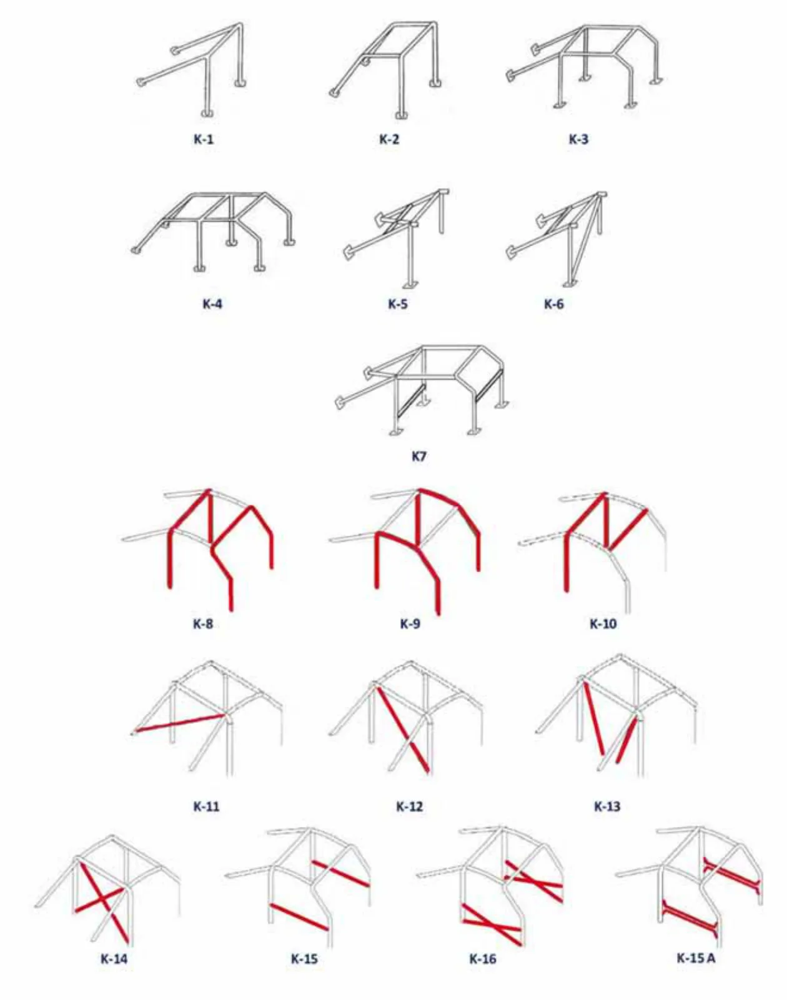
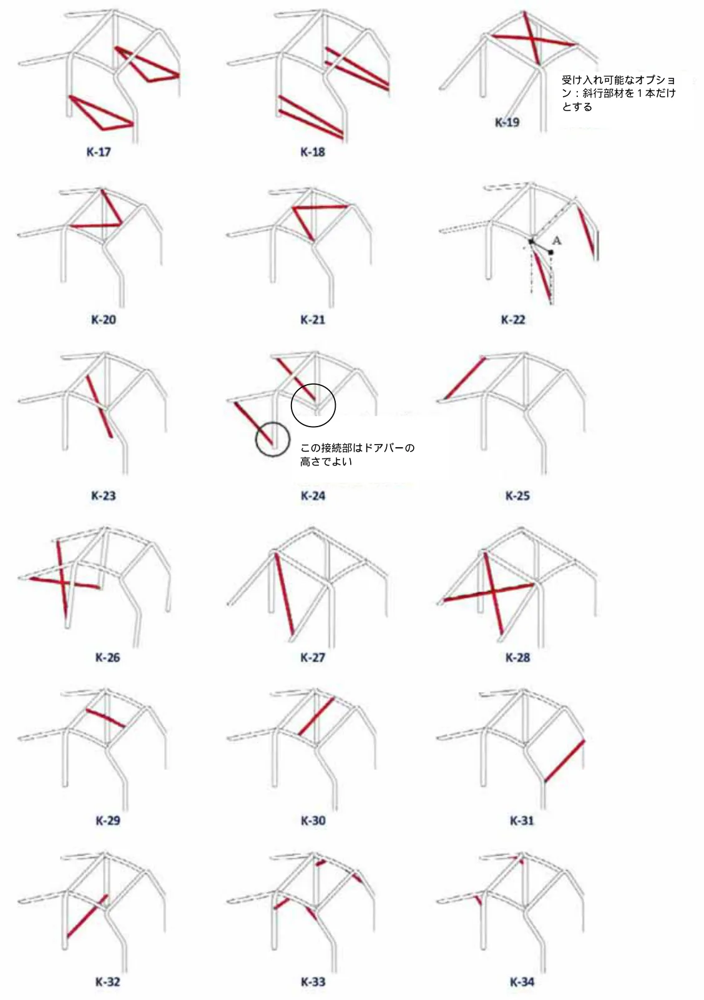
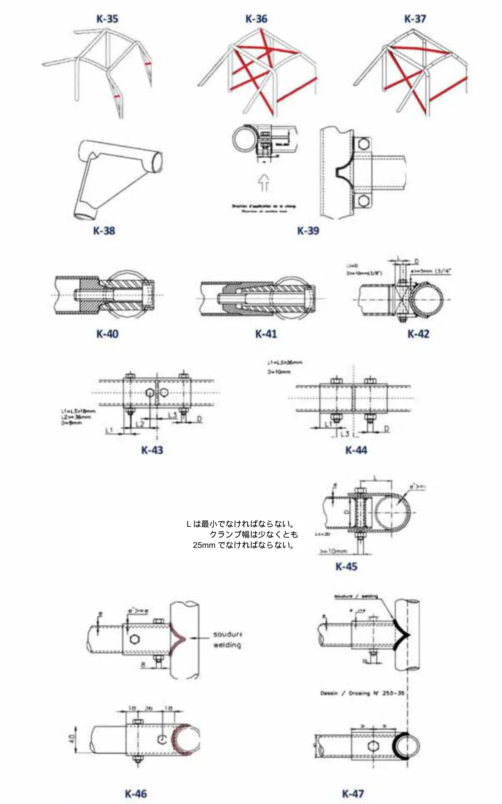
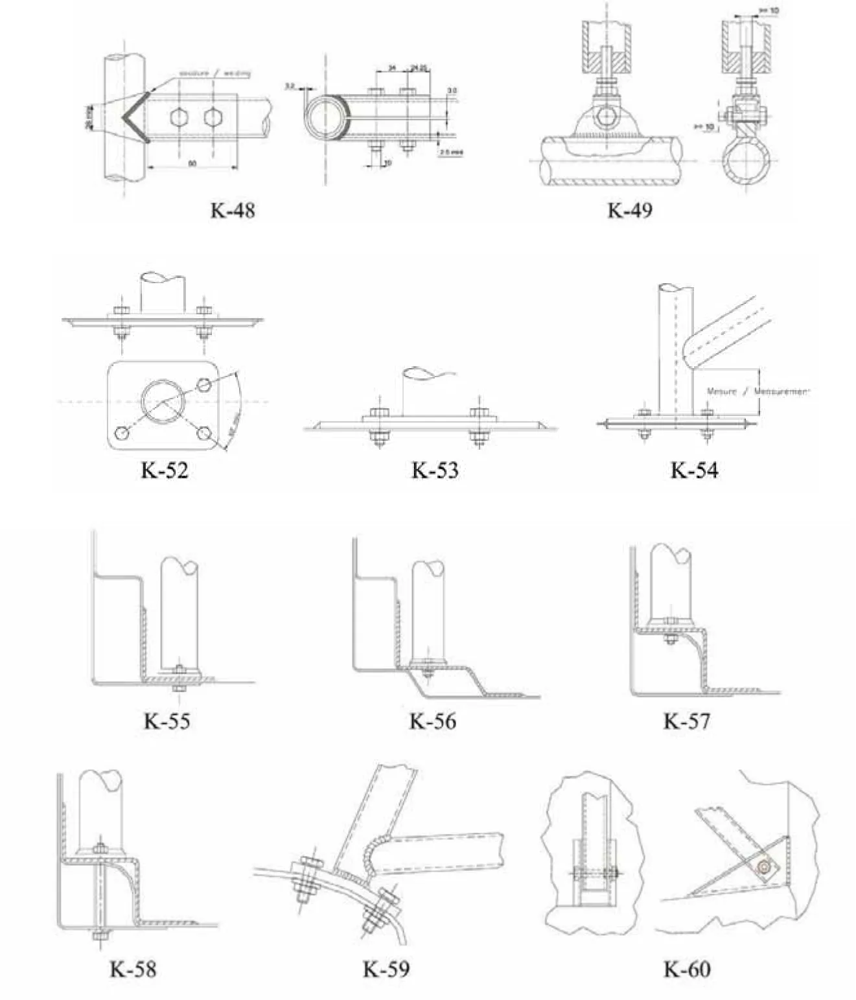
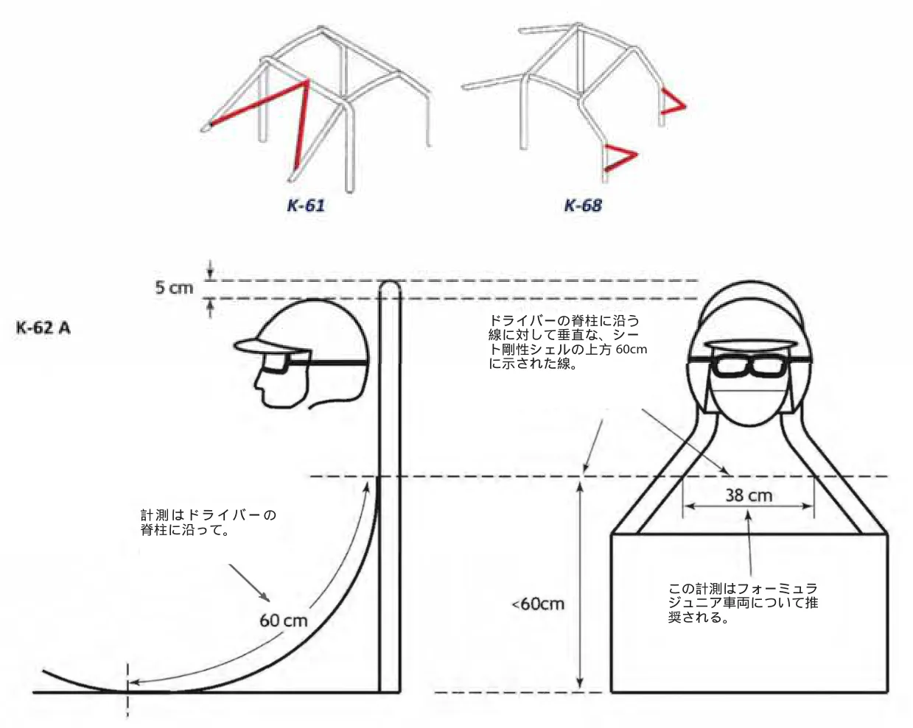
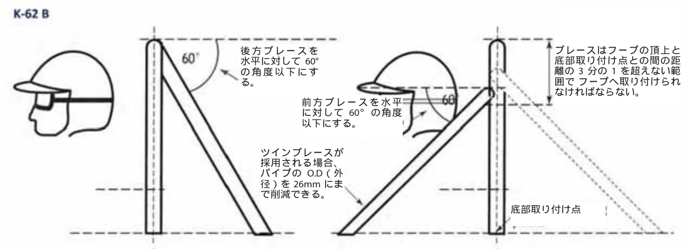
A)シングル後方ブレースB)ツイン前方または後方ブレース
図２ ロールオーバー保護構造体ブレースガイドライン
後方ブレースを備える場合、メインフープは垂直線に対して後方へ最大10°まで傾斜させることができる。
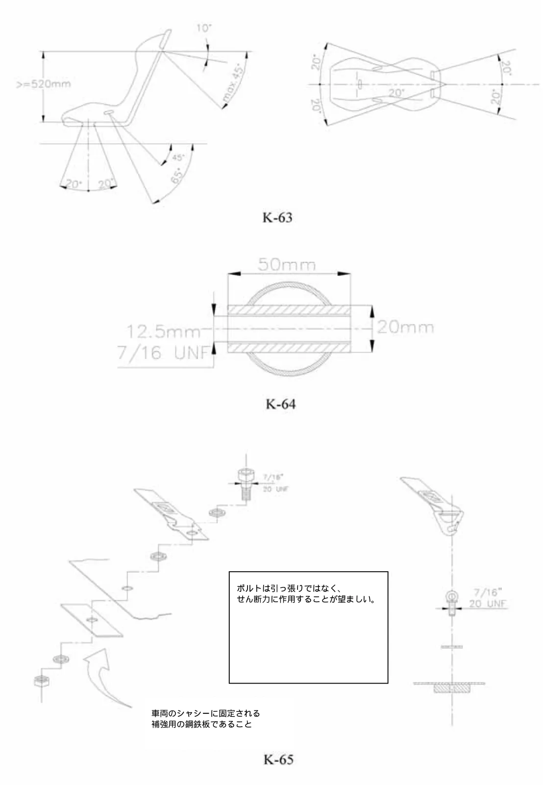
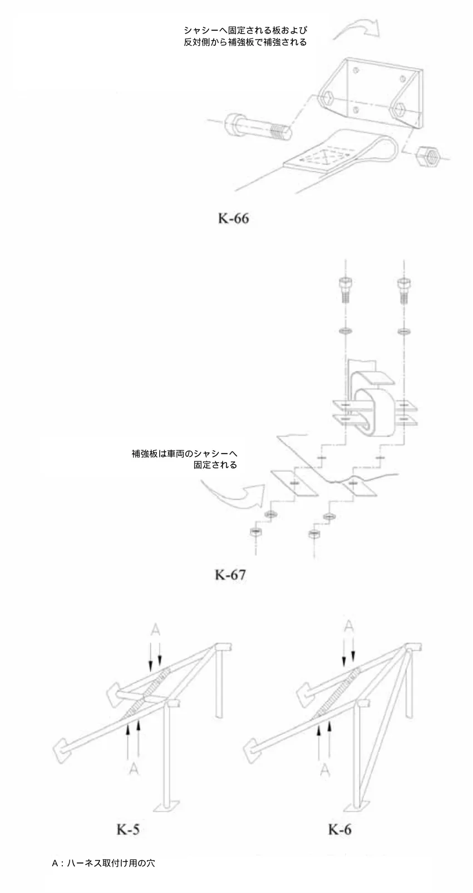
| シャシーへ固定される板および 反対側から補強板で補強される | る板および | |
P.51APPENDIX III
ELECTRONIC CONTROL UNITS (ECU), SOFTWARE, ELECTRONICS付則 III: 電子制御ユニット（ECU）、ソフトウェア、電子機器
1.定義
電子センサーとECUの数、配置、機能は、当該自動車の銘柄とモデルでピリオドにて合法的に使用されていたものと同一でなければならない。1.1 電子制御ユニット (ECU) または電子制御モジュール (ECM)自動車やその他のモーター車両の１つ以上の電気システムまたはサブシステムを制御する自動車用電子機器に組み込まれたシステム。1.2 クローズドループ電子制御システム実際の値（制御変数）が継続的に監視される電子制御システム。フィードバック信号は、希望する値（参照変数）と比較され、その結果に応じてシステムが自動的に調整される。1.3 センサー車両のさまざまな側面を監視し、ドライバーまたは ECU に情報を送信する電子デバイス。1.4 アクチュエータ制御ユニットからの電気信号を動作に変換する電子デバイス。1.5 信号の動作車両に反応させる信号はすべて、スイッチを作動させる他の車両コントロールの操作ではなく、ドライバーのみによって直接作動させなければならない。1.6 ECUからの信号エンジンに直接関係するもの以外、車両システムを制御するためのECUからの信号は禁止される。公認および／またはピリオドの仕様に従って複数の ECU が使用されている場合、またはピリオドの技術がトランスミッション／エンジンなどの異なるシステムを接続する場合、システムがピリオドと互換性があることが実証されれば、上記は無視することができる。例：エンジンECUに関連するギアボックスセンサー、エンジンに関連するフロント・リアディファレンシャル、またはトランスファーボックスセンサーなど。2.使用および適用
2.1 電子制御ユニットの使用が該当ピリオドの規定で当初承認されていた、または元々公認されている車両は、そのピリオドに使用されていたものと同じシステムを使用し、接続され、完全に機能していなければならない。2.2 これらのエンジン制御ユニット、センサー、アクチュエーターについては、車両のヒストリックテクニカルパスポート (HTP) に、公認書式の19ページに記載されている車両システムのオリジナル ダイアグラム（ある場合）を挿入して詳細を記載する必要がある。
P.522.3 顧客向けレーシングマニュアルや標準装備（グループN）などの製造者の文書、またはデバイス、センサー、アクチュエータの完全なリストを含む特定の文書を、車両のHTPに添付しなければならない。2.4 ECUの配置とメインコネクタの義務付けられる写真を19ページに挿入しなければならない。これは、ピリオドＪＲとそれ以降はすべての非公認車両に適用され、ピリオドＫとそれ以降は、該当するピリオドの規定で特定のECU、センサー、およびアクチュエータの追加が許可されているすべてのタイプの車両に適用される。これは、センサーおよび／あるいはアクチュエータの追加が禁止されているグループ A、B、およびN に分類される車両には適用されない。2.5 同様に、これらのエンジン制御ユニット、センサー、およびアクチュエータは、供給および／あるいは老朽化により交換される場合があるが、本付則に準拠し、 第2.2項に従ってHTPに詳細が記載されていなければならない。2.6 すべての車載コンピュータシステムからマシン コードをアップロードできなければならない。アップロード方法は車検チームが使用する機器または競技参加者がアップロードする機器と互換性がなければならず、必要に応じて完全に開示できなければならない。3.配置
3.1 量産車両およびスポーツカーの場合、エンジン制御ユニットおよび関連するすべての電子制御モジュールは、そのオリジナルの位置または同乗者エリア内に配置され、制御系に簡単にアクセスでき、すべての接続が見えるようになっていなければならい。3.2 フォーミュラカーの場合、エンジン制御ユニットと関連するすべての電子制御モジュールは、可能であればコックピット内、または車両ポンツーンの１つに配置され、ボディワークを取り外したときにすべての接続が見えるようになっていなければならない。4.制限
4.1 写真による証拠で裏付けられたピリオドの仕様でない限り、車両の走行中に運転者がブースト圧やエンジンマッピングを制御する電子管理システムを調整または変更できるようにするデバイスは禁止される。4.2 トラクションコントロールなどのクローズドループ電子制御システムは、該当ピリオドの付則J項および／またはFIAブルテン、選手権規則などの選手権に関連する公式出版物に別途記載されていない限り、禁止される。4.3 該当ピリオドの付則J項 および／またはFIAブルテン、選手権規則などの選手権に関連する公式出版物に別途記載されていない限り、自動または電子シャシー制御システムまたは機能は禁止される。これには次のものが含まれる：
P.534.3.1アンチロックブレーキ（ABS）、トラクションコントロール（TC）、オートマチックまたはセミオートマチックトランスミッション、パワー作動クラッチ、電子式または自動調整式のファイナルドライブ差動システム、ダンパーサスペンションまたは車高調整、パワーブレーキ、四輪ステアリング、可動式バラスト。4.3.2ピリオドの規則で許可されていない限り、四輪／ギアボックス／フロント・ミドル・リアディファレンシャル上のあらゆるセンサー、アクチュエータ、電線。ギアカットセンサーは許可される。4.3.3電子式、空気圧式、油圧式のスリップコントロールを備えたセミオートマチックまたはオートマチックギアボックスとディファレンシャル。4.3.4クローズドループ電子制御システム。運転者がエンジンの電気システムに作用して作動するシンプルなオープンループ電気スイッチは電子制御とはみなされない。4.3.5パワーステアリングは、プログラム可能な制御のないシンプルなシステムなため、採用できる場合がある。ピリオドの仕様が証明されていること、および／あるいは銘柄メーカーとモデルについて公認されていること。5.例外
5.1 ピリオド期間中にデジタルダッシュボードを使用していたことが証明された車両については、使用されたシステムおよび第2.6項に従ってディスプレイとシステムを更新できる。5.2 電子式または自動調整式のファイナルドライブデファレンシャルシステムが許可されている場合、これを電子式から機械式に変換できる。5.3 電子式から機械式への変換、または機能の削除は許可される。6.詳細
6.1 フォーミュラ1車両と理解されるピリオドＪＲ１の車両の場合、この注記でカバーされている、すべての品目は1993年12月31日まで認可され、1994年シーズンは実効的に禁止されていた。
セミオートマチックギアボックスは、1989年にフェラーリ641に導入されて以来、ピリオドの仕様と付則K項の第3.3項に従ってのみ許可されている。6.2 ピリオドKの車両、グループAおよびBの場合、ECUソフトウェアは、グループNに分類される車両を除いて自由である。センサーとアクチュエータの数は、いずれの場合も、ピリオドの付則J項に従って製造者のオリジナルの仕様に従っていなければならない。6.3 クラス1ツーリングカーとして理解されるピリオドK1の車両の場合、セミオートマチックギアボックスの使用は1995年とそれ以降にのみ許可される。6.4 次のページを参照
P.546.4
| ピリオド | JR1T | JR1 | JR2 | K | K1 | K2 | KC | KRC | KGT | KR | KR1 | KR2 |
|---|---|---|---|---|---|---|---|---|---|---|---|---|
| ピリオドにて付則 J項 によって与えられた自由は、完全な自由を与えるものではなく、むしろ、それらの当時の自由の結果として、特定の銘柄およびモデルでピリオド 当時実際に合法的に使用されていたものに従ってシステムの使用を許可するものである。 | ||||||||||||
| ECU | 自由 | 自由 | 自由 | 生産車 | 自由 | 自由 | 自由 | 自由 | 自由 | 自由 | 自由 | 自由 |
| フリーECUソフトウェア | 自由 | 自由 | 自由 | 第6.2項 | 自由 | 自由 | 自由 | 自由 | 自由 | 自由 | 自由 | 自由 |
| ホイールスピードセンサーの追加 | 不可 | 第6.1項 | 不可 | 不可 | 自由 | 不可 | 可 | 可 | 不可 | 不可 | 不可 | 不可 |
| ABS | 自由 | 第6.1項 | 不可 | 自由 | 自由 | 不可 | 自由 | 自由 | 自由 | 自由 | 不可 | 不可 |
| トラクションコントロール | 不可 | 第6.1項 | 不可 | 不可 | 自由 | 不可 | 自由 | 自由 | 不可 | 不可 | 不可 | 不可 |
| 電子制御デファレンシャル | 不可 | 第6.1項 | 不可 | 不可 | 自由 | 不可 | 自由 | 自由 | 不可 | 不可 | 可 | 不可 |
| アンチストール | 不可 | 第6.1項 | 不可 | 不可 | 自由 | 不可 | 不可 | 不可 | 不可 | 不可 | 1998年 から | 不可 |
| セミオートマチックギアボックス | 不可 | 第6.1項 | 可 | 不可 | 第6.3項 | 不可 | 不可 | 不可 | 不可 | 不可 | 可 | 不可 |
| アクティブサスペンション | 可 | 第6.1項 | 不可 | 不可 | 自由 | 不可 | 不可 | 不可 | 不可 | 不可 | 不可 | 不可 |
| アクティブエアロダイナミクス | 不可 | 不可 | 不可 | 不可 | 自由 | 不可 | 不可 | 不可 | 不可 | 不可 | 不可 | 不可 |
P.55APPENDIX IV
PERIOD SPECIFICATION OF DAMPERS付則 IV: ダンパーのピリオド仕様
1.序文
付則K項は交換用構成部品の仕様を、実績のあるピリオドの仕様に制約しており、交換用部品についてのガイダンスを提供している。（付則K項第3.3項）ダンパーの技術は1946年より格段に変化しており、この資料はピリオドでは何が利用できたか、また何を使用してよいのかをどのように確認するかについてのガイダンスを提供するものである。2.技術
特定の年に新しい技術が導入されたからといって、その年の車両のすべてのカテゴリーでこの技術の使用を自動的に承認するものではない。高度な技術の使用は段階的に導入されることが多く、当初は高レベルのカテゴリーに限定されていた。他のカテゴリーの最新技術は、この新しい技術を採用する前に利用可能とならなければならない。ダンパーを指定する前に慎重に考慮すべき特性は： ツインチューブか、モノチューブ構造か大気、低圧ガスあるいは高圧ガスか本体の材質調整不可調整可能およびアジャスターの数アジャスター付きまたはアジャスターなしのリモートリザーバー取り付けのタイプツインチューブ・テレスコピック式ダンパーには、上下に動くピストンのついたオイル中央充填室があり、それによりオイルをバルブを経由して移動させ制動抵抗力を作り出している。ダンパー本体内のオイルと金属の総容量がダンパーが圧縮されるにつれて増大するため、オイルとガスの入ったリザーバー（従来は大気圧であったが最近になって低圧に与圧されるようになった）が中央シリンダーを取り囲み、オイルが膨張できるスペースを作り出している。モノチューブダンパーはオイルガス相互作用のないダンパーで、通常は１本のチューブ構造である。オイルはフローティングピストンによって加圧下に保持され、そのピストンの後方には高圧ガスで満たされた部屋がある。ダンパーが圧縮されていくと、ガス室の容積が下がる。オイル室が高圧に保たれることで、オイルの泡立ちや空気混入を低減あるいは除去している。最近の設計では高圧ガスをツインチューブ設計に組み込むものがあり、この技術は、現在ヒストリックモータースポーツでレースを行っているほとんどのカテゴリーよりも後に利用可能となった。どのタイプのダンパーが車両に取り付けられているのかを割り出すことは難しい場合があるが、通例、完全に圧縮され次に解放される場合、モノチューブダンパーは解放される時に少なくとも部分的に開く。上下逆に取り付けされる、あるいは水平に取り付けされる場合のダンパーはモノチューブである（あるいは機能しない！）。大きい直径のピストンロッドと思われるようなものがついたマクファーソンストラットは、実際には、モノチューブダンパーが上下逆に取り付けされたものであり、目に見える可動パイプはダンパーカートリッジの外側である。大きな直径のパイプは曲げに対しての抵抗が大きいため、（ブレーキングやコーナリングの時に）より小さな直径のピストンロッドのツインチューブダンパーより、剛性の点で有利である。１つの取り付け穴に２つのアジャスターを組み込んでいるダンパーはモノチューブダンパーである。
P.56現在のモノチューブダンパーのアジャスターは、頂点のグランドナット下あるいは基部に隠されているか塞がれている。これはアジャスターがピリオドの仕様として受け入れられていないピリオドでは許容されないであろう。ツインチューブダンパーは、基部、頂点グランドおよびピストンにバルブを組み入れることができる。使用者が調整できる基部のバンプバルブのついたダンパーを製造するのは比較的単純で、この技術は1950年代中盤から使用されている。アームストロングは、1957年という早期に、ことによるとさらにそれより早い時期に、ユニットの基部上で１つのアジャスターノブによりバンプとリバウンドを一緒に調整するという、より洗練されたシステムを有していた。ほとんど平らなアジャスターも利用できた。バンプからリバウンドへのレシオは製造過程で固定され、アジャスターは両方とも同時に変更した。バンプとリバウンドを独立させることにより使用者による調整は、より難しくなったが、Koniは8211ダンパーでそれを最初に実現させた。両方のバルブが動くピストンに組み入れられているモノチューブダンパーを製作することは、製造者にとって挑戦であった。使用者が調整できるモノチューブダンパーは1980年代に入るまでなく、ダブル調整式モノチューブダンパーユニットが入手できるようになったのは1983年からであった。モノチューブダンパーのリモートリザーバーがその後すぐ続き、最初はシングルアジャスター、次にダブルアジャスター、そして現在は多方向の高速および低速バンプとリバウンド調整機能を備えてる。マクファーソンストラットは２つの形態がある：目に見える外側のケースがダンパーユニットの外部チューブを形成している、昔も今も比較的稀なストラット。構成部品はケース内に組み立てられており、必ず１つのフィラープラグがストラット本体上に見えている。より一般的なのはコンプリート・ダンパーカートリッジがストラットケースに収められ、保持グランドナットによって適所に保たれたユニット。マクファーソンストラット・モノチューブカートリッジ挿入部（上下逆取り付け）が使用される場合には、目に見えるチューブ（ストラット本体ではなく）の直径は、ピリオドの直径でなければならない。エスコート、マーク１と２両方とも、直径41mmパイプでモノチューブ、非調整式のピリオドのビルシュタイン挿入部を通常使用していた。50mmの挿入部はランチャ・ストラトスおよびフィアット131に使用されていた。ストラット頂点のアジャスターは、モノチューブのアジャスター設計を示している。リモートリザーバーは、より以降の仕様である。スプリングプラットフォームはピリオドの仕様でなければならない。規定では、ショックアブソーバーと統合されたプラットフォームとシャシーへのその他のスプリングタイプ取付部との区別はない。公認された車両については、多くのピリオドで、付則J項によりオリジナルのスプリング取付部が保持されなければならないと規定されており、製造者が公認された調整式プラットフォームを有していない限り、それらは使用できない。ピリオドＦ以降のレーシングカー（TSRC／単座席）では、コイルスプリング・ダンパーユニットに調整式スプリングプラットフォームを備えているのが非常に一般的であった。ピリオドＦの公認車両に公認された調整式プラットフォームが取り付けされたという証明は現在までない。3.詳細
3.1 以下の表に加えて、参考として付則K項は、交換部品の仕様を証明されたピリオドの仕様に限定し、交換部品のガイダンスを提供している（付則K項の第3.3項を参照）。
P.573.2 内部技術のピリオドは、コンポーネントの構造と共に、付則K項の第3.8.1項に従って考慮されなければならない。3.3 ダブルアジャスタブルダンパーから１つのアジャスターを取り除く、または削除しても、以前のピリオドの受け入れ可能なシングルアジャスタブルダンパーに変更することはできない。3.4
| ピリオド | E | F | G | H | I | J1 | J2 | K |
|---|---|---|---|---|---|---|---|---|
| ｽﾌﾟﾘﾝｸﾞﾌﾟﾗｯﾄﾌｫｰﾑの調整 | 注4 | 可 | 可 | 可 | 可 | 可 | 可 | 可 |
| 取り付け穴､全ｶﾃｺﾞﾘｰ､ﾒﾀﾗｽﾁｯｸﾌﾞｯｼｭ | 可 | 可 | 可 | 可 | 可 | 可 | 可 | 可 |
| 取り付け穴､ﾕﾆﾎﾞｰﾙ､公認車両 | 不可 | 不可 | (可 or 不可) | (可 or 不可) | (可 or 不可) | (可 or 不可) | (可 or 不可) | 可 |
| 取り付け穴､ﾕﾆﾎﾞｰﾙ､単座席&TSRC | 不可 | 可 | 可 | 可 | 可 | 可 | 可 | 可 |
| ﾂｲﾝﾁｭｰﾌﾞ､鋼鉄製本体･減衰力非調整式 | 可 | 可 | 可 | 可 | 可 | 可 | 可 | 可 |
| ﾂｲﾝﾁｭｰﾌﾞ､鋼鉄製本体･ｼﾝｸﾞﾙ減衰力制御調整式 | 1957年 から | 可 | 可 | 可 | 可 | 可 | 可 | 可 |
| ﾂｲﾝﾁｭｰﾌﾞ､鋼鉄製本体･ﾀﾞﾌﾞﾙ減衰力制御調整式 | 不可 | 注1 | 可 | 可 | 可 | 可 | 可 | 可 |
| ﾂｲﾝﾁｭｰﾌﾞ､ｱﾙﾐﾆｳﾑ製本体･ﾀﾞﾌﾞﾙ減衰力制御調整式 | 不可 | 不可 | 1967 年 から | 可 | 可 | 可 | 可 | 可 |
| ﾓﾉﾁｭｰﾌﾞ､鋼鉄製本体･減衰力非調整式 | 不可 | 注2 | 可 | 可 | 可 | 可 | 可 | 可 |
| ﾓﾉﾁｭｰﾌﾞ､ｱﾙﾐﾆｳﾑ製本体･減衰力非調整式 | 不可 | 不可 | 可 | 可 | 可 | 可 | 可 | 可 |
| ﾓﾉﾁｭｰﾌﾞ､鋼鉄製本体･減衰力調整式 | 不可 | 不可 | 不可 | 不可 | 不可 | 1986 年 から | 可 | 可 |
| ﾓﾉﾁｭｰﾌﾞ､ｱﾙﾐﾆｳﾑ製本体･減衰力調整式 | 不可 | 不可 | 不可 | 不可 | 不可 | 1986 年 から | 可 | 可 |
| ﾓﾉﾁｭｰﾌﾞ､ﾘﾓｰﾄﾘｻﾞｰﾊﾞｰ式 | 不可 | 不可 | 不可 | 不可 | 不可 | 注3 | 1988 年 から | 可 |
3.5 注１：1965年からのみ利用可能。従って1965年より前の仕様車には認められない。このピリオドのマクファーソンあるいはチャップマン(Chapman)ストラット仕様には利用できない。また、ミニと互換性のある寸法も利用できない。3.6 注２：モノチューブショックアブソーバーは利用できたが、非常に基本的な仕様となっており、ピリオドＦでモータースポーツにおいてそれらを使用することは非常に限られていた。3.7 注３：ピリオドの仕様が公認および／あるいは写真証拠によって証明できる場合に認められる。3.8 注４：ピリオドの仕様でない限り、調整プラットフォーム付きダンパーは、調整ができないようにしなければならない。ダンパーのねじ山の長さがスプリング プラットフォームの全厚と少なくとも同じ長さで5mmを超えず、プラットフォームの上または下に5mmを超えてねじ山が見えない場合、ねじ山の大部分を除去することによって調整不可に変更することが認められる。 ダンパー本体へのプラットフォームの溶接も許容されるが、溶接プロセスによって損傷が生じる可能性がない場合を除き、推奨されない。表中Regsとあるのは、「可」または「不可」である（書き換え済み）。ユニボール取り付け穴はピリオドＦからレース車両に使用されていたが、量産車への使用（通常は公認取得済み）は、適用される規定が常にサスペンション取付部に自由を認めているわけではないため、車両に適用されるピリオドとカテゴリーによって決まる。特定の車両に適用される付則J項およびピリオドの仕様は、ユニボール取付ユニットを使用する前に検査されるべきである。
P.58APPENDIX V
PRE-WAR CARS FROM PERIODS A TO D付則 V: 戦前の自動車（ピリオドAからD）
序文
「一般要求事項」では、付則Kがまずこの付則に適用され、さらに該当する場合は付則IからIVも考慮しなければならない。1.一般
1.1 車両は付則K項の第3.3項に従い、ピリオドの仕様に合致するものでなければならない。1.2 ピリオドの外装については、第3.4.2項が適用される。2.モノコックあるいは単一シャシー構造
2.1 シャシーはオリジナルのシャシー設計、寸法および構造に同じものでなければならない。3.前後のサスペンション
3.1 サスペンション要素がシャシーフレームに取り付けられるポイントは、寸法や位置がピリオドの仕様と異なっていてはならない。ビームとライブアクスル、および位置システムは、ピリオドの仕様でなければならない。3.2 サスペンションのシステム（スプリングのタイプ、およびホイールまたは軸の配置）は、ピリオド当時の改造で無い限り、変更することも、位置の追加やスプリング媒体を追加することも禁止される。4.エンジン
4.1 エンジン構成部品と付属部品は、ピリオドの仕様でなければならず、同一の銘柄、モデルおよびタイプのものが取り付けられ、ピリオドの証拠が存在する製造者の仕様に合致していなければならない。4.2 キャブレターのタイプ、モデル、および数は、ピリオドの仕様でなければならない。キャブレターは、ピリオドの証拠が存在する製造者ピリオドの仕様に従って、ピリオドの仕様の吸気マニホールドに取り付けるか、または吸気ポート（含複数）に直接取り付けなければならない。4.3 排気マニホールドおよび排気システム（サイレンサーを含む）は、最終出口までの位置、寸法、ジョイントを含め、ピリオドの仕様でなければならない。アセンブリは、ピリオドの証拠が存在する製造者ピリオドの仕様に従っていなければならない。4.4 エンジンのボアは、ピリオドの仕様よりも５％を超えて増大されてはならない。この操作は、車両が属するフォーミュラの気筒容積限界値を遵守するものである場合にのみ実施できる。
P.594.5 ストロークはピリオドの仕様に示される寸法から変更できない。4.6 標準のクランクケースの範囲内で、クランクシャフト、コネクティングロッド、ピストンおよびベアリングは、ピリオドの仕様よりも大きい寸法を採ることができる。これらは同一の素材のタイプで製造されたものでなければならない。ベアリングのタイプは変更できず、プレーンベアリングをボールベアリングやローラーベアリングに置き換えることはできない。構造方法は自由。4.7 バルブポートの数やバルブの長さは、これらが使用されたことを立証するピリオドの証拠が提出される場合を除き、製造者の仕様を上回ってはならない。シリンダーヘッドの改造品（コンバージョン）は、これらが使用されたことを立証するピリオドの証拠が提出された場合に使用することができる。4.8 オリジナルの点火順序が保持されなければならない。4.9 リップタイプのオイルシールが当初より装着されていないクランクシャフトは、現行の構成部品の変更および／あるいはオイルシール・ハウジングの追加により、リップタイプのオイルシールに変えることができる。4.9 電動ポンプは機械式ポンプに代替することができ、また機械式ポンプは電動ポンプに代替することができる。これらのポンプの数および取付位置は変更することができる。5.点火
5.1 点火システムはピリオドの仕様でなければならない。6.ギアボックス
6.1 すべての車両はそのピリオドの仕様のギアボックスを装着しなければならない。オートマチックトランスミッション、オーバードライブ、および追加の前進ギアは、ピリオドの仕様で無い限り認められない。6.2 ピリオドの装備ではなく、コタル電気式（COTAL ELECTRIC）、ウィルソン遊星歯車装置（WILSON EPICYCLICAL）、あるいは４速ギアボックスをピリオドＣ（1919年1月1日～1930年12月31日）の車両に装着した場合、その車両はピリオドＤ（1931年1月1日～1946年12月31日）の車両として分類される。6.3ギアボックスの出力および入力のシャフトでリップタイプのオイルシールが当初より装着されていないものは、現行の構成部品の変更および／あるいはオイルシール・ハウジングの追加により、リップタイプのオイルシールに変えることができる。
P.607.ファイナルドライブ
7.1 リミテッドスリップディファレンシャルは、ピリオドＡ～Ｃ（～1930年12月31日）の車両には使用できないが、ピリオドＤ（1931年1月1日～1946年12月31日）の車両にのみ、当該モデルのピリオドの仕様であれば装着することができる。8.ブレーキ
8.1 ブレーキの構成部品は、以下に記述する例外を除き、完全にそのモデルのピリオドの仕様でなければならない。8.2ピリオドＡ～Ｃ（～1930年12月31日）の車両で、２輪ブレーキが当初より装着されているものは、製造者が同一ピリオド内の後のモデルに４輪ブレーキを提供している場合で、その４輪ブレーキが製造者のピリオドの仕様である場合に、４輪ブレーキに変更することができる。8.3そのモデルのピリオドの仕様に従っているのであれば、異なる機械式システムへの変換、あるいは油圧式操作への変換が認められる。9.ホイール
9.1 すべてのホイールはピリオドの仕様でなければならず、車両の「国際競技期間」に使用された当初の直径をもつものでなければならない。9.2リム幅は、入手可能なタイヤを収容するために増大させではならないが縮小することはできる。a) 19インチホイールが、レースタイヤの装着に認められる。b) 次の表の通り、ビードエッジ(Beaded edge-(BE))あるいはストレードサイド(straight-sided -
(SS)) リムをサイズの同等なウェルベース（well-based）リムに交換することができる：
| オリジナルサイズ BE/SS | リムの最低直径 ウェルベース | 最大幅 ウェルベース |
| 26 x 3 | 19インチ | 3.5インチ |
| 710 x 90, 28 x 4 | 19インチ | 4.5インチ |
| 760 x 90, 810 x 90 | 21インチ | 4.75インチ |
| 30 x 3, 30 x 3.5 | 21インチ | 4.75インチ |
| 815 x 105, 820 x 120 | 21インチ | 5.25インチ |
| 880 x 120, 32 x 4.5 | 21インチ | 6.00インチ |
| 730 x 130 | 17インチ | 5.25インチ |
730 x 130 17インチ5.25インチ10. タイヤ
10.1 付則K項の付則XIに従わなければならない。
P.6111. 車体
11.1 車両は、当初競技参加していた状態の、追加のエアダクト、スクープ、あるいはブリスターの無い、ピリオド当時のシルエットを保持していなければならない。ロールバーの追加は、シルエットの変更とは見なされない。11.2 交換用ボディパネルは、そのオリジナルのシャシー用にピリオドで組み立てられた当初の設計に忠実に従わなければならず、オリジナルの素材のタイプで作られなければならない。11.3 オリジナルの素材のタイプおよび重量で製作された交換用のピリオドのボディは、それがピリオド当時のそのモデルに装着されていた認可されたボディと合致するものであること条件に、許可される。この場合、所有者はASNに左右側面、前面、後面および内部の写真を添えて、その旨を申告しなければならない。11.4 トノカバーは、当初からの車両のボディ部分である場合（ピリオドの写真にて証明される）を除き、柔軟性のあるものでなければならない。ボディ部分である場合には、端部を保護しなければならない。同乗者座席は取り外してもよい。11.5 グランプリ車両については、ボディワークには、その活動していた「国際競技期間」において当該車両に使用された外装を提示していなければならないが、競技の開催国の規定に従うこと。12. 電気システム
12.1 ダイナモのみ、ピリオドの仕様であるとみなされる。12.2 バッテリーおよびすべての電気的装置の公称電圧は、６ボルトから１２ボルトに変更することができる。バッテリーのタイプ、銘柄および容量（アンペア時）は自由。バッテリーがコクピットに保持されている場合は、絶縁性の液漏防止の囲い範囲内に確実に固定されていなければならない。13. 灯火
13.1 灯火装置を当初より搭載している車両は、それを機能できる状態に保っていなければならない。14. ホイールベース、トレッド、最低地上高
14.1 ホイールベース
ホイールベースはピリオドの仕様と異なるものであってはならない。14.2 トレッド
トレッドはピリオドの仕様と異なるものであってはならない。
P.6214.3 最低地上高
ピリオドＤを含むそれ以前の車両については、車両の懸架主要部のすべての部品は、100mmの最低地上高を持ち、車両下部のどちらの方向からも高さ100mmのブロックが挿入できなければ
ならない。14.4 手順
最低地上高はドライバーが搭乗しない状態で競技用のホイールとタイヤが装着されて計測され、
タイヤおよび／あるいはホイールが損傷している場合は必要に応じて交換できる。15. 重量
15.1 車両の最低重量は、車両のカテゴリー別の当初規定に指定されたものか、それが当初規定に指定のない場合はピリオドの公示重量であること。競技中に重量測定に選ばれた車両は、燃料を除きいかなるものも車両から取り除いてはならず、またいかなる液体、固体、もしくは気体を追加してはならない。16. ファン
16.1 機械式または電動式のファンを追加することが認められる。
P.63APPENDIX VI
TECHNICAL REGULATIONS FOR PRODUCTION CARS
付則 VI: 量産車両の技術規則
序文
「一般要求事項」では、付則Kがまずこの付則に適用され、さらに該当する場合は付則IからIVも考慮
しなければならない。1.一般
1.1 これらは、付則K項第7.9項および第7.10項に定義されている通りのツーリングカー、競技用ツーリングカー、グランドツーリングカーおよび競技用グランドツーリングカーと特殊ツーリングカーに適用される。1.2 1954年にFIAがツーリングおよびＧＴカー用に付則J項を確立した時、車両の技術仕様は、承認あるいは公認書によって定義され、それらの書式はASNによって編纂された。1958年（ＧＴカー）および1960年（ツーリングカー）からは、ASNがこれらの書式にデータを提供し、FIAのＣ ＳＩによって発給するようになった。FIAに保証された全ての承認あるいは公認書式は「公認書」と言われる。1.3適用される技術規則
1.3.1 ピリオドＥ、ＦおよびＧ１（1947年1月1日～1969年12月31日）のツーリング、およびGT車両は、付則Ｋ項第2項を遵守しなければならず、競技用ツーリングおよびGTS車両は本付則の第2、3項を遵守しなければならない。1.3.2 ツーリングカーは当該公認書通りでなければならないが、「グループ２にのみ有効’Valid for Group 2 only’」という押印のされた変型公認は認められない。摩耗した公認済カムシャフトまたは指定カムシャフトは、すべての位置のバルブリフト、すべてのローブの相対角度位置、およびカムシャフトの角度位置を決めるキー溝またはダボが維持されていれば、研磨によって再生することができる。1.3.3 GT車両は当該公認書通りでなければならないが、「グループ４にのみ有効’Valid for Group 4 only’」という押印のされた変型公認は認められない。摩耗した公認済カムシャフトまたは指定カムシャフトは、すべての位置のバルブリフト、すべてのローブの相対角度位置、およびカムシャフトの角度位置を決めるキー溝またはダボが維持されていれば、研磨によって再生することができる。1.3.4 ピリオド G2（1970年1月1日～1971年12月31日）からピリオドI（1977年1月1日～1981年12月31日）を含むそれまでのツーリング、競技用ツーリング、GT 、GTS 車両は、第3項で定義される期間の最終年に該当する付則J項 国際競技規則を遵守しなければならない。ピリオドＧ２以降の競技用ツーリングおよび競技用GT車両については、そのピリオド当時の付則J項規定にて明らかに許可されている改造に加え、当該ピリオド中に公認された追加や変型を含み、オリジナルのFIA公認書が有効である。
P.64たとえば、ピリオドH1の車両は、同じピリオド（1975年）に対応する公認書式と付則J項の両方
に準拠したピリオドの仕様に合わせて準備されなければならない。1.3.4.1 詳細
さらに競技用ツーリングカー、競技用グランドツーリングカーおよび特殊ツーリングカーについては：
－ ブレーキのサーボ補助装置は接続を切るか、取り外すことができる。
－ ピリオドＥからＩまでの車両は、リアウインドウ、ドアウインドウ、および、わき窓（クォーターライト）は、安全ガラスあるいは厚さ4mm以上の堅牢で透明な素材のものでなければならない（FAAタイプの素材、例えばLexan 400が推奨される）。
－ 垂直に開くサイドウインドウを、水平にスライドするものに交換してもよい。当初のウインドウが置き換えられている場合、ウインドウの機構は取り外すことができる。窓への追加の穴や通気口は、その銘柄とモデルにピリオドで使用されている場合にのみ許可される。
－ シャシーおよび／あるいはボディワークを、材質の追加によって強化することが認められる。その追加の材質はオリジナルの構造に沿い従っていなければならず、あらゆる点にてそれに接触していなければならない。その他の形状、プロフィール、ガゼット、ブレース付けは、使用されていたことが証明されピリオドで承認されていない限り、禁止される。ジャッキポイントは強化される場合があり、位置が変更されたり、追加のジャッキポイントが追加されたりする場合もある。
－ ピリオドＨ２およびＩのCTおよびGTS車両については、補強バーを、一方でフロントサスペンションストラットの上部取付点間に、他方ではリアサスペンションストラットの上部取付点間に、自由に取り付けることができる。
－ ピリオドの付則J項にてディスクブレーキの交換が条件付きで認められている場合、ディスクのタイプ（ソリッド、溝付き、ベンチレーテッド）は同一に保たれなければならない。
－ 床と天井の内張りを取り除くことができる。ドアの内張りは交換することができる。
－ 同乗者座席とスペアホイールは取り除くことができる。
－ リトラクタブル・ヘッドライト（格納式前照灯）は、固定すること、およびその機構を取り外すことが可能であるが、灯火は使用可能でなければならない。
－ クランクシャフトおよびギアボックスの出入力シャフトで、リップタイプのオイルシールが当初より装着されていないものは、現行の構成部品の変更および／あるいはオイルシール・ハウジングの追加により、リップタイプのオイルシールに変えることができる。
－ 電子式の点火装置を伴い公認されているピリオドＦの車両、および電子式の点火装置が使用された証拠があるピリオドＧ１とＧ２の車両は、非ピリオド電子式点火装置を使用することができるが、その装置の起動がコンタクトブレーカー（含複数）によるものであり、最低抵抗力が3オームの点火コイルを使用し、スパークがローターアームによって発出され、スパークのタイミングが完全に機械的方法で制御されることを条件とする。マルチスパーク・システムおよびスパークのタイミングが電子的に変更されるシステムは認められない。
－ ピリオドＧ１およびＧ２の電子式点火装置のある車両は、ピリオドの仕様であるならば、唯一磁気式あるいは光学式起動装置を使用することができる。
－ ピリオドＨ１以降の車両は、抵抗が3オーム未満の点火コイルおよび／あるいはマルチスパーク・システムを使用できる。
－ スパークのタイミングを制御する電子点火システムは、それがピリオドの改造である場合にのみ認められる。
P.65－ ディストリビューターのないクランクシャフト、フライホイール、またはプーリートリガー式およびマルチコイル点火システムは、特定の銘柄およびモデルでピリオド内に使用されていた場合にのみ許可される。
－ すべての電子制御ユニット（ECU）、ソフトウェア、および電子機器については、付則K
項の付則IIIを参照。1.3.4.2 燃料供給
ツーリングカーおよびグランドツーリングカー（ピリオドE～H2）：
燃料供給装置に限り、電動燃料ポンプを機械式燃料ポンプに、または機械式燃料ポンプを電
動燃料ポンプに変更することができる。その数および取付位置を変更することが認められる。1.3.5 ピリオドJ1とそれ以降車両は、選択した仕様の年に対応する公認書式と付則J項の両方に合致するピリオドの仕様に合わせて準備されなければならない。ピリオドの付則J項に従って、ターボチャージャー付き車両に適用される係数は次の通り： ピリオド J1 – 1.4 ピリオド J2以降 – 1.7該当する詳細については、付則K項の付則VIIを参照のこと。
1.3.6 ピリオドKC - キットカー正常進化
これは、グループAで以前に公認され、十分なシリーズで製造され、公認規定の要件を満たしている、所与の車両モデルのキット変型である。これらは、要求に応じて提供される「キット」
(VK) であり、製造者および／またはその承認した供給業者のいずれかからのみ入手できる。
競技参加者は、このように設計された車両のすべての技術データが、車両に適用される公認書式に記載されているものに合致し、または選択した仕様の年に対して適用される付則J項で明らかに承認されているものに準拠している限り、適切と思われる変型または変型の任意の品目を使用することができる。キット変型 (VK) はスーパーツーリングでは使用できず、他の分野で製造者が公認書式に記載する条件の下でのみ使用できる。これは特に、競技参加者が全体として考慮しなければならない部品のグループと、遵守しなければならない仕様に関係するものである。車両は特定の開発段階に対応していなければならず（元の製造日とは無関係）、したがって開発は完全に適用されるか、まったく適用されないかのどちらかでなければならない。さらに、競技参加者が特定のアップグレードを選択した場合は、それらの間に互換性がない限り、以前のアップグレードもすべて適用しなければならない。たとえば、ブレーキのアップグレードが２回連続して行われた場合、車両のアップグレード段階に日付が一致するアップグレードのみが使用される。車両が資格を有するには、製造者が承認した供給業者が組み立て時に提供したオリジナルの証明書を、ヒストリック テクニカル パスポート（HTP）申請手続き中にFIAに提出しなければならない。ピリオドに製造されたシェル、および／または最新のシェルには、該当する場合は、車両の VKに記載されている製造者の適合証明書を添付しなければならない。該当する場合は、この文書にシェルに対して行われた修理および/または変更が記載され、シェルとロールケージの番号に対応していなければならない。この同じ文書を、該当する公認書式に加えて、車両の HTPに添付
しなければならない。
P.661.3.7 ピリオドKRC - ワールドラリーカー正常進化
「ワールド ラリー カー」とは、グループAで以前に公認され、十分な量産数で製造され、公認規定の要件を満たした特定のモデルの車両である。グループA車両と同じ方法で組み立てられなければならない。ワールドラリーカー（WR）変型で詳細に説明されているすべての部品を完全に使用しなければならない。競技参加者は、そのように設計された車両のすべての技術データが、車両に適用される公認書式に記載されているものに準拠しているか、選択した仕様年に対して適用される付則J項で明らかに承認されていることを条件として、任意の変型または変型の任意の部分を使用できる。車両は、特定の進化段階に対応していなければならず（元の製造日とは無関係）、したがって、進化は完全に適用されるか、まったく適用しないかのどちらかとなる。さらに、競技参加者が特定のアップグレードを選択したら、互換性がない限り、以前のすべてのアップグレードも適用しなければならない。たとえば、２つのブレーキアップグレードが連続して行われた場合、日付が車両の開発段階に対応するものだけが使用される。車両が資格を得るには、ピリオドに製造されたシェルおよび／または最新のシェルに、製造者の適合証明書、つまりシェルがWR変型に完全に適合していることを詳述した特定の査察報告書を添付しなければならない。これらの文書は、ヒストリックテクニカルパスポート （HTP）申請手続き中にFIAに提出しなければならない。該当する場合、この文書にはシェルに対して行われた修理および／または変更が記載され、シェルとロールケージの番号に対応していなければなら
ない。この同じ文書は、該当する公認書式に加えて、車両のHTPに添付しなければならない。1.3.8 FIAがピリオドの中で修正し、ピリオドG2以降に適用された特定の公認車両の重量：
| 公認 | 銘柄 | モデル | 重量 |
| 1576 | ALFA ROMEO | 1750 GTAM | 970 kg |
| 585 | ALPINE | A110 - 1300 | 685 kg |
| 5331 | BMW | 2002 TI | 920 kg |
| 5310 | CHEVROLET | CAMARO 350 | 1520 kg |
| 523 | CHEVROLET | CORVETTE STINGRAY | 1370 kg |
| 5240 | FORD | P7/20M | 1100 kg |
| 5241 | FORD | P7/20M | 1100 kg |
| 5298 | FORD | CAPRI 2.3L | 950 kg |
| 1584 | FORD | P7 2600S | 1150 kg |
| 5176 | FORD | CORTINA LOTUS | 835 kg |
| 5211 | FORD | ESCORT GT | 770 kg |
| 5302 | FORD | CAPRI 2000 | 920 kg |
| 1524 | FORD | ESCORT TWIN CAM | 790 kg |
| 5248 | FORD | MUSTANG FB 302 | 1450 kg |
| 5249 | FORD | MUSTANG FB 351 | 1485 kg |
| 5250 | FORD | MUSTANG FB 428 | 1565 kg |
| 5251 | FORD | MUSTANG HT 302 | 1345 kg |
| 5252 | FORD | MUSTANG HT 351 | 1485 kg |
| 5253 | FORD | MUSTANG HT 428 | 1565 kg |
| 5273 | FORD | MUSTANG BOSS 302 | 1450 kg |
| 3002 | LANCIA | FULVIA RALLYE 1.3 | 880 kg |
| 3006 | LANCIA | FULVIA 1.6 HF | 830 kg |
| 3020 | LANCIA | FULVIA 1.3 S | 880 kg |
| 3024 | LANCIA | FULVIA 1.3 HF | 810 kg |
| 3031 | LANCIA | FULVIA SPORT 1.3 | 850 kg |
| 5274 | MERCURY | COUGAR 351 | 1525 kg |
| 5316 | TOYO-KOGYO | 1800 LUCE | 1025 kg |
| 5349 | TOYO-KOGYO | 1200 STA | 755 kg |
| 1541 | TOYO-KOGYO | M10A ROTARY | 850 kg |
| 1533 | VAUXHALL | VIVA GT | 930 kg |
1533 VAUXHALL VIVA GT 930 kg 1.3.9 ボディワーク
ピリオドの付則J項により認められている標準あるいは公認車体の派生型を採用することができる。かかるボディワーク変更は、そのピリオドにてFIA規定に則って開催された国際競技にて当該モデルに使用された完全な仕様形状に合致していなければならない。これを証明するピリオドの写真が、発行元ASNの押印のある車両のHTPに掲載されていなければならない。入手不可能な硬質プラスチック製の外装ボディパネル、バンパーおよびスポイラーを、ガラス強化プラスチック製の部品に交換することは、交換部品の形状が同一で、当初の固定具を使用し、当初の位置に装着され、重量が当初の公認部品を下回らないことを条件に、許可される場合がある。許可される交換はFIAヒストリックデータベースに掲載される。特に、CTおよびGTS車両に時に認められるトレッド変更(track changes)は、このモデルのピリオドに使用されていなければならず、正当化されなければならない。さらに、タイヤ接地面(tyre
treads)はボディワークで覆われてなければならない（ピリオドの付則J項参照）。1.3.10 ホイール
複数の素材で製作されたオリジナルのホイールを、当初の寸法および設計が保持されることを条
件に、それら素材のうちの１つのみを使用して製作されたホイールに置き換えることができる。1.4グループＢ安全上の理由でFIAによりピリオドにおいてラリー走行を禁止されていたグループB車両は、サーキットレース、ヒルクライム、デモンストレーションまたはパレードにおいてのみ使用することができる。そのHTPはHMSCによって発行前に検証されなければならない。これに該当する車両は次の通り： Audi Sport Quattro S1 公認n° B-264 Austin Rover MG Metro 6R4 公認n° B-277 Citroën BX 4TC 公認n° B-279 Ford RS 200 公認n° B-280 Fuji Subaru XT 4WD Turbo公認n° B-275 Lancia Delta S4 公認n° B-276 Peugeot 205 T16 公認n° B-262グループB：1987年から1990年を含むそれまでの仕様で、1600cm3を超え、および／または過給装置付きの車両。その他のグループB車両は制限無く競技に参加できる。ピリオドにおいて安全上の理由でFIAより禁止された技術的機構は、デモンストレーション／パ
レードにおいてのみ車両に使用することが認められる。2.ツーリングおよびグランドツーリング量産車両 － ピリオドＥ、ＦおよびＧ１
明らかにそれ以外が認められている場合を除き、磨耗あるいは事故により損傷を受けた部分の交換
は、置き換えられる部分と同一仕様の部品でのみ実施できる。2.1電気装置
2.1.1 照明装置 (公道競技)
すべての照明装置および信号装置は、競技開催国における法的要件または国際道路交通条約に従わなければならない。
P.682.1.2 前照灯の追加装備は、駐車灯を除き総数が６灯を超えない限り認められる。
2.1.3 追加の前照灯は、車体前部またはラジエターグリルに取り付けることができる。ただしこの場
合に必要となる開口部は、追加の前照灯によって完全に塞がれなければならない。
2.1.4 前部のガラス、反射鏡、および電球に関しては自由とする。白熱フィラメント、タングステン
または石英ハロゲン電球は12ボルトを超えないものを使用することができる。
2.1.5 車体に埋め込むことにより、後退灯を取り付けることができる。ただし、リバースギアが使用されている時にのみスイッチが入ることを条件とする。それらの灯火は車両の登録国の道路交通法規に適合していなければならない。
2.1.6 操作性のよいサーチライトを、当該車両が通過するすべての国の法的要件を満たすことを条件に、装備することができる。
2.1.7 プラグ、点火コイル、コンデンサー、および配電器: 銘柄は自由。気筒ごとのプラグ数、点火コイル、コンデンサー、配電器、およびスパークプラグは、当該モデルの製造者の仕様に合致しなければならない。
2.1.8 電子点火装置の追加は認められない。電子レブリミッターも同様とする。
2.1.9 バッテリーおよび発電器: タイプ（型式）と銘柄は自由。しかし、ダイナモ（直流発電器）をオルタネーター（交流発電器）に交換することはできない。発電器は、エンジンが稼動している時に、電気出力を発生し負荷がかかるものでなければならない。
2.1.10 バッテリーおよびすべての電気装置の公称ボルト数を、６ボルトから12ボルトに変更することができる。バッテリーの容量（アンペア時）は自由。
2.1.11 バッテリーがコクピットに保持される場合は、ドライ方式のもので、確実に固定され、絶縁性
の液漏れ防止のカバーで覆わなければならない。2.2サスペンション
2.2.1 ショックアブソーバー:
2.2.1 銘柄は自由。しかし、取り付け数および作動原理は、ピリオドの仕様でなければならない（テレスコピック式あるいはレバー式、油圧式、ガス充填油圧式または摩擦作動式）。また、作動システムはピリオド当時に車両に使用されていたものでなければならない。付則K項の付則IV参照。
2.2.2 スプリング支持体および、サスペンション取付け点は、いかなる方法であっても変更できない。
2.2.3 スプリング
2.2.4 サスペンションスプリングの寸法を変更することができる。それらは、タイプ、数、材質およびレートが置き換え元のスプリングのピリオドの仕様と同一であるならば、その他のものと置き換えることができる。
2.2.5 ヘルパースプリングは禁止される。
2.3ホイールとタイヤ
2.3.1 ホイール:
2.3.2 ホイールは、対象のモデルについて製造者が提供した仕様に合致していなければならない。
2.3.3 ホイールは、その直径、リム幅、オフセットによって明確に定められている。しかしながら、
ダンロップレーシングタイヤの装着が求められている行事に限り、直径400mmのホイールを直
径15インチのホイールに変更することができ、幅が４インチ未満のリムを最大で４インチ幅のリムに交換することができる。
2.3.4 スペアホイールの位置は変更できないが、取り付けの方法は自由。
2.3.5 タイヤ
P.69付則K項の付則XIに従わなければならない。2.4座席
座席ブラケットは変更できる。ロールケージの取り付けがある車両の後部座席を取り外すことができる。2.5エンジン
2.5.1 再ボーリング（Reboring）:
再ボーリングによる増大が車両のピリオドの容積クラスを変更しないことを条件に、公認され
たあるいは標準の量産ボアより最大で0.6mm大きくすることが認められる。2.5.3 ピストン
ピストンの改造は認められない。しかし、ピストンを置き換えるのであれば、ピリオドの仕様（形状、重量）に一致するものであれば、製造者から供給されたものに、あるいはその他の製
造者の供給による他のピストンに変更することは認められる。2.5.4 カムシャフト
変更してはならない。2.5.5 バルブ
長さは変更してはならない。2.5.6 バランス取り
認められるが、軽量化は１箇所につき5％未満でなければならない。2.5.7 エアフィルター
変更あるいは取り外しが認められる。2.5.8 キャブレター（含複数）
ジェットおよびチョークのみ変更が認められる。公認された銘柄およびタイプ、また製造者の
仕様は保持されなければならない。2.5.9 クランクシャフト
鉄系素材で製作された構成要素により交換することができる。ただし、それがオリジナルの構成要素と設計および全ての寸法が同一であることが条件とされる。オリジナルのメインベアリングキャップ、あるいはオリジナルと同じ素材により同一の型（パターン）に製造された再製
造キャップは、保持されなければならない。2.6 冷却装置
2.6.1 ラジエター2.6.2 当該モデルについて製造者が提供したラジエターは許可されるが、その取り付けシステムはいかなる方法によっても変更されてはならず、取り付け位置も変更してはならない。2.6.3 ラジエタースクリーンの追加は、固定式であっても移動式であっても、制御システムによって制限されることなく、認められる。
P.702.6.4 水冷エンジンのヒーターマトリックスと空冷エンジンの熱交換器を取り外すことはできるが、位置を変更することはできない。2.6.5 水パイプの位置は自由。2.6.6 ファン2.6.7 ブレードの数および寸法（あるいはその完全な取り外し）は自由。2.6.8 ファンの動作をクラッチによって一時的に停止することができる。2.6.9 オリジナルのファンを電気式ファンに変更することが認められる。2.6.10 サーモスタット2.6.11 銘柄および型式は自由。2.6.12 スプリング2.6.13 サスペンションスプリング以外のスプリングは、数、素材、およびレートが、置き換え元のスプリングのピリオドの仕様に同一であれば、他のものと交換することができる。2.7 トランスミッション/ クラッチ/ ギアボックスおよびファイナルドライブ
2.7.1 量産ツーリングカーについてはグループ１、標準グランドツーリングカーについてはグループ３の製造者の仕様に記載された、最大２セットの代替ギアボックスレシオとファイナルドライブレシオを使用することができる。2.7.2ドッグクラッチでギアを選択するギアボックスは認められない。2.7.3 既存のギアボックスへのオーバードライブシステムの追加装備は、ピリオドの仕様に適合する場合に限り認められる。2.7.4 当初のクラッチ制御装置は変更してはならない。2.8ブレーキ
2.8.1 フロントおよびリアブレーキ間の圧力制限装置は、ピリオドの仕様に含まれている場合にのみ装備することができる。2.8.2 ブレーキパイプは、柔軟性のある防護ケーシングによって保護することができる。2.8.3 ブレーキライニングの素材は自由であるが通常の整備上の機械加工のみが認められる。2.8.4 サーボ補助装置が普通装備となっている場合には、接続を切ってはならない。2.9ホイールベース、トレッド、最低地上高
P.712.9.1 ホイールベースおよびトレッド2.9.1.1 ホイールベースおよびトレッドは、公認されたものであるか、モデルが公認されていない場合は、製造者のオリジナルの仕様に合致したものでなければならない。2.9.1.2 トレッドに認められる公差は ± 1%。2.9.2 最低地上高車両の全ての懸架部分は、最低100mmの地上高を有し、行事競技中のいかなる場合にも、任意の側から800mm x 800mm x 100mmのサイズのブロックを車両の下に通すことができなければならない。最低地上高は、適格性認定デリゲート（ Eligibility Delegates）によって指定された表面の上で競技中いつでも計測できる。2.10 重量競技中いつでも、車両重量はHTPに記載された最低重量を下回ってはならない。2.11 バンパー
2.11.1 バンパーが車体の一体性を保つ絶対必要な部分構成していない限り、ラリーを除き、公認車両のバンパーおよびその支持体は取り外さなければならない。2.12.2 以下の車両は、バンパーが車体の一体性に必須の部分を構成していると見なされる: －Jaguar Mark 1 and 2 －Austin and Morris Mini、また、これらの派生車両全て。－Ford Falcon －Ford Mustang －Volvos 120タイプ全て。－VEB Wartburg、全てのタイプ。－Abarth 850TC and 1000 －Porsche 911、全てのタイプ。－Lotus Elan 2.12.3 ラリーに競技参加している車両は、バンパーなしでピリオド当時公認されていない限り、モデルのピリオドの仕様に合ったバンパーを取付けていなければならない。2.13スペアホイールスペアホイールは、以下を条件に、車両から取り外すことができる： －公認された最低重量が常に遵守されている。－ラリーでは、交通法規が遵守されなければならない。2.14補助的付加物
2.14.1 ピリオドの仕様あるいは公認書式に含まれていなかった補助的付加物は、車両の挙動に影響を及ぼさず、エンジンの性能、操舵、トランスミッション（伝達系統）、接地性、制動に、間接的にも影響を及ぼさない限り、制限なく許可される。
P.72こういった付加物は、美観または車内の居住性に関するもの（照明、暖房、ラジオなど）、および運転の操作性や安全性を高めるもの（スピードパイロット、ウインドスクリーン、ウォッ
シャーなど）とする。2.14.2 車両のシルエットは改変してはならない。2.14.3 ステアリングホイールの位置（右ハンドルか左ハンドルか）は、製造者が当該モデルをその仕様で提供している限りは任意に選択できる。以下が認められる： 2.14.3.1ホーン（警音器）は交換または追加できる。同乗者の操作のために改造することができる。2.14.3.2 ウインドスクリーンは、ヒーターデフロスター（霜取り装置）を組み込んだ同一の材質のものと交換することができる。2.14.3.3 暖房装置は、当該車両の製造者カタログに掲載されている代替ユニットと交換することができる。2.14.3.4 鋭利な端部が露出しない限り、車体外部の装飾（ラジエターグリルおよび前照灯周辺の装飾を除く）を取り外すことができる。2.14.3.5 当初の速度計は交換するものが同じハウジングにぴったり合うアナログタイプの場合には、取り替えてもよい。また、アナログタイプ計器を追加することもできる。2.14.3.6電気式水温計を、毛管タイプのものに取り替えることができる。また、標準のマノメーター（圧力計）を、より精度の高いものと交換してもよい。2.14.3.7 ジャッキアップポイントの強化、位置の変更、追加は認められる。2.14.3.8 バンパーガード（オーバーライダー）は取り外すことができるが、バンパーはその位置になければならない（本付則の12項に従って取り外される場合を除く）。2.14.3.9 グローブボックスとドアポケットは、拡大する改造のみが認められる。2.14.3.10 競技の規則によって、アンダーシールドの装備が認められる場合は、ブレーキおよび燃料配管を保護することができる。2.14.3.11 登録番号の位置と外観は、当該車両が所有されている国の法律的要件を満たす限り、自由2.14.3.12 代替のステアリングホイールを装備してもよい。しかし、ステアリング支柱取り付けの当初の方法は保持されなければならない。2.14.3.13 電気回路に追加のリレーとスイッチを付加してもよい。また、バッテリーケーブルを延長することもできる。
P.732.14.3.14 すべての電気スイッチの目的、位置および、追加付属品の場合にはその数も、自由に変更することができる。2.14.3.15 ホイールの装飾品を取り外したり、ホイールバランスを調整することができる。2.14.3.16 ナットおよびボルトは交換および／あるいはピンかワイヤーで固定することができる。2.14.3.17 当該車両の空力的特性に影響を与えない限り、前照灯のカバーを装着することができる。2.14.3.18 瞬間的なリリース（«フライオフ（fly-off）»機能）のためにのみ、ハンドブレーキを改造してもよい。2.14.3.19 車両の製造者あるいは外部の供給業者から供給された、当該クラスの属するピリオドの全て
の種類の脱着式ハードトップ。3.競技用ツーリングカーおよび競技用グランドツーリングカー
ピリオドＥ、ＦおよびＧ１
本付則第2 項の改造および／あるいは要件に加えて、以下の追加の改造がピリオドＥ、ＦおよびＧ１の競技用ツーリングカーおよび競技用グランドツーリングカーに認められる。3.1シャシーシャシーは、付則K項第1.3.4.1項を遵守しなければならない。3.2サスペンション3.2.1スタビライザー3.2.2 追加的なホイールの配置装置を構成しない限り、スタビライザーの装着は認められる。3.2.3 スタビライザーは調整式であってはならず、中まで均質な棒材でできた一体構造でなければならない。3.2.4 サスペンションのジオメトリーに影響を与えない限り、ピリオドの仕様に従い、ローズジョイントを使用することができる。3.2.5 ショックアブソーバー3.2.6 銘柄は自由。しかし、取り付け数および作動原理は、ピリオドの仕様でなければならない（テレスコピック式あるいはレバー式、油圧式、ガス充填油圧式または摩擦作動式）。また、作動システムはピリオド当時に車両に使用されていたものでなければならない。付則K項の付則 IVを参照。3.2.7 スプリング支持体
P.743.2.8 調節式のスプリングプラットフォームおよびライドハイト（車高調整）は、当該モデルのピリオドの仕様でない限り、禁止される。搭載する場合は、当初の調整方式でなければならない。3.2.9 サスペンションスプリング
サスペンションスプリングは、タイプと数が置き換え元のスプリングのピリオドの仕様と同一であるならば、その他のものと置き換えることができる。3.2.10 ヘルパースプリングは禁止される。3.2.11 コイル／リーフの数は自由。3.2.12 変数レートスプリングは、それがピリオドの仕様である場合にのみ使用できる。3.2.13 サスペンションのブレース固定／補強バーあるいはストラット、およびアンチトランプ（座金）バー3.2.14 当該モデルのピリオドの仕様でない限り、禁止される。3.4 スプリングサスペンションスプリング以外のスプリングは、数が置き換え元のスプリングのピリオドの仕様に同一であれば、他のものと交換することができる。3.5 発電器および点火装置ダイナモ（直流発電器）を、ピリオド当時入手可能であった仕様と同等、または、それ以上の出力のオルタネーター（交流発電器）に交換することは認められるが、発電器の稼動システムと方式は変更してはならない。歯の付いたプーリーは許可されない。標準仕様を下回る直径のスパークプラグは、ピリオドに使用された証拠が存在する場合、適切なアダプターと共に使用することができる。3.6エンジン3.6.1 再ボーリング再ボーリングによる増大が車両のピリオドの容積クラスを変更しないことを条件に、オリジナルのボアより最大で1.2mm大きくすることが認められる。3.6.2 シリンダーヘッドおよびブロックブロックまたはシリンダーヘッドの表面を機械加工すること、および／あるいはガスケットを抜くか異なった厚さのガスケットを使用することによって圧縮比を変更することができる。公認されたロッカーアーム組立品のみが使用可能である。3.6.3 ピストン、カムシャフトおよびバルブスプリングこれらを改造すること、あるいは別の仕様かまたは製造者の代替ピストン、カムシャフトおよびバルブスプリングを使用することは、その数が公認されたエンジンにおける数を超えない限り認められる。3.6.4 仕上げ
P.75エンジン部品の機械加工仕上げ、磨き仕上げおよびバランス取りが、以下を条件に認められる： a) これらの処理が、素材の追加を伴うことなく実施できること。b) 量産されていること、本規定により認められていること、および／あるいは公認されているということで、これらの部品の出所を疑いなく確立することが常に可能であること。c) 車両の公認書式に記載された寸法および重量が、書式あるいはピリオドの付則J項に指定されている公差を考慮して、遵守されていること。公差が書式に指定されていない場合、重
量についてのみ公差± 5%を考慮することができる。寸法については付則K項第3.10項参照。3.7オイルシステム3.7.1 エンジンオイルのためにのみ、オイルフィルターおよび／あるいはオイルクーラーを追加することができる。3.7.2 オイルクーラーは、上から見た場合に、ボディワーク外周内に収まっていなければならない。3.7.3 固定式あるいは移動式のサンプバッフルとゲートは認められる。3.8排気システム3.8.1 排気マニホールドはオリジナルと同一を保持しなければならないが、サイレンサー（消音器）と排気パイプのみは自由である。3.8.2 最終的な排気音量レベルは、競技が開催される国の法的制限枠内になければならない。3.8.3 排気パイプの出口は、地上から10cm以上45cm以下に位置すること。それらは車両の外周範囲内で、外辺から10cm未満にあって、ホイールベースの中心を通る垂直面より後方に位置しなければならない。この排気管出口は、当該モデルのピリオドの仕様である場合にのみ、車体外辺より外に出ることが許される。さらに、加熱したパイプによる発火を防ぐために、適切な防護が実施されなければならない。3.8.4 排気システムは、暫定的なものであってはならない。排気ガスは、排気ガスシステムの終点からのみ排出できる。シャシーの部品を排気ガスの排出に使用してはならない。3.9燃料システム3.9.1 電気式燃料ポンプを、機械式ポンプと交換することができ、その逆も認められる。それらの数と位置を変更することができる。3.9.2 一切の燃料タンクは、第5.5項に合致していなければならず、当初公認された、あるいは特定された容量を超えてはならず、当初の位置かまたはトランク内になければならない。3.9.3 燃料パイプの位置は自由。3.10キャブレターおよびエアフィルター
P.763.10.1 キャブレターは、以下を条件に、当該モデルの公認書式に特定されたものと異なる他のキャブレターに置き換えることができる：銘柄と設計の全ての細部および作動原理が、当該モデルのピリオドの仕様のキャブレター（含複数）と同一である（ジェット、スロットル、ポンプ、チョークの数などについて）、かつこれらのキャブレターが、当初の取り付け具を使用して、吸気マニホールドに直接取り付けることができる。ピリオドＧ１の車両についてのみ、上記を考慮し、ピリオドG1ではキャブレターの銘柄は自由であったため、当該モデルにピリオドで使用されている限り、どのような銘柄のキャブレターも使用できる。エアフィルターおよびそれらのハウジングは、ピリオドの仕様の吸気トランペットに交換することができる。3.11トランスミッション3.11.1 ギアボックスピリオドの仕様のギアボックス（マニュアルまたはオートマチック）およびレシオのみを使用することができる。ヘリカルカットのピニオンは、ストレートカットのものと交換することができる。3.11.2 ファイナルドライブピリオドの仕様のレシオのみを使用することができる。3.11.3 ディファレンシャルリミテッドスリップディファレンシャルは、ピリオドの合法仕様の場合にのみ装着できる。装着する場合、システムはピリオドで入手可能で使用されていたものと同じでなければならない。3.12ホイールとタイヤ3.12.1 ホイールホイールは、公認されたものであるか、ピリオド当時に入手可能であった仕様のものでなければならない。3.12.2 改造後の取り付けシステムが、当該モデルでピリオド当時に使用されていた場合には、取り付けシステムの改造を伴うホイールの強化を行うことができる。3.12.3 ピリオドＦおよびＧ１の競技用ツーリングカーおよび競技用グランドツーリングカーは、当初のホイール寸法のミニライト«Minilite»スタイルの合金ホイールを装備することができる。ただし、ピリオドの仕様の軽量ホイールが入手できない場合に限る。許可される最大トレッド幅が遵守されなければならない。3.12.4 タイヤ
付則K項の付則XI項を遵守しなければならない。3.13ブレーキ
制動システムは、次の例外を除き、完全にピリオドの仕様に合致したものでなければならない:
P.773.13.1 制動装置は２つの異なる油圧回路を通じて４つのホイール全てに同時に作用する二重の回路機能に改造することができる。ただし、これがペダルの位置および取り付け、あるいは車体の構造に影響を及ぼさないことを条件とする。ペダルは改造することはできるが、交換することはできない。サーボ補助システムは、装備しても接続を切ってもよい。3.13.2 ピリオドの仕様にない限り、圧力制限装置を油圧式ブレーキシステムに装備してはならない。フロントおよびリアホイール間の制動効果の均衡を取ることが可能な装置は､いかなる場合にも、運転席にいるドライバーが操作できるものであってはならない。3.13.3 ブレーキディスクを改造することはできない。3.13.4 摩擦材料と取り付け方法は自由であるが、摩擦面の寸法は公認書式に示されたとおりでなければならない。3.14コクピットおよびウインドスクリーン3.14.1 代替素材の使用に関する特別措置が認められている特定車両でない限り、ウインドスクリーンはラミネートガラスでなければならない。3.14.2 1955年以前に製造されたオープンカーについてはウインドスクリーンがスカットル（scuttle）の最上部の表面から垂直に最低20ｃｍ上方に出ている限り、自由である。3.14.3 1955年～1961年（両当該年含む）に製造された車両については、ウインドスクリーンは以下の最低寸法を有していなければならない: a) スカットルの最上部表面上方の垂直の高さ: 20cm, b) 幅：1000cm3までの車両は90cm まで、 1000cm3超の車両は100cm。3.14.4 リアウインドウ、ドアウインドウおよびわき窓（クォーターライト）は、安全ガラスあるいは最低厚み5mmの堅牢で透明な素材のものでなければならない（FAAタイプの素材： 例Lexan 400が推奨される）。当初のウインドウが置き換えられている場合、ウインドウの機構は取り外すことができる。3.14.5 垂直に開くサイドウインドウを、水平にスライドするものに取り替えてもよい。他の種類の開口部および/または通気孔は、公認の一部であるか、またはピリオドで使用されたことが証明されていない限り禁止される。3.14.6 上記第3.14.6項に厳密に合致する場合を除いてウインドウの附属部品（フレーム、取付締具、シールなど）の改造は認められない。3.14.7 前部座席を変更することができる。同乗者座席とクッション部分を取り除くことができる。3.14.8 床と天井のトリムを取り除くことができる。ドアのトリムは交換することができる。3.14.9 操作部およびその機能は、製造者の仕様に沿ったものでなければならない。しかし、ステアリング支柱を下げ、ハンドブレーキを延長し、コクピット内の他の場所に移し、「フライオフ
P.78«fly off»」機能に転換するという改造範囲内で、操作性向上のためにそれらの改造を行うことは
許可される。3.15アンダーシールド
車両下側への保護シールドの追加は、当初の公認書式にその種のシールドが示されているか、
または特別規則書で認められている場合に限り許可される。3.16空力補助装置
禁止される。3.17バラスト3.17.1 車両の重量はバラストで補足することができる。ただし、バラストは、強固な一体形成のブロックで、コクピットの床に工具を使って固定され、車検技術委員が見ることができ、封印することのできるものでなければならない。確実に固定されたスペアホイールは、バラストとして使用することができる。バラストが使用される場合、その許可される最大重量は５０ｋｇである。3.18ボディワーク3.18.1 競技用グランドツーリングカーのみ、ボディワークについて付則K項7.12項に示される通り、グランドツーリングカーを対象とする当時有効であった国際規則の範囲内で、当該ピリオドで実施された改造を含めることが認められる。3.18.2 ボディワークは、当該ピリオドにてFIAの規則に基づき開催された国際競技で、当該モデルに対して使用された完全な仕様形状（コンフィギュレーション）と合致していなければならない。3.18.3 公認されたボディワークが改造された場合、FIA公認書式の当該車両の履歴として、日付、内容、改造理由とともにこれを申告しなければならない。3.18.4 リトラクタブルヘッドライト（格納式前照灯）は、完全な機構がそのまま保たれたオリジナルのものでなければならない。
P.79APPENDIX VII
TECHNICAL REGULATIONS FOR PRODUCTION CARS
of Period J1, J2, K, KC, KRC付則 VII: ピリオドJ1, J2, K, KC, KRCの量産車両の技術規則
序文
「一般要求事項」では、付則Kがまずこの付則に適用され、さらに該当する場合は付則IからIVも考慮しなければならない。1.参加資格のある車両1.1ピリオドJ1（1982年1月1日～1987年12月31日）、J2（1988年1月1日～1992年12月31日）およびK（1993年1月1日～2000年12月31日）からの車両が以下の通り受け入れられる： － グループＮ車両－ グループＡ車両－ グループＢ車両 － 1600cm3以下－ グループＢ車両 － 1600cm3超および／あるいは過給器付き、ただし下記1.2項に定める使用制限に従う。－ キットカー正常進化 － ピリオドKC － ワールドラリーカー正常進化 － ピリオドKRC 1.2 安全上の理由でグループＢ車両でもピリオドにてラリー参加を禁止されていた車両もあることに注意しなければならない。同じ理由で、それら車両の使用はこのカテゴリーの競技にてまだ許可されていない（付則K項の付則VI第1.4項参照）。グループ B の車両 - 1987年から1990年を含む、それまでの仕様の1600cm3超、および／あるいは過給装置付き車両は、ラリーでは許可されず、サーキットおよび／あるいはヒルクライム競技にのみ参加できる。2.技術規定1.1に一覧されている車両は付則K項第7項および以下の項に合致していなければならない。2.1重量ピリオドＪ１、Ｊ２およびＫの車両のピリオド当時の付則J項に明記されている最低重量は、現在指定されている追加の安全装備との調整をとるため増量される。第4項参照。2.1.2 電子装置電子制御装置、エンジンマネジメントシステムおよび／あるいはセンサーが当初より装備されて公認されていた車両、あるいはその使用が許されていた車両は、ピリオド当時使用されていた通り、あるはピリオドの付則J項で要求されていたように、同じシステムをつなぎ、完全に機能する状態で使用しなければならない。2.1.2.1 これらのエンジン制御ユニットおよび/またはセンサーは、公認書式に詳述されている車両システムの元の図解を挿入することにより、19 ページの車両ヒストリック テクニカル パスポート（HTP）に詳細を記載しなければならない。2.1.2.2 キット変型（VARIANT KIT）あるいはWR変型（VARIANT WR）が使用される場合、そのVKあるいはWRについての特定の図解もHTP 19ページに挿入されなければならない。2.1.2.3 これらのエンジン制御ユニットおよび/またはセンサーが供給および／あるいは老朽化により交換されなければならない場合、付則K項の付則Ⅲに従うとともにピリオドの仕様でなければならない。
P.802.1.3 リストリクター － ラリーについてのみ2.1.3.1 リストリクター直径第4項参照2.1.3.2 適用されるリストリクター直径はHTP１ページに定められる仕様の年によって決定される。2.1.3.3 このリストリクターは、ラリーでは取り付けが義務付けられているものであるが、その他の競技では競技参加者がそれを使用することを決定する場合は、使用が禁止されいない。2.1.3.4 エンジンへの供給に必要なすべての空気はこのリストリクターを通過しなければならず、次の寸法を遵守しなければならない。a) この直径は、ホイールブレードの最も上流の端を通過する面から最高50mmに位置する回転軸に対し垂直な面から測定して、下流の方向へ最低3mmの幅が維持されなければならない。この距離は吸気ダクトの中立軸に沿って計測される（下記図参照）。b) この勅径は、温度条件にかかわらず満たされていなければならない。c) リストリクターの外径は､その最も細い部分でグループNでは46mm未満、グループAでは50mm未満でなければならず、上流、下流の双方へそれぞれ5mmの距離を維持していなければならない｡ d) リストリクターのターボチャージャーへの取付けに当たっては、コンプレッサーからリストリクターを取り外すためにコンプレッサーハウジングまたはリストリクターから２つのネジを完全に取り除かなければならないような形で行わなければならない。e) ニードルスクリューを使用した取付けは認められない｡ f) リストリクターの取付けに際し、コンプレッサーハウジングの部材の除去、または追加は、その目的がリストリクターをコンプレッサーハウジングに取り付けるためのものである場合に限り認められる。g) ネジの頭部に封印を可能にするための穴を開けなければならない｡ h) リストリクターは、単一の素材で作られていなければならず、取付けおよび封印を目的とした場合にのみ穴を開けることができる。これは、取付けネジ、リストリクター（またはリストリクターとコンプレッサーハウジングの取付け部）、コンプレッサーハウジング（またはハウジングとフランジの取付け部）およびタービンハウジング（またはハウジングとフランジの取付け部）の間に施されなければならない（下記図を参照）。
①リストリクター／ コンプレッサーハウジングの穴②コンプレッサーハウジング またはハウジング／フランジの穴③中央ハウジングまたはハウジング／フランジの穴 他の可能性
注：過給器付きエンジンのピリオドＪ１車両の公称気筒容積は係数1.4を掛け、ピリオドＪ２車両は係数1.7を掛ける。3.安全に関する規則 第1.1項に一覧されている車両は、以下の条項に矛盾なき場合、付則K項第5項（安全）に定められた条項に従わなければならない。
P.813.1 サイドウインドウの飛散防止フィルムピリオドJ1、J2、K、KC、およびKRCの車両は、ガラス製サイドウインドウの内側表面を透明で着色されていない飛散防止フィルムで覆わなければならない。車検の際にフィルムの検出を容易にするため、フィルムに小さい穴を残しておくこと。3.2 ウインドスクリーンフィルムラミネートのウインドスクリーン装着のすべての車両は、損傷を防ぐために透明な保護用プラスチックカバーを使用できる。このカバーはウインドスクリーンとおなじサイズと形状であり、完全にそれに接していなければならない。3.3 ロールオーバー保護構造体（ROPS）図付則K項の付則IIを参照。3.4 座席3.4.1 ピリオドJ1、J2、K、KC、およびKRCの車両の座席は、FIA基準8855/1999あるいは8862/2009の公認がされているものでなければならない。ただし、8862/2009基準のみを受け入れるランチア037は除く。座席支持具は公認規定に合致していなければならない。3.4.2 座席取付け部は、公認されていない限り、溶接されたクロスメンバーに取り付けてはならない。そうでない場合は、これらのクロスメンバーはボルトで固定し、現在の付則J項の図面に従っていなければならない。3.5 取り外し可能なステアリングホイール取り外し可能なステアリングホイールの取り付けは、ピリオドJ1、J2、K、KC、およびKRCの車両に義務付けられる（地域/国内の法律に従うことを条件とする）。3.6 燃料およびオイル配管‐燃料見本の取り出しピリオドJ1、J2、K、KC、およびKRCの車両は、量産の燃料およびオイルの配管を、付則J項第253条3.2に合致した金属製被膜（航空/エアロクイップ方式かそれと同等）の配管に交換しなければならない。燃料装置にはFIAテクニカルリストNo.5に掲載のドライブレーク燃料見本抽出カップリングが装備されていなければならない。3.7 消火器ピリオドJ1、J2、K、KC、およびKRCの車両は、現行の付則J項第253条7.2に合致する消火装置１つ、および付則J項第253条7.3に合致する手動式消火器１つの取り付けがなければならない。ラリーに参加する車両の場合、競技中に他のクルーが援助を必要とする場合に備えて、2台目の消火器を車両に搭載し、クルーが自由に使用できるようにしておくことが勧められる。4. J1、J2、K、KC、およびKRCについての詳細次のページを参照
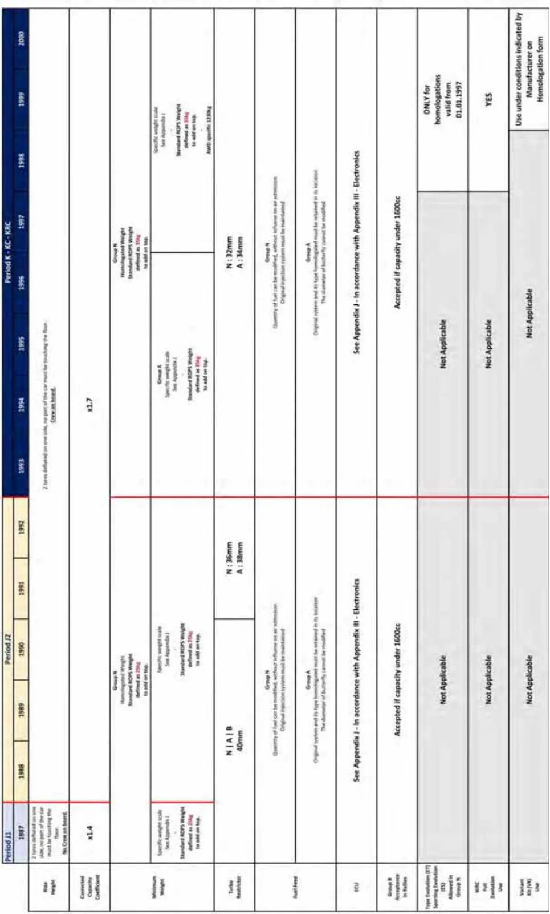
P.83（図内）
乗車高
片側の２本のタイヤの空気を抜いた状態で、車両のいかなる部分もフロアに接触してはならない。クルーは乗車しない。クルーが乗車修正された容積係数最小重量グループN公認された重量標準ROPS重量は２５ｋｇと定義され頂部に追加される。特定の重量スケール
付則J項参照
ターボリストリクター
燃料供給
グループN
空気の流入に影響を与えずに燃料の量を変更できる
オリジナルの噴射システムは維持しなければならない
グループA
オリジナルのシステムおよび公認されたそのタイプはその配置にて保持されなければならない
バタフライの直径は変更できないECU付則J項参照 付則Ⅲ電子装置に従う
グループBラリーへの受け入れ
容積が1600cc未満であれば受け入れられる
正常進化（ET）
スポーツ進化（ES）はグループNに認められる
適用せず
1997年1月1日より有効な公認についてのみ
WRCフル進化使用 適用せず
キット変型（VK）使用 適用せず
製造者によって公認書式に記載された条件下での使用
P.84APPENDIX VIII
TECHNICAL REGULATIONS FOR NON-HOMOLOGATED CARS
From Period E onwards付則 VIII: ピリオドEとそれ以降の非公認車両の技術規則
序文
「一般要求事項」では、付則Kがまずこの付則に適用され、さらに該当する場合は付則IからIVも考慮しなければならない。該当するピリオドの規則、必要に応じて付則 C項 または J項 は、FIA ヒストリック データベースで入手できる。1.シャシーモノコックあるいは単一構造体1.1 シャシーはオリジナルの設計と寸法、構造（組立方法）に従ったものでなければならない。コンポジット・シャシーを修理する際には、追加素材を付加することができるが、付則 I に従い専門家による検査を実施し、当該検査の証明書をFIA HTPに添付しなければならない。1.2 シャシーの変更は、そのピリオド内に合法的に行われた場合を除き一切行うことはできない。また当該車両が国際競技に参加した期間（以後「国際競技期間」«international life»という）のすべての安全要件を提示しなければならない。修理作業および複合構造については、FIAヒストリック データベースを参照のこと。2.フロント＆リアサスペンション2.1 シャシーフレームにサスペンション構成部品が取り付けられる位置は、その寸法あるいは位置について、ピリオドの仕様と異なっていてはならない。ビームおよびライブアクスル（活軸）、およびシステム配置はピリオドの仕様通りでなければならない。2.2 サスペンションのシステム（スプリングのタイプ、およびホイールまたは軸の配置）は、ピリオド当時の改造で無い限り、変更することも、位置の追加やスプリング媒体を追加することも禁止される。2.3 アンチロールバーおよびテレスコピック方式のショックアブソーバーは、ピリオドの仕様に含まれている場合にのみ認められる。2.4 ピリオドＥおよびＦの車両のアンチロールバーは中まで均質の棒材（solid bar）でできていなければならない。2.5 ピリオドＧとそれ以降の車両は、そのモデルのピリオドの仕様であることが証明されていれば管状アンチロールバーを使用できる。2.6 アンチロールバーの直径は自由である；しかし、この直径はモデルのピリオドの仕様に従わなければならない取り付け部によって制限される。
P.852.7 アンチダイブシステムは、そのモデルのピリオドの仕様でない限り、禁止される。2.8 使用されるダンパー技術は、付則K項の付則IVに詳述されているピリオドの仕様に従っていなければならない。2.9 ダンパーの開口長を制限するために使用される機構または技術は、それがそのモデルのピリオドの仕様でない限り、禁止される。2.10 調整式のスプリングプラットフォーム（Adjustable spring platforms）は、そのモデルのピリオドの仕様でない限りピリオドＦより前には使用できない。2.11 サスペンション・ブッシュは、寸法の変更をもたらさないことを条件に変更が許される。2.12 ローズジョイントはピリオドの仕様である場合にのみ使用できる。ピリオドＦの車両のアンチロールバーにローズジョイントを使用することは、サスペンションのジオメトリーに影響が無いことを条件に認められる。2.13 変数レートスプリングが使用されていたことを示すピリオドの証拠が提示されない限り、スプリングは定数レートでなければならない。2.14 ヘルパースプリングはピリオドの仕様である場合にのみ使用できる。2.15 当初よりアクティブサスペンション機構が搭載されている車両は、そのモデルのピリオドにて使用されていたノンアクティブ機構に戻すことができる。2.16 サスペンション構成部品は、付則K項の付則IIIに従った状態試験を受けていなければならない車両もある。3.エンジン3.1 エンジン構成部品と付属部品は、ピリオドの仕様でなければならず、同一の銘柄、モデルおよびタイプのものが取り付けられ、ピリオドの証拠が存在する製造者の仕様に合致していなければならない。3.2 ピリオドの容積上限を下回るエンジンは、車両の国際競技期間の間に用いられた行程容積（swept volume）を超えて増大できない。3.3 当初よりDFYエンジンが搭載されている車両のみ、DFY由来エンジンを使用することができる。コスワースDFVエンジン搭載の車両は、コスワースDFV由来エンジン構成部品をどれでも使用することができる。3.4 マトラ(Matra)スポーツエンジンを装着している車両は、いかなるマトラスポーツ由来のエンジン構成部品をも使用できる。3.5 ストロークはピリオドの仕様に示される寸法を変えてはならない。
P.863.6 クランクシャフト、コネクティングロッド、ピストンおよびベアリングは、同一の素材のタイプで製造されたものでなければならない。製造方法は自由。3.7 バルブポートの数やバルブの長さは、これらが使用されたことを立証するピリオドの証拠が提出される場合を除き、製造者の仕様を上回ってはならない。シリンダーヘッドの改造品（コンバージョン）は、これらが使用されたことを立証するピリオドの証拠が提出された場合に使用することができる。3.8 過給器付きエンジン、ターボチャージャー付きエンジン、ロータリーエンジン、タービンエンジンあるいは蒸気エンジン搭載車両の気筒容積（あるいは見なし気筒容積）には、ピリオドに使用されていた係数が乗じられること。注：過給器付きエンジンを搭載したピリオド J1 車の公称気筒容積には係数 1.4 が乗じられ、ピリオド J2 および K 車両の公称気筒容積には係数 1.7 が乗じられる。3.9 オリジナルの点火順序が保持されなければならない。3.10 リップタイプのオイルシールが当初より装着されていないクランクシャフトは、現行の構成部品の変更および／あるいはオイルシール・ハウジングの追加により、リップタイプのオイルシールに変えることができる。4.点火装置4.1 電子式点火装置は、ピリオドの仕様である場合にのみ使用できる。4.2 ピリオドにて電子式点火装置を使用した証明のあるピリオドＦの車両は、ピリオドでない電子式点火装置を使用できるが、このシステムの起動がコンタクトブレーカー（含複数）によるものであり、最低抵抗力が3オームの点火コイルを使用し、スパークがローターアームによって発出され、スパークのタイミングが完全に機械的方法で制御されることを条件とする。4.3 マルチスパーク・システムおよびスパークのタイミングが電子的に変更されるシステムは認められない。4.4 例外的に、起動の代替方法がピリオドで合法的に使用されていた証明がある場合、あらゆる点がピリオドの方法と同一であることを条件にこれを使用することができる。4.5 ピリオドＧＲの車両は、ピリオドに使用されている場合、磁気式あるいは光学式起動装置を使用することができる。蓄放電（ＣＤ）システムは、ピリオドの証明があれば使用できる。4.6 ピリオドＨＲ以降の車両は、抵抗が3オーム未満の点火コイルおよび／あるいはマルチスパーク・システムを使用できる。4.7 スパークのタイミングを制御する電子点火システムは、それがピリオドの改造である場合にのみ認められる。4.8 ピリオドＦとそれ以降については、電子式レブリミッターを使用しても良い。
P.87適用されるピリオドの規定によりこのようなシステムを装備していた車両は、元のシステムを
維持しなければならない。4.9 ＤＦＶ／ＤＦＹエンジンに、電子式エンジンマネジメントシステムを使用することは禁止される。他の車両についてはピリオドの仕様であること。4.10 点火コイル、コンデンサー、ディストリビューターあるいはマグネトーの銘柄は自由。ただし、それらが当該モデルの製造者仕様に合致していることを条件とする。4.11 クランクシャフト、フライホイール、またはプーリートリガー式、およびディストリビューターなしのマルチコイル点火システムは、特定の銘柄とモデルでピリオド中に使用された場合にのみ許可される。5.電子装置5.1 電子制御装置、エンジンマネジメントシステムおよび／あるいはセンサーが当初より装備されていた車両は、ピリオド当時使用されていた通り、あるはピリオドの付則J項で要求されていたように、同じシステムをつなぎ、完全に機能する状態で使用しなければならない。5.2 電子計器はピリオドの仕様でなければならないが、エンジン回転数、エンジン油圧、エンジンオイル温度、エンジン冷却水温度および燃料圧力の機能のみを提供するデータ取得システムを使用できる。5.3 ステアリングホイールに取り付けられたコントロールや電子システムの調整は、ピリオドの仕様である場合にのみ使用できる。5.4 ピリオドIC、JR1T、JR1、JR2、およびK以降の車両5.5 これらのエンジン制御ユニットおよび/またはセンサーは、車両のシステム図解とすべてのコンポーネントおよび/またはセンサーの完全なリストを挿入することにより、車両のヒストリックテクニカル パスポート（HTP）19 ページに詳細を記載しなければならない。5.6 入手不能および／あるいは老朽化のため、エンジン制御ユニットおよび／またはセンサーを交換する必要がある場合は、交換品は付則K項の付則IIIおよびピリオドの仕様に準拠しなければならない。6.リストリクター6.1 ピリオドＫとそれ以降、インレットリストリクターは、FIAヒストリック データベースで入手可能な適切なピリオドの規則に従って、ピリオドの仕様に合致していなければならない。7.潤滑系7.1 ピリオドの仕様であれば、例えば、ウェットサンプからドライサンプへのように、エンジンの潤滑システムを変更することが認められる。
P.887.2 使用されるオイルポンプの数およびタイプ、およびオイル配管の長さは、ピリオドの仕様に合致していなければならない。7.3 オイルクーラーの位置を変更することは認められるが、車両のシルエットを変更してはならない。8.燃料システム8.1 同一のピリオドあるいはそれ以前のキャブレターを使用することができるが、当該モデルにピリオド当時使用されており、ピリオドのインレットマニホールドに直接取り付けられていたのであれば、当初装着されていたものと構成部品が同数であり一般的タイプで、作動原理が同じである場合にのみ、使用することができる。8.2 1959年以前の仕様のピリオドＥ車両について、ウエバー（Weber）DCOEキャブレターは認められない。それらは、1958年以降のピリオドＥの使用が証明できる車両で使用できる。8.3 燃料噴射装置が装備された車両は、同じピリオドのキャブレターに変更することができる。8.4 燃料噴射装置および／あるいは過給器は、ピリオドでそれを使用しており、かつ当初のシステムを使用することのみが認められる。8.5 機械式燃料ポンプを、電気式ポンプと交換すること、またその逆が認められる。8.6 すべての燃料タンクは５項５に合致するものでなければならない。また、当初特定された容量（上記p28のチャートに従う）を超えてはならず、当初の搭載位置か車両後部に搭載されなければならない。1991年とそれ以降の車両については、ピリオドの付則J項を参照。9.ギアボックス9.1 すべての車両はそのピリオドの仕様のギアボックスを装着しなければならない。オートマチック・トランスミッション、オーバードライブ、および追加の前進ギアは、ピリオドの仕様で無い限り認められない。9.2 ピリオドＥ（1947年1月1日～1960年12月31日）の仕様に製造されたギアボックスは、それ以前のピリオドに製造された車両に搭載されてはならない。9.3 当初、セミオートマチックトランスミッションが装着されていた車両は、同一モデルの車両に装備されていたタイプのマニュアルギアボックスに変更することができる。9.4 ステアリングホイールにあるパドルを介してギアをシフトできる電気機械システムは、ピリオドの仕様である場合にのみ使用できる。9.5 ギアボックスの出力および入力のシャフトで、リップタイプのオイルシールが当初より装着されていないものは、現行の構成部品の変更および／あるいはオイルシール・ハウジングの追加により、リップタイプのオイルシールに変えることができる。
P.8910.ファイナルドライブ（最終減速装置）10.1 リミテッドスリップディファレンシャルは、それがピリオドの仕様である場合にのみ装着することができる。装着される場合、スリップを制限するシステムはピリオドで当時入手可能で使用されていたものと同じでなければならない。10.2 リミテッドスリップディファレンシャルは、フォーミュラ３（1964～70年）車両には使用できない。10.3 電子式または自動調整式のディファレンシャルは機械式に変換することができる。11.ブレーキ（制動装置）11.1 ブレーキの構成部品は、いかに記述する例外を除き、完全にそのモデルのピリオドの仕様でなければならない。11.2 ピリオドの仕様であるならば、異なる機械式システムへの変換、あるいは油圧式操作への変換が認められる。11.3 ディスクブレーキ、ベンチレーティッド・ディスクおよびマルチポット・キャリパーは、モデルのピリオドの仕様である場合に限り認められる11.4 油圧式制動システムは、２つの異なる油圧回路を通じて、４つのホイール全てに同時に作用する二重回路機能に変換することができる。11.5 ディスクブレーキの周辺に冷却用エアボックスを取り付けることは認められる。11.6 銘柄とモデルについてピリオドの仕様に準拠したフロアダクトまたはスクープ（NACAまたはその他）のみを使用できる。11.7 油圧ラインをエアロクイップ«Aeroquip»方式の配管に交換することができる。11.8 当初、カーボン（パッド）／カーボン（ローター）のブレーキが装着されていた車両はそれを同時代のキャリパーおよび従来型のパッドの付いた鋼鉄製ディスクに変更することができる。ただし、キャリパーの数とホイールごとのピストンはオリジナルと同じでなければならない。12. ホイール12.1 すべてのホイールはピリオドの仕様でなければならず、車両の「国際競技期間」に使用された当初の直径をもつものでなければならない。12.2 リム幅は、入手可能なタイヤを収容するために増大させではならないが縮小することはできる。12.3 ピリオドＥ～Ｆ（両当該年含）a) 認められる最小直径は、ピリオドの仕様により証明できる寸法とする。
P.90b) リムの最大幅はピリオドの仕様に従わなければならず、5½インチ(ピリオドＦ車両については6½インチ)を超えてはならない。ただし、それを超える寸法を支持するピリオドの証拠が提出できる場合はその限りでは無い。c) ピリオドの仕様が存在しない場合、または5½インチ(6½インチ)を超えるリム幅が提案される場合、FIAヒストリック・テクニカルワーキンググループが寸法を特定する。
d) ピリオドの仕様の分割リム・ホイールのみが許される。12.4 ピリオドＧ以降
a) ピリオドの仕様よりも狭いリム幅のホイールを使用することができる。
b) カテゴリーによっては、ホイールは新品であっても、付則K項の付則Iのコンディションテスト規定に従わなければならない。c) 複数の素材で製作されたオリジナルのホイールを、当初の寸法および設計が保持されることを条件に、それら素材のうちの１つのみを使用して製作されたホイールに置き換えるこ
とができる。13. タイヤ
付則K項の付則XIを遵守しなければならない。14. ボディワーク
14.1 車両は、完全なピリオドの仕様の一部として使用されたのと同じシルエットと下面を維持し、追加のエアダクト、スクープ、あるいはブリスターを備えていてはならない。14.2 ROPSの追加は、シルエットの変更とは見なされない。14.3 交換用ボディパネルは、そのオリジナルのシャシー用にピリオドで組み立てられた当初の設計に忠実に従わなければならず、オリジナルの素材のタイプで作られなければならない。14.4 トノカバーは、当初からの車両のボディ部分である場合（ピリオドの写真にて証明される）を除き、柔軟性のあるものでなければならない。ボディ部分である場合には、端部を保護しなければならない。同乗者座席は取り外してもよい。15. 空力補助装置15.1 空力装置は、ピリオドの仕様である場合に限り取り付けてよい。15.2 その装置は、当該車両のピリオドで使用されていたものと設計、位置、寸法が同じでなければならない。15.3 単座席については（For single seaters）、車両の非懸架部分に取り付けられる、および／またはコクピットから調節可能な空力装置は禁止される。15.4 当初、空力装置を装着して走行していた車両は、それを取り外して走行することができる。15.5 ガーニーフラップは1974年とそれ以降許可される。
P.9115.6 固定された空力スカートでピリオド（1981～1982年の間）に走行していた車両は、オリジナルのスカートを装着したままで、当初の設計哲学を維持することができる。しかしながら、スカートは、義務付けられている40mmの静止状態での最低地上高を維持するために改造されなければならない。摩擦ストリップは認められない。16. 電気システム16.1 オルタネーターは、ピリオドの仕様である場合に限り装着できる。16.2 バッテリーおよび全ての電気的装置の公称電圧は、６ボルトから１２ボルトに変更することができる。バッテリーのタイプ、銘柄および容量（アンペア時）は自由。バッテリーがコクピットに保持されている場合は、確実に固定され、絶縁性の液漏防止カバーで覆われていなければならない。17. 灯火
17.1 車両に当初より取り付けられている灯火装置は、機能できる状態に保たれていなければならない。18. ホイールベース、トレッド、最低地上高18.1 ホイールベースホイールベースはピリオドの仕様と異なるものであってはならない。18.2 トレッドトレッドはピリオドの仕様と異なるものであってはならない。18.3 最低地上高
ピリオドＥおよびＦの車両は、60mmの最低地上高を持ち、車両下部のどちらの方向からも高さ60mmのブロックが挿入できなければならない。18.4 ピリオドＧとそれ以降の全ての車両は、ピリオドの仕様を守らなければならない。18.5 最低地上高は、ドライバーが搭乗しない状態で競技用のホイールとタイヤが装着されて計測される。タイヤとホイールが損傷している場合は交換する。19. 重量19.1 車両の最低重量は、車両のカテゴリー別の当初規定に指定されたものか、それが当初規定に指定のない場合はピリオドの公示重量であること。19.2 競技中に重量測定に選ばれた車両は、燃料を除きいかなるものも車両から取り除いてはならず、またいかなる液体、固体、もしくは気体を追加してはならない。19.3 ピリオドGRフォーミュラ３車両の最低重量制限は400kgである。
P.921961年～1990年付則Ｊ項の燃料タンク
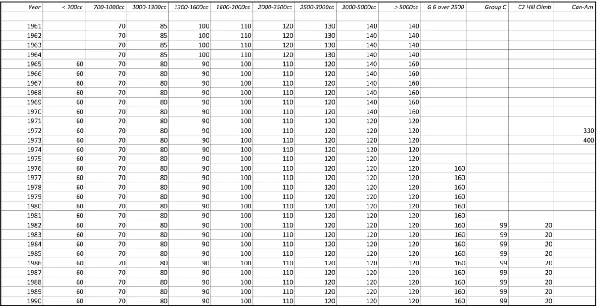
P.93APPENDIX IX
Technical Regurations for Formula One Cars (1966-1994)付則 IX: フォーミュラ１車両の技術規則（1996年-1994年)
序文
「一般要求事項」では、付則Kがまずこの付則に適用され、さらに該当する場合は付則IからIVも考慮しなければならない。1.一般規定フォーミュラ１車両は、単座席で、ピリオド分類がGR､HR、IR1、JR1TおよびJR1のフォーミュラ１レーシングカーである。－ GR 1966/1/1から1971/12/31までの3リッターF1
－ HR 1972/1/1から1976/12/31までの3リッターF1
－ IR1 1977/1/1から1985/12/31までの3リッターF1
－ JR1T 1977/1/1から1988/12/31までのターボチャージャー付エンジン搭載のF1車両
－ JR1 1987/1/1から1994/12/31までの3.5リッターF1
車両は、当該車両の製造された年、あるいは国際競技に参加した年に有効であったFIA F1規則に合致していなければならない。車両はピリオドの証拠が存在する1966/1/1から1994/12/31の間の国際フォーミュラ１競技に参加し、車検に合格していなければならない。当該ピリオド（1966/1/1～1994/12/31）にグランプリチームによって製作され、製造年に有効であったFIA F1規則に合致したプロトタイプF1車両も受け入れられる。ただし、その車両がグランプリチームによって当時のテストあるいは開発車両として使用されていたことを示す証拠と、その起源、オリジナル仕様および経歴を明らかにする証拠が示されること。ガスタービンエンジン車両は、パレードおよびデモンストレーションに限り容認される。ピリオドKRとそれ以降のフォーミュラ１車両は、車両の製造年または国際競技への参加時に有効であった付則 K項 および関連するFIAフォーミュラ１規則を遵守しなければならない。車両とそのコンポーネントは、コンディションテストに関する付則K項の付則 I の要件に従って
いなければならず、すべての競技中、証明書は車両の HTP に添付されていなければならない。2.シャシーシャシーは、オリジナルの設計と構造に合致していなければならない。材質を追加することにより複合素材のシャシーを修理しても良いが、専門の検査技術がそのシャシーに用いられなければならず、また、その検査の証明書がFIA HTPに添付されなければならない。付則K項の付則I を参照。
P.94シャシーに対して他のいかなる変更も行われてはならず、また、当該車両が国際競技シリーズに参加した期間（以後「国際競技期間」という）のすべての安全要件を満たしていなければな
らない。3.前後サスペンション
サスペンションは、製造者の仕様に合致するか、ピリオドの証拠が存在するシステムに合致しなければならない。スプリングは、可変レートスプリングあるいはダブルスプリングの使用を示すピリオドの証拠が無い限りは、シングルかつ一定のレートでなくてはならない。ダンパーのピリオドの仕様については、付則K項の付則IVを参照。オリジナルでアクティブサスペンション装置が装着されていた車両は、当該モデルのピリオド
で使用されていた非アクティブの装置に変更しても良い。4.エンジン
搭載されるエンジンは、製造者の仕様に合致する、あるいはピリオドの証拠が存在する同一銘柄、同一モデル､同一タイプでなければならない。エンジンのカテゴリーは次の通り。A. 3000cm3を超えない自然吸気エンジンB. 1500cm3を超えない過給器付エンジンC. 3500cm3を超えない自然吸気エンジン
D. ガスタービンエンジン（パレードおよびデモンストレーションに限る）
ピリオドの容積上限を下回るエンジンは、車両の国際競技期間の間に用いられたスウェプトボリューム（swept volume）を超えて増大できない。エンジンは、国際競技に参加していた間にオリジナルで車両に搭載されていたのと同一のタイプでなくてはならず、ピリオドの証拠が存在しなくてはならない（例えば、Cosworth DFV、Ferrari flat and V12、Alfa Romeo V8、BRM V12、etc）。Cosworth DFV（ロングストローク）がオリジナルで搭載されていた車両は、Cosworth DFV ss（ショートストローク）を使用しても良い。しかし、Cosworth DFYをオリジナルで搭載していた車両に限っては、ピリオドの証拠が存在すれば、Cosworth DFYを使用してよい。過給機付きエンジンは、最大出力650hpを超えてはならない。ガスタービンエンジン使用の車両向けのFIA HTP は、表紙に«FOR PARADES AND DEMONSTRATIONS ONLY»と記載されなければならない。注：バルブキャップを除き、エンジン構成部品にチタニウムを使用することは禁止される。た
だし、その使用を裏付けるピリオドの証拠がある場合を除く。
P.955.点火
点火システムは車両の国際競技期間に使用されていたタイプでなくてはならない。電子式レブリミッター装置を車両に装着しても良い。DFV／DFYエンジンへの電子式エンジン制御装置の使用は許されない。ピリオドJR1TおよびJR1の車両については、電気機械式または電子式エンジンマネジメントシ
ステムが、そのピリオドの仕様に従って認可される。電子システムについては、付則K項の付則IIIを参照。6.スタート
車両に臨時的に接続して利用する外部エネルギー源を、スターティンググリッドおよびピットでエンジンをスタートさせるために使用することができる。車載エアスターターは、車載電気スターターに変更することができる。しかし、スターターは
その当初の位置から移動させることはできない。7.装置
電子式の装置は装着しても良いが、装着に伴うデータ取得は次の機能に限られる：エンジン回転数、エンジン油圧、エンジンオイル温度、冷却水温度および燃料圧力。ノックセンサーの使用は、ピリオドIR1を含むそれまでの車両に許可される。このシステムと吸気または点火装置との接続は許可されない。F1/5T および F1/5 に分類される車両の場合、テレメトリーの使用は許可されるが、車両からピ
ットへのシステムは許可されない。電子システム、センサー、およびドライバーの補助装置については、付則の付則 III を参照。8.潤滑オイルクーラーの位置を変更しても良いが、車両のシルエットを変更してはならない。3000cm3の容量のキャッチタンクを装着すること。9.燃料系
付則K項第5.5.2項参照10.ギアボックス
ギアボックスは車両の競技履歴の間に使用されたものと同一のタイプおよび仕様でなければならない。オリジナルでセミオートマチックトランスミッションを装備していた車両は、その車両の同じピリオドのマニュアルギアボックスに変更することができる。パドルシフトおよび／または自動制御で駆動するセミオートマチックトランスミッションは、ピリオド仕様が証明されている場合にのみ使用できる。
P.96電子システム、センサー、運転補助装置については、付則K項の付則 III を参照。11.ファイナルドライブ
ディファレンシャルを含むファイナルドライブは、そのタイプの車両の製造者仕様に合致し、
ピリオドの証拠が存在するタイプでなければならない。電子システム、センサー、運転補助装置については、付則K項の付則 III を参照。12.ブレーキ
オリジナルでカーボン／カーボンブレーキが装着されていた車両は、同時代に存在したキャリパーと従来型のパッドの付いたスチールのディスクに交換してもよい。しかし、キャリパーの
数およびホイール毎のピストンはオリジナルと同じでなければならない。13.ホイール
ホイールは、車両の国際競技期間で使用されていたオリジナルの直径でなければならない。リ
ム幅を増大させてはならないが、入手可能なタイヤを装着させるために縮小させてもよい。14.タイヤ指定コントロールタイヤは、NOVA Avon A11コンパウンドのクロスプライタイヤとし、F1/4Tを含むF1/4までに分類される車両については、このタイヤのみを使用できる。ウェット天候での使用に限り、スタンダードの≪クラシック・フォーミュラ・ウェット≫パターンのNOVA Avonクロスプライレースタイヤを使用できる。カテゴリーGR車両は、CR65トレッドパターンを使用したDunlopの溝付きタイヤを使用してもよい。タイヤ加熱装置の使用、あるいはタイヤトレッドのヒステリシスに影響を与える人工化合物を塗付することは、厳に禁止される。15.ボディワークボディワークは、その活動していた国際競技期間に使用されていたデザインでなければならない。ボディワークは、その活動していた国際競技期間に使用されていた外装を提示していなければならない。（競技が開催される国の法律に従うこと）。ROPSの周囲のボディワークは、車両の持ち上げおよび／または牽引のためにロープストラップおよび／またはフックを使用できなければならない。密閉型 ROPSの場合、最低 6 x 3 cm の開口部を設けなければならない。F1/5T および F1/5 に分類される車両の場合、コンプリートフロントホイールの最後端の後ろとリアホイールの中心線の前の車体全体の最大幅は140cmを超えてはならない。この幅には、衝撃吸収構造体が含まれる。
P.97コンプリートフロントホイールの後端とコンプリートリアホイールの前端の間では、車両の真下から見えるすべての懸架部品は、+5mm の公差範囲内で 1 つの平面上になければならない。これらの部品はすべて、どのような状況でも、均一で、固体で、硬く、剛性があり（ボディ／シャシー ユニットに対して自由度がない）、不浸透性の表面を形成していなければならない。これらの部品によって形成される表面の周囲は、最大半径5cmで上向きに湾曲していてもかま
わない。16.空力補助装置16.1空力装置は、車両の国際競技期間にそのような装置を使用していた場合に限り､装着することができる。使用される装置は、その車両の国際競技期間に使用されたものと、デザイン、位置、寸法が一致していなければならない。車両の非懸架部品に装着され、および／またはコクピットから調節可能な空力装置は禁止される。当時、空力装置を装着して走行した車両は、空力装置なしで走行しても良い。ピリオド（1981から1982にかけて取り付けられた）の間、固定された空力スカートで走行した車両は、オリジナルのスカートの固定とデザイン哲学を維持しなければならない。しかしながら､スカートは、義務付けられている静止状態における最低地上高40mmを維持するために修正されなければならない。摩擦ストリップおよび／あるいはスカートに固定されたスキッドブロックは許されない。ボディワークと地面との間を橋渡しする装置は禁止される。車両の完全な懸架部品は、通常のレース装備の整った車が静止している状態で、ドライバーが搭乗し、地面から40mm以下になってはならない。 前後のコンプリートホイールは除き、車が走行中、車両のどの部分も、系統的にまたは連続的に地面に接触してはならない。 車がこの規則を継続的に侵害しているとみなされた場合、審査委員会に報告される。走行中に車両の最低地上高を低下させる一切の装置は、禁止される。16.2車両の空気力学的挙動に影響を与える特定の部品は、次の条件を満たしていなければならない：
－ 車体に関する規則を遵守している；
－ 車両の懸架部品全体にしっかりと固定されていること（しっかりと固定されているとは、一切の自由度がないことを意味する）；
－ 車両の懸架部品に対して動かないこと。車両の懸架部品と地面の間の空間を橋渡しするいかなる装置も禁止される。空気力学的影響を及ぼす部分および車体のいかなる部分も、いかなる状況においても、第15項で規定されている基準面によって生成される幾何学的平面の下に配置することはできない。
P.9816.3当初より固定されてない、あるいは固定されたスカートを装備して走行していた（1982年末までの）、フロントウイング有り、または無しのピリオドのグランドエフェクトカーは、ピリオドの仕様に対する唯一別の可能性として、以降に示される技術図面に詳記される仕様に従ったウイングを取り付けることができる。技術図面の設計に許される改造は、最大高10mmの一枚のガーニーの追加のみである。そのガーニーは、90度に折りたたまれウイングの後端部の高さにガーニーの後部がある状態で取り付けされなければならない。ウイングの材質はアルミニウムあるいはカーボンであることができる。ウイングの前、後ろ、最下点および最高点から20mm未満超えて伸張する平坦なアルミニウム製エンドプレートを取り付けることができる。17.灯火
すべての車両には、付則K項第5.14項に従い、競技中を通じて作動する赤色ライトを装備していなければならない。18.寸法、ホイールベース、トレッド、重量ホイールベースは、ピリオドの証拠が存在する寸法から、1.1％（最大で1インチ＝25.4mm）を超えて変更してはならない。トレッドはピリオドの証拠が存在する寸法を超えてはならない。車両重量は、燃料を除きオイルを満たした状態で計測して、第19項に示される通りの、その車両がそもそも競技に参加していた年のFIA F1世界選手権技術規定に規定される最低重量を下回ってはならない。重量測定のために車両が選出された場合、いかなる液体、気体、固体も追加されてはならない。競技を通じでいかなる時も、静止状態における車両のすべての懸架部分の高さは、40mmを下回ってはならない。19. 寸法の表および技術図面次のページを参照すべての寸法はmmおよびキログラム表示である。
| 1966 | 1967 | 1968 | 1969 | 1970 | 1971 | 1972 | 1973 | 1974 | 1975 | |
| Minimum weight without fuel | 500 | 500 | 500 | 500 | 530 | 550 | 550 | 575 | 575 | 575 |
| Front wing max width | 1500 | 1500 | 1500 | 1500 | 1500 | 1500 | ||||
| Front wing max height | Rim Ht | Rim Ht | Rim Ht | Rim Ht | Rim Ht | Rim Ht | ||||
| Front wing max overhang | ||||||||||
| Rear wing max width | 1100 | 1100 | 1100 | 1100 | 1100 | 1100 | ||||
| Rear wing max height | 800 | 800 | 800 | 800 | 800 | 800 | ||||
| Rear wing max overhang | 1000 | 1000 | ||||||||
| Front wheel max width | ||||||||||
| Rear wheel or tyre max dia. | ||||||||||
| Rear wheel max width | ||||||||||
| Car height above rear wing | ||||||||||
| Car height overall | ||||||||||
| Ground clearance |
| 1976 | 1977 | 1978 | 1979 | 1980 | 1981 | 1982 | 1983 | 1984 | 1985 | |
| Minimum weight without fuel | 575 | 575 | 575 | 575 | 575 | 585 | 585 | 540 | 540 | 540 |
| Front wing max width | 1500 | 1500 | 1500 | 1500 | 1500 | 1500 | 1500 | 1500 | 1500 | 1500 |
| Front wing max height | Rim Ht | Rim Ht | Rim Ht | Rim Ht | Rim Ht | Rim Ht | Rim Ht | Rim Ht | Rim Ht | Rim Ht |
| Front wing max overhang | 1200 | 1200 | 1200 | 1200 | 1200 | 1200 | 1200 | 1200 | 1200 | |
| Rear wing max width | 1100 | 1100 | 1100 | 1100 | 1100 | 1100 | 1100 | 1000 | 1000 | 1000 |
| Rear wing max height | 800* | 900 | 900 | 900 | 900 | 900 | 900 | 1000 | 1000 | 1000 |
| Rear wing max overhang | 800 | 800 | 800 | 800 | 800 | 800 | 800 | 600 | 600 | 600 |
| Front wheel max width | 21" | 21" | 21" | 21" | 21" | 18" | 18" | 18" | 18" | 18" |
| Rear wheel or tyre max dia. | 13" | 13" | 13" | 13" | 13" | 26" | 26" | 26" | 26" | 26" |
| Rear wheel max width | 21" | 21" | 21" | 21" | 21" | 18" | 18" | 18" | 18" | 18" |
| Car height above rear wing | 50 | 50 | ||||||||
| Car height overall | 900 | 900 | 900 | 900 | 900 | 900 | 900 | 900 | ||
| Ground clearance | 60mm | 60mm | 60mm | 60mm | 60mm |
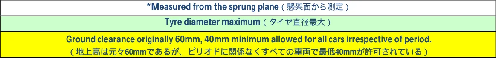
（地上高は元々60mmであるが、ピリオドに関係なくすべての車両で最低40mmが許可されている）
| 1986 | 1987 | 1988 | 1989 | 1990 | 1991 | 1992 | 1993 | 1994 | ||
| Min, weight without fuel | 540 | 540 T 500 NA | 500 | 500 | 500 | 505 | 505 | 505 | 505 | |
| Front wing max. width | 1500 | 1500 | 1500 | 1500 | 1500 | 1400 | 1400 | 1400 | 1400 | |
| Front wing max. height | Rim Ht | Rim Ht | Rim Ht | Rim Ht | Rim Ht | Rim Ht | Rim Ht | Rim Ht | Rim Ht | |
| Front wing max. overhang | 1200 | 1200 | 1200 | 1200 | 1200 | 1000 | 1000 | 1000 | ||
| Rear wing max. width | 1000 | 1000 | 1000 | 1000 | 1000 | 1000 | 1000 | 1000 | 1000 | |
| Rear wing max. height | 1000 | 1000 | 1000 | 1000 | 1000 | 1000 | 1000 | 950 | 950 | |
| Rear wing max. overhang | 600 | 600 | 600 | 600 | 600 | 500 | 500 | 500 | 500 | |
| Front wheel max. width | 18" | 18" | 18" | 18" | 18" | 18" | 18" | 15" | 15" | |
| Tyre max. diameter | 26" | 26" | 26" | 26" | 26" | 26" | 26" | 26" | 26" | |
| Rear wheel max. width | 18" | 18" | 18" | 18" | 18" | 18" | 18" | 15" | 15" | |
| Ground clearance | 60 | |||||||||
| Max. width coachwork | 1400 | 1400 | 1400 | 1400 | 1400 | 1400 | 1400 | 1400 | 1400 | |
| Min. cockpit dimensions | 600 x450 | 600 x450 | 600 x450 | 600 x450 | 600 x450 | 600 x450/300 | 600 x450/300 | 600 x450/300 | 600 x450/300 |
600 x450/300
P.100高さの寸法はすべて、ドライバーが着座した状態で地面から技術図面グランドエフェクトカーのフロントウイング標準仕様
第16項に従う。
前部から後部までの総寸法 － 321mm
前端部半径 － 10.5mm中心線、前部から後部への表面寸法、25mm ごと
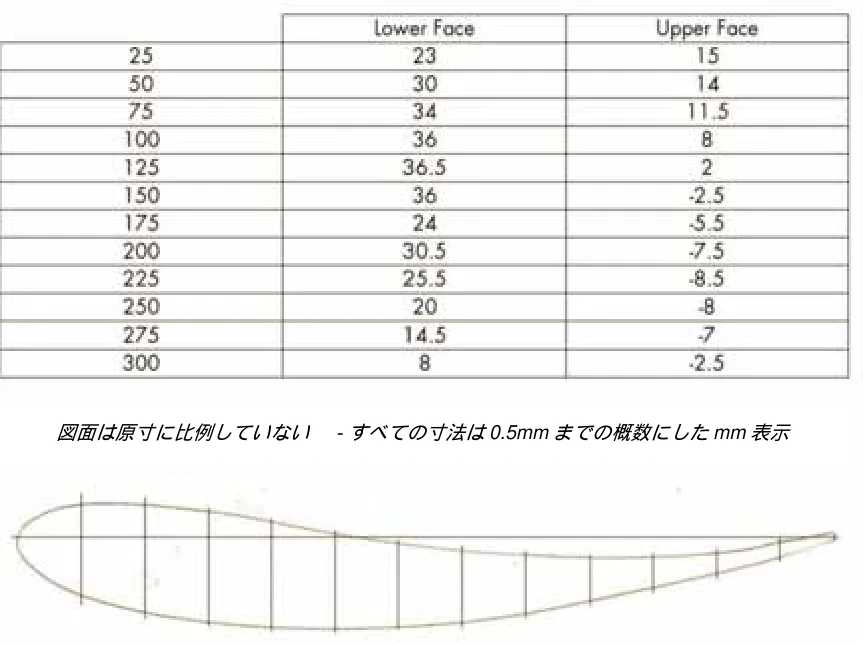
P.101APPENDIX X
Technical Regurations for Formula Junior Cars付則 X: フォーミュラジュニア車両の技術規則
序文
「一般要求事項」では、付則Kがまずこの付則に適用され、さらに該当する場合は付則IからIVも考慮しなければならない。1.一般規則フォーミュラジュニアの車両には、2つの「ピリオド仕様」がある。1.1・FIAピリオドE（FJ/1）（クラスA,B,C） 1958年1月1日～1960年12月31日・FIAピリオドF（FJ/2）（D、Eクラス） 1961年1月1日～1963年12月31日1.2すべてのフロントエンジン車は、ピリオドF（FJ/2）であるU2 Mk 2BおよびMk 3を除き、ピリオドE（FJ/1）である。1.3リアエンジン・ドラムブレーキ車のクラス分けについて以下のリストが作成されている。このリストは完全なものではない；リストにない車両は、最初のレース出場日を決定の基準とする。1.3.1 FIAピリオド E (FJ/1C), クラスC - ウェットサンプ - ドラムブレーキのみ。例としての非網羅的なリスト：
| Britannia | Dolphin Mk 1 | MBM |
|---|---|---|
| Caravelle I | Elva 200 | Moretti |
| Cooper T52 (Mk 1) | Emeryson | Lotus 18 |
| Cooper T56 (Mk 2) | Envoy Mk 1 | North Star |
| Crossle Mk4 | Fafnir | Sauter DKW |
| Deep Sanderson | Focus (Mk 1, 2 & 3) | Saxon |
| De Sanctis (Fiat engine) | Joker | Wainer (Fiat engine) |
| De Tomaso / ISIS (Fiat engine) | Kieft | Nota #38 |
| Faccioli |
Faccioli 1.3.2 FIAピリオドF（FJ/2D）、クラスD-ドライサンプ-ドラムブレーキのみ。例として非網羅的なリスト：
| Alexis Mk 3 | Condor SIII | Gemini Mk3/3A |
| Ausper T3 | Dolphin International (Mk2/2A) | Lola Mk3 |
| BMC Mk 2, Mk3, Mk4 & Mk6 | Elva 300 | Lotus 20 |
| Caravelle II and III | Envoy Mk 2 |
Caravelle II and III Envoy Mk 2 1.4車両は、そのモデルの標準仕様を表す仕様か、付則K項の第3.3項に従って許可された代替ピリオド仕様のいずれかでなければならない。1.5製造者のオリジナル仕様以外の許可された代替部品は、これらの部品が第1.4項に従って使用されたことが証明された場合にのみ使用することができる。1.5.1以下に許可されない変更の具体的な例を挙げる（すべてを網羅するものではない）。1.5.1.1 ジェミニMkII、BMCエンジンからフォードエンジンに変更。
P.1021.5.1.2 Elva 100およびScorpion、DKWからBMCエンジンへの変更（ただし、そのような変更が1995年以前に証明された証拠に基づいて行われた場合は除く。）1.5.1.3 Elva 100、BMC または DKW エンジンからフォードエンジンへの変更。1.5.1.4 Cooper T59, BMC エンジンから フォードエンジンへの変更。1.5.1.5 Lotus 18、Renault Dauphine 4 速ギアボックス (Type 318) からいかなる他の銘柄あるいは型式への変更。1.5.1.6 ピリオド E (FJ/1A) Stanguelliniから5速ギアボックスへの変更。1.6フォーミュラジュニアの車両は、ピリオド中の国際競技歴を証明する必要はない。2.操舵2.1安全のために、一体式のステアリングコラムを、ユニバーサルジョイントあるいはテレスコピック装置を有するコラムに取り替えることができるが、すべてのオリジナルの機能が保たれていることを条件とする。2.2ピリオドの部材ではないが、安全性の観点から、「クイックリリース式」ステアリングホイールハブが許可される。2.3オリジナルのピリオドのステアリングホイールを保持することが望ましいが、直径および／またはスタイルの異なる代替ステアリングホイールの装着ができる。2.4ステアリングラックの設計とレシオは、当該銘柄およびモデルのピリオド仕様に従っていなければならない。3.シャシー3.1シャシーの修理において、パイプの外径（O.D.）、厚さ（SWG）あるいは薄板の厚さ（SWG)を変更することは許されない。使用する一切のパイプや薄板の直径やゲージは、オリジナルのものでなければならない（例：シャシーの度量衡が元々インペリアルのパイプで作られていた場合、交換するシャシーのパイプは、（メートル法ではなく）インペリアルでなければならない。）3.2ピリオドE車両（FJ/1）については、ロールオーバーバーが強く推奨され、ロールオーバーバーが当初より取り付けられている場合には、そのピリオドの競技にて使用されていた当時の車両に取り付けられていたバーの仕様を満たすかそれ以上でなければならない。3.3ピリオドF車両（FJ/2）は、ピリオド仕様に合致する、あるいは付則K項の付則IIを満たすロールオーバー保護体が取り付けられていなければならない。4前後のサスペンション4.1球形（ローズ）ジョイントは、ピリオドの仕様である場合にのみ使用できる。サスペンションのジオメトリーに影響がないことを条件に、ピリオド（FJ/2）のアンチロールバーにもローズジョイントを使用することができる。4.2ピリオドE（FJ/1）車両のショックアブソーバーに球形ベアリングを使用することは、それがその車両のピリオド仕様でない限り、認められない。4.3ダンパーは単一調整式で、鋼鉄製のツインパイプ構造で、ピリオドで使用されていたタイプのものでなければならない。アルミ製ボディ、ガス充填式、リモートリザーバー式ダンパーは禁止される。
P.103参考のためおよびピリオドの仕様については付則K項付則IVを参照。4.4ピリオドE（FJ/1）には、調整可能なスプリングプラットフォームは許可されない。ただし、その車両のピリオド仕様である場合を除く。ピリオド F (FJ/2) の車両は、調整可能なスプリングプラットフォームを使用することができる。4.5ピリオド F (FJ/2) 車両のアンチロールバーの最大許容直径は 15.87mm (5/8inch) である。5エンジン5.1気筒容積は、最大リング行程点で計測して1100cm3を超えてはならない。5.2エンジンの仕様は、フォーミュラジュニアの全期間についてであり、２つの個々のカテゴリーの期間に制限されない。例えば： 5.2.1 Ford 109Eと105Eエンジンブロックは、両方ともピリオドE（FJ/1）に認められる。5.2.2 1100cm3 Ford、B.M.CとD.K.Wエンジンは、類似の1000cm3エンジンの代わりにすべてピリオドE（FJ/1）に認められるが、エントラントは、当初搭載されていた1000cm3のエンジンを保持するよう奨励される。5.3 BMCエンジン搭載車両は、オリジナルのヘッドの代わりに、ケーシング番号12G940のシリンダーヘッドベアリングを使用することができる。5.4認められるBMCエンジンは以下の通り：
| 認められるエンジン | cm3 | ストローク(mm) | 当初のボア(mm) |
|---|---|---|---|
| Morris Minor/A35/Sprite | 948 | 76,2 | 62,92 |
| Mini Cooper 61-63 | 997 | 81,5 | 62,42 |
| Morris Minor Sprite/Midget | 1098 | 83,72 | 64,58 |
| Mini Cooper XSP FJ | 1071 | 68,26 | 70,61 |
Mini Cooper XSP FJ 1071 68,26 70,61 5.5 1964年（F3）より、BMCクーパー970‘S’エンジンに使用されている62mmストロークのクランクシャフトを使用することは認められない。5.6フィアットエンジン搭載車両は、オリジナルの1100/103ブロックの代わりに、標準の68mmボア（1098cm3と同等）を有する103タイプ“D ”および“H”のエンジンブロックを使用できる。さらに後期の103Pおよび103Rブロックの使用は禁止される。5.7製造番号103Hをもつ1100/103ブロックの代わりに、フィアット1100エンジンブロック103タイプGを（標準の72mmシリンダーボアを有し、それが68mmに削減されることを条件に）使用することもできる。5.8フォードエンジン搭載車両は、鋳造コード105Eあるいは109Eのあるブロックを使用しなければならない。さらに後期の５つのベアリングブロックの使用は禁止される。5.9ジェフ・リチャードソン・エンジニアリングが再生したフォード109Eブロックをオリジナルの仕様に使用することは、ピリオドE（FJ/1）およびピリオドF（FJ/2）両方ともに認められる。5.10リチャードソン製ヘッドの取り付けのあるクラスBあるいはCの車両で、リチャードソン製ヘッド以外の点でこれらのクラスに分類される資格のある車両はすべて、クラスDへの分類が認められる。5.11エンジンカバーが取り付けられなければならず、それは適切に留められていなければならない。
P.1045.12ピリオドE（FJ/1）では、カムシャフトはチェーンドライブでなければならない：ギア駆動カムシャフトの使用は、当該車両にピリオド当時それが取り付けられていたことが証明できない限り、認められない。5.13ピリオドE（FJ/1）では、ウォーターポンプの歯形駆動ベルトの使用は禁止される。ウォーターポンプに唯一許される駆動ベルトは“V”タイプベルトである。5.14その他の許可された代替エンジン コンポーネント (特に BMC および Ford) については、FIA ヒストリック データベースを参照のこと。6点火6.1電子点火は、そのシステムがコンタクトブレーカーポイントを利用しているか、磁気的に起動され、高圧電流を通じるのにディストリビューターとローターアームを使用していることを条件に、ピリオドF（FJ/２）のみに認められる。ルーカスAB14システムのみが、電子点火システムとして認められ、コイルは1オーム容量でなければならない。6.2ピリオドE（FJ/1）車両のコイルは、最低3オーム容量を有していなければならない。6.3電子レブリミッターは、すべてのヒストリックフォーミュラジュニアカーに使用できる。6.4すべての車両は、6ボルトまたは12ボルトのバッテリーと車両の始動に使用しなければならない電動式セルフスターターを装備しなければならない。6.5車両に一時的に接続された外部エネルギー源は、スターティンググリッド上およびピット内の両方でエンジン始動に使用することができる。6.6シフトランプのない電子式タコメーターを装着することができる。すべてのその他の計器類は、アナログでピリオドのデザインのものでなければならない。7潤滑系7.1オイルポンプの数とタイプ、および使用される外部のオイル配管の長さは、ピリオドの仕様に合致していなければならない。7.2オイルポンプは、そのオリジナルの位置に取り付けられなければならない。オイルポンプ駆動はオリジナルの通りであること。7.3ピリオドE（FJ/1）のウェットサンプエンジンに、フロント搭載オイルポンプを使用することは認められない。7.4ピリオドE（FJ/1）のエンジン潤滑システムをウェットサンプからドライサンプに変更することは認められない。8燃料システム8.1体積の２％を超えない追加の潤滑混合物を燃料に追加することができる。２ストロークエンジンの場合、このパーセンテージはより高いものであって構わない。8.2燃料タンクの位置を移動し再配置することは認められない。
P.1059キャブレターおよびエアフィルター9.1ピリオドE（FJ/1）およびピリオドF（FJ/2）の車両は、ピリオド当初に取り付けられていたキャブレターのオリジナルの銘柄、モデル、およびタイプを保持することが強く推奨されるが、この条項の9の規則に従い、SUあるいはAMALキャブレターの代わりにピリオドの仕様のウエバーキャブレターを使用することが認められる。9.2ツインサイドドラフトの一組が使用されている場合、キャブレターに認められる最大サイズは、40 eg. 40DCOEである。9.3ツインチョークサイドドラフトキャブレターひとつが使用されている場合、キャブレターに認められる最大サイズは、45 eg 45DCOEである。9.4一組のSUキャブレターが使用されている場合、キャブレターに認められる最大サイズは、11/2インチである。9.5 SUキャブレターひとつが使用されている場合、キャブレターに認められる最大サイズは、13/4インチである。9.6その他の製造者からのウエバー42DCOEあるいは同等のサイズのキャブレターを使用することは認められない。9.7インレットマニホールドは、合金、鋼鉄あるいはステンレススチールで製造することができ、その構造は鋳造あるいは溶接とすることができる。9.8コスワース／リチャードソンダウンドラフトF3MAEヘッドを使用することは認められない。ダウンドラフトキャブレターは、ピリオドにて装着があった場合にのみ、当該車両に取り付けが認められる（例：Terrier T4 S1あるいは Ausper T4）。9.9外付けスライドスロットルは禁止される。9.10ラムダセンサーの取り付けは認められない。10冷却システム10.1スペースフレーム車両のシャシーパイプにはいかなる液体も通さないこと。10.2機械式駆動のウォーターポンプの代わりに電気式のウォーターポンプを装着することは認められない。11ギアボックス11.1 11.3および11.4の条項に従い、ピリオドF（FJ/2）のリアエンジン車両で、ヒューランドあるいはVW以外のギアボックスを当初より装着していた車両は、VWあるいはヒューランドのギアボックスを取り付けることは認められない。11.2以前は、2014年12月31日まで旧第11条1の規定に準拠する特例が適用されていたが、現在は、疑義を避けるために、現行第11条1に準拠しなくなった車に対して2015年1月1日より前に発行されたHTPはもはや有効ではなく、全体が無効であることが確認されている。11.3付則K項の付則VIII第9項の一般規定にも関わらず、特定の例外として2000年12月31日かそれ以前にVWまたはヒューランドのギアボックスを装着していたことが証拠によって証明できるロータス20または22あるいはB.M.C.Mk２は、VWまたはヒューランドのギアボックスを使用する
P.106ことができる。ただし、前進ギアの数はピリオド当時使用されていた数と同一であることが条件とされる。すべての場合において、そのような車両はオリジナルのギアボックスを使用するよう奨励される。11.4付則K項の付則VIII第9項の一般規定にも関わらず、ピリオドF（FJ/2）リアエンジン車両で、ヒューランドあるいはVWのギアボックスを当初より装着していた車両は、ヒューランドMk6またはヒューランドMk8ギアボックスの使用が認められる。それらは、フォルクスワーゲン・ビートルのケーシングを利用しているもので、前進ギアの数はピリオド当時使用されていた数と同一であることが条件とされる。いかなる場合も、そのような車両はオリジナルのギアボックスを使用することが奨励される。11.5ルノー タイプ318ギアボックスピリオドE（FJ/1）およびピリオドF（FJ/2）車両に装着された上記ギアボックスは、以下の条件を遵守することを基礎として、ストレートカットギアを受け入れられるように改造できる： １．標準のルノー外装ギアボックス・ケーシングが保持されなければならない；J.R.Mitchellあるいはそれと同等ないかなる製造者により供給されたエンドプレートケーシングも使用できる（しかし、ギアボックス・ケーシングのプロフィールは一切改造が認められない）。２．出力シャフト・サイドプレートはピリオドの設計でなければならない（つまり、オリジナルのルノーロータスの設計通り）。３．標準のクラウンホイールとピニオン（ルノー）レシオが保持されなければならない。４．入力シャフトは、マフカップリングを保持しなければならない。５．レイシャフトとピニオンシャフトの中央は、オリジナル通りに保持されなければならない。６．ギア選択装置ロッドの位置は、標準のボックスにある通りに保持されなければならない。７．選択機構は、オリジナルの設計と同じ位置で、ギアボックスハウジングへ出て行かなければならない（つまりボックスの後部で）。８．前進ギアは４速のみ認められる。（ジャン・レデレにより５速の取り付けがあったことが証明されている車両は除く）。９．プレス鋼板カバーは、鋳造あるいは機械加工合金の蓋に置き換えることができる。11.6後退ギアを備えることは義務付けられない。11.7オリジナルのギアボックスと同じ銘柄で1963年以前に製造された代替ギアボックスが装着されているクラスA、BおよびCの車両で、その代替ギアボックス以外の点でこれらのクラスに分類される資格のある車両はすべて、クラスDへの分類が認められる。11.8特定の例外として、B.M.C.≪A≫シリーズのギアボックスを装着しているフロントエンジン車両は、前進ギアの数がピリオド当時使用されていた数と同一であることを条件に、≪スムースケース≫ギアボックスの代わりに≪リブケース≫ギアボックスを利用することができる。12ファイナルドライブおよびクラッチ12.1ゴム製ドーナツ（Rotoflex）ドライブシャフトジョイントは、ピリオドで使用されていたユニバーサルジョイント（Hardy Spicer型）に交換することができる。取り付けスパイダーの根本的な変更および/または交換と、スライディングカップリングの追加のみが許可される。12.2ドライブシャフトに、一定速度ジョイントの現代版を使用することは認められない。12.3クラッチシステムの技術については付則K項第3.7.5項を参照。13制動
P.10713.1ディスクブレーキは、ピリオドの仕様である場合にのみ認められ[ひとつだけ例外がある]、ピリオドF（FJ/2）車両にのみ適用できる。ブレーキのサイズおよびタイプはオリジナルの仕様通りとし、増大されないこと。これには、ディスクブレーキ装着車両とドラムブレーキ装着車両の両方を含む。13.2孔開きディスクブレーキは認められない。ブレーキディスクは改造されてはならない。つまり、ディスクの表面にスロットおよび／あるいは溝付けがあること、およびクロス穴開けは認められない。14ホイール14.1フォーミュラジュニアに認められる最大リム幅は、ピリオドE（FJ/1）車両については５インチ（127mmまたは５J）、FIAピリオドF（FJ/2）車両については6.5インチ（165mmまたは6.5J）である。上述のリム幅は、そのカテゴリーの最大測定値であり、車両はピリオド当時車両に当初装着されていた通りのリム幅と同じかそれより狭い幅のリムを使用しなければならない。14.2ワイヤーホイールをディスクホイールで代用すること、またその逆も認められない。14.3 ２つの部分に分かれた（スプリット・リム）ホイールは、ピリオドの仕様でない限り認められない。14.4 FJ OSCA 車は、フロントおよびリアのホイールの最大許容寸法は、4.5'' J x 15''である。14.5当時3.5インチまたは4.0インチ幅のボラーニ製ホイールリムを装着していたFJ車両についてはフロントのリム幅を最大4.5インチまで拡大することが認められる（これに伴うフロントトレッドの増加を含む）。15タイヤ15.1フォーミュラジュニア車両は、ダンロップビンテージ範囲のタイヤR5パターンか、それより古いパターン、あるいは≪L≫セクションでも204コンパウンドとトレッドパターンCR65 を有するタイヤのみ、あるいはそれ以前のもののいずれかを使用しなければならない。15.2リム幅が3.5インチ（88.9mm）以下で、ダンロップビンテージ範囲のタイヤから適切な仕様が利用できないホイールは、アスペクト比が75％以上で速度等級が≪S≫以上の«E»あるいは«DOT»承認を得たクロスプライあるいはラジアルの公道用タイヤとして販売に供されているタイヤを使用することができる。タイヤの競技への適正について製造者に意見を求めること。注：これは、スタンゲリーニとヴォルピニの一部、およびその他早期のイタリア製車両にのみ適用される。16重量16.1最低重量制限は880lbs（400kg）である。しかしながら、この重量制限は、1000cm3（1000ml）以下の気筒容積の車両については794lbs（360kg）に削減される。上述の重量は出走準備の整った車両、つまり、燃料タンクは空にし、本規則によって要求される付属品はすべて取り付けられた状態にて計測される。
P.10817最低地上高17.1車両の全ての懸架部分は、最低2.36インチ（60mm）の地上高（乗車高）を有し、競技中のいかなる場合にも、任意の側から高さ60mmのブロックを車両の下に通すことができなければならない。最低地上高は、ドライバーが搭乗しない状態で競技用のホイールとタイヤが装着されて計測される。17.2計測は、ピリオドE（ＦＪ/１）車両の“ウェット”オイルサンプ、排気パイプ、内側のサスペンションピックアップポイント、すべての車体およびフロアパンを通じて取り付けられる搭載ボルトを含め、すべての懸架構成部品に適用される。
P.109APPENDIX XI
Tyres付則 XI: タイヤ
1.一般1.1 国際スポーツカレンダーに登録された競技に出場する全ての車両は、承認された特定の競技あるいはシリーズについて特に変更がある場合を除き、以下のタイヤ規定を遵守しなければならない。論争が生じた場合に最終的な決定権はFIAが有し、かかる変更を承認することができる。1.2競技参加者の特定の用途に応じて、タイヤの適正をタイヤ製造者に確認することは、競技参加者の責務である。1.3付則Ｋ項に特に明記されていない限り、また入手利用可能な実際的範囲の中で、タイヤの幅、概観およびトレッドパターンは当該ピリオドの間の車両あるいは類似車両に搭載されていたものと一致していなければならない。車体およびリムに関するすべての関連規定が遵守されなければならず、競技参加者は、選択したタイヤが使用しているリムに適応していることを確実にする責務がある。1.4タイヤウォーマーの使用は禁止。1.5タイヤトレッドのヒステリシス（遷移）、率あるいは硬度に影響を及ぼす物質の追加は禁止される。1.6タイヤのコンパウンドには、タイヤのサイドウォール部分に、黄色で下線が引かれなければならない。NOVA Avonタイヤはコンパウンドでなくコード番号しかない。2.量産車および２座席レーシングカー（TSRC）
サーキットおよびヒルクライム2.1 ピリオドＡ～Ｂ
当該車両ピリオドのものに適したサイズのタイヤを使用しなければならない。2.2 ピリオドＣ～Ｅ
2.2.1 車両のピリオドの適切なサイズとアスペクト比で、ビンテージ範囲について公認されたタイヤのタイヤリストに従うタイヤを使用しなければならない（ヒストリックテクニカルタイヤリストNo.100を参照）。2.2.2 CT、GTS、GTP車は«L»セクション範囲のHTH-004およびHTH-005のレーシングタイヤ、および／または«T»セクション範囲のHTH-006のタイプを使用することができる。2.2.3 1960年12月31日より前に使用されていた仕様のウィディ(Widi)、ギルビー(Gilby)、リジョー(Rejo)車 は«L»セクション範囲のHTH-005タイヤタイプ、および／または«T»セクションの範囲のHTH-006のタイプを使用することができる。
P.1102.2.4 ピリオドEの車両には、 HTH-005«M»セクションのタイヤの使用は禁止される。2.2.5 適切なタイヤ仕様がない場合、特別な要請により公道用タイヤとして販売されているタイヤで、アスペクト比が75％以上の、速度等級が «S»以上のその他のタイプのタイヤを使用することができる（ヒストリックテクニカルタイヤリストNo.100参照）。2.3ピリオドＦ車両のピリオドの適切なサイズとアスペクト比で、ヒストリックテクニカルタイヤリストNo.100のヒストリック範囲について公認されたタイヤのタイヤリストに従うタイヤを使用しなければならない。適切なタイヤ仕様がない場合、特有の要請により公道用タイヤとして販売されているタイヤで、アスペクト比が75％以上の、速度等級が «S»以上のその他のタイプのタイヤを使用することができる（ヒストリックテクニカルタイヤリスト#100参照）。2.4ピリオドＧ１、Ｇ２およびＧＲ
2.4.1 レースがウェットと宣言された場合は、204コンパウンドか、あるいは404コンパウンドの、ダンロップビンテージ、«L»および«M»セクションのレーシングタイヤを使用でき、484コンパウンドのポストヒストリック範囲からのレーシングタイヤ、あるいはグッドイヤーの«ブルーステーク（Blue Streak）» レーシングタイヤ、または “ヒストリック全天候型”のパターンにハンドカットしたノバ・エイボン・スリックタイヤ（NOVA Avon slicks）および／あるいは第1.3項に従うその他の適切な製品を使用することができる。2.4.2 T、CT、GT、GTSおよびGTP車両も、競技開催国の適切な基準に従う«E»あるいは«DOT»承認を得た第4.2項に規定される最小外径のタイヤを使用できる。2.5ピリオドＨ１およびＨＲ以降
2.5.1スリックおよびウエットタイヤを使用できる。T、CT、GT、GTSおよびGTP車両も、競技開催国の適切な基準に従う«E»あるいは«DOT»承認を得た8.4.2に規定される最小外径のタイヤを使用できる。2.5.2 3.5インチ未満の幅のリムを伴うホイール装着し、適切な仕様のタイヤのない車両は、クロスプライあるいはラジアル公道用タイヤとして販売されているタイヤで、アスペクト比が75％以上、速度等級が «S»以上の、競技開催国の適切な基準に従う«E»あるいは«DOT»承認を得たタイヤを使用することができる。2.5.3ピリオドで１３インチのリアホイールを使用しており、そのピリオドで使用されていた幅および外径のピリオドの仕様のタイヤが使用できなくなったシングルシーターおよびスポーツカーは、１５インチのリアホイールと同等の幅および外径のタイヤを使用することが許可される場合がある。2.5.4《Can-Am》競技のために製作された車両はスリックタイヤを使用できる。2.6詳細
ピリオドＥ以降の T、CT、GT、GTSおよびGTP車両は、2時間以上の固定した持続時間のサーキットで行われる耐久レース（およびそれに対応するプラクティスセッション）に参加する場
P.111合、下記第4項にターマック路面ラリー用に決められた規定に従った適切な公道タイヤを使用
できる。3.シングルシーター
サーキットおよびヒルクライム3.1フォーミュラジュニア
ダンロップビンテージ範囲のタイヤで、R5かそれより古いトレッドパターンのタイヤか、204コンパウンドの«L»セクションの範囲のタイヤで、CR65かそれより古いトレッドパターンのタ
イヤを使用することができる。3.2フォーミュラ1
車両は付則IXの第14項に合致しなければならない。3.3 1000cm3フォーミュラ3
1965年12月31日以前に製作された車両で、サイドドラフト・エンジンを搭載し、直径13インチ幅最大6.5インチのホイールリムを装着する車両は、NOVA Avon AC89成型トレッドパターンA37コンパウンドコードNo.7660（フロント）7661（リア）のタイヤか、あるいは204コンパウンドのダンロップLセクションCR65のタイヤいずれかを、またレースがウェットと宣言された場合は404コンパウンドを使用することができる。1965年12月31日以降に製作された車両および／あるいはダウンドラフト・エンジンおよび／あるいは6.5インチを超えるホイールを装着した車両は、以下の仕様のエイボンあるいはダンロップタイヤのいずれかを使用することができる。ドライコンディションでは、“ヒストリック全天候型”のパターンにカットしたコンパウンドコードNo.7342（フロント）7343（リア）のNOVA Avon A37コンパウンドのスリックタイヤ。あるいは、ウェットコンディションでは“クラシック・フォーミュラ・ウェット”パターンにカットしたコンパウンドコードNo.7714（フロント）7715（リア）のNOVA Avon A37コンパウンドのスリックタイヤ。それに替えて、ダンロップ«L»あるいは«M»セクションCR65あるいは204コンパウンドのポストヒストリック、またはレースがウェットと宣言された場合は404コン
パウンドを使用することができる。3.4 1600cm3および2000cm3のフォーミュラ3（1972年～1984年）
これらの車両は、以下の仕様のNOVA Avonレーシングタイヤを使用しなければならない：フロント7.5/21.0x13インチ、リア9.2/22.0x13インチ、A37コンパウンドでコードNo.7342（フロント）7343（リア）のドライ仕様スリックタイヤ。あるいは、ウェットコンディションでは“クラシック・フォーミュラ・ウェット”パターンにカットしたコンパウンドコードNo.7277（フ
ロント）7278（リア）のA27コンパウンドのスリックタイヤ。3.5 1600cm3および2000cm3のフォーミュラ2
以下のいずれかを使用しなければならない：
－ 第2.4項に一覧の掲載されたタイヤ；あるいは
－ 第3.4項の通りのNOVA Avonレーシングタイヤ。
P.1124.ラリーの車両
4.1ターマック路面およびロードセクションのラリーステージに使用されるタイヤは、競技会の開催国の適切な基準に従う«E»あるいは «DOT»のマークが付けられていなければならない。それらのタイヤは該当のピリオドに対応する最小外径（下記第4.2項参照）を有していなければならない。すべての車両において、トレッド無しタイヤまたはレーシング用ターマックスリックタイヤの使用を禁止する。通常の使用における磨耗以外の、タイヤへの一切の変更、改良、改修（溝の追加加工を含む疑義を回避する理由により）は禁止される。グラベル路面でのステージについては、競技長がそのように宣言した場合、これらのタイヤに«E»あるいは «DOT»のマークは不要である。4.2下記の表に示された、ピリオド当時実用されたホイール最小外直径およびタイヤアセンブリ、およびリム直径を遵守しなければならない:
| リム直径 | ピリオド | コンプリートリムの最低直径 |
| 10" | F | 490mm |
| 11" and 12" | F | 530mm |
| from 10" to 12" | G | 490mm |
| from 10" to 12" | H + I | 480mm |
| 13" | F | 545mm |
| 13" | G | 530mm |
| 13" | H | 490mm |
| 13" | I | 480mm |
| 14" | F | 580mm |
| 14" | G | 560mm |
| 14" | H + I | 530mm |
| 15" | F | 630mm |
| 15" | G | 590mm |
| 15" | H | 570mm |
| 15" | I | 550mm |
| 16" | H | 580mm |
| 16" | I | 570mm |
| 17" | H | 600mm |
| 17" | I | 580mm |
| 18" | H + I | 625mm |
| 19" | I | 630mm |
19" I 630mm 4.3競技参加者が使用するタイヤに何らかの疑義が生じた場合、競技参加者より供給される新品のタイヤを、冷えた状態で､メーカー推奨の標準圧力によって膨らませて測定する。4.4ピリオドではより低いアスペクト比のタイヤが使用されていたことが証明された場合、HMSCはその使用を認める場合がある。4.5速度等級が«S» (最大時速112マイル または 180km)を下回るラジアル・プライ・タイヤの使用が検討される場合には、その適正について製造者に意見を求めること。これは特に、速度等級がQ(最大時速100マイル または 160km)を上回ることがほとんどない«マッド＆スノー»タイプのタイヤで、非舗装路面ステージを走行する際に考慮されること。4.6ピリオドEあるいはそれ以前の、リムの直径が17インチ以上か、またはリム幅が3.5インチ以下の車両は、ラジアルあるいはクロスプライ構造の、アスペクト比が75％以上のロードタイヤを使用することができる。競技へのタイヤの適正については、製造者に意見を求めること。
P.1134.7クロスプライタイヤの速度等級は、ホイールの直径によって異なることが留意されるべきである。クロスプライタイヤに適用される速度等級マーキングには３種類ある。マーキングが無く、それゆえに最低の速度等級を有するタイヤもある。等級は以下の表の通り:
| ホイールサイズ （インチ） | 10 | 12 | 13+ |
| 速度等級 | |||
| - | 120kph/ 75mph | 135kph / 85mph | 150kph / 95mph |
| S | 150kph / 95mph | 160kph / 100mph | 175kph / 110mph |
| H | 175kph / 110mph | 185kph / 115mph | 200kph / 125mph |
| V | 210+ kph / 130+ mph |
210+ kph / 130+ mph 4.8泥用および雪用の種類がある冬用クロスプライタイヤは、表中の最低速度等級を有する。スタッド付きタイヤは、競技開催国の法規に従う。